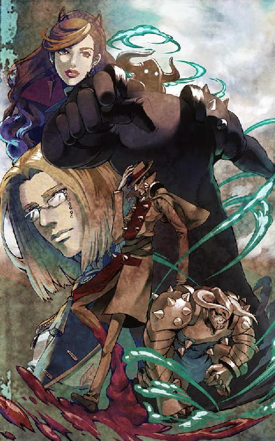
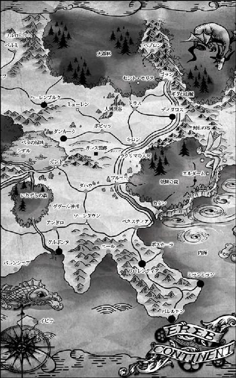
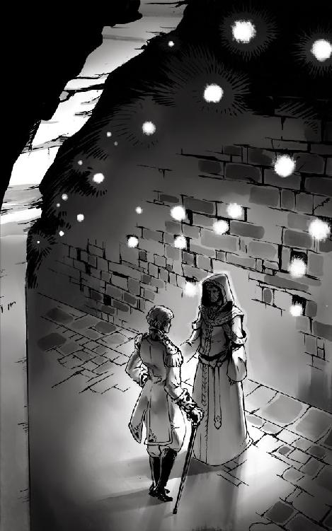
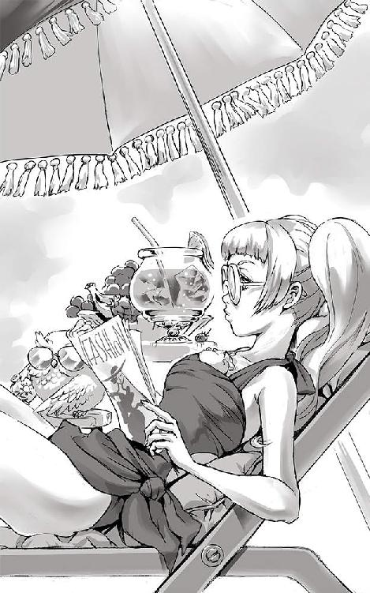
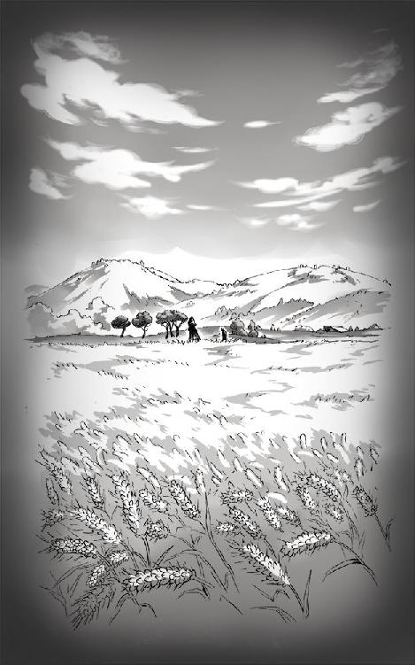
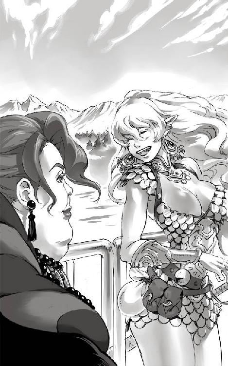

| 圧巻のグリモアール４ 魔法の薬師と妖魔の兄弟 | |
| 町田 松三 | |
| Matsuzo Machida (2016) | |
灰と野バラ文庫
圧巻のグリモアール ４
『魔法の薬師と妖魔の兄弟』
町田 松三
表紙イラスト・挿絵 加藤 美也子
目次
※この電子書籍は縦書きでレイアウトされています。
※ご覧になる環境、システムによって表示の差が認められることがあります。


グレッグ・ゴットン副長は今年で四十の坂を越え、己の人生について深く考える時間が多くなっていた。それというのも、昨年結婚した十五歳も年下の愛くるしい嫁が、この春、これまた輪をかけて愛くるしい珠のような赤ん坊を産んだからだ。
年老いてからの嫡子誕生に大喜びした彼は、神への感謝を叫びながら狂人のごとく近所中を走りまわった。
王都の北に位置するゴランの片田舎に生まれ、青雲の志を抱いて王立警察隊の入隊試験を受けたのは、かれこれ二十年も昔の話である。以来、祖国への忠孝を尽くし、どのような危険な任務であっても命をかえりみずに突き進んできた。
ふり返ってみれば、その強面の顔と生真面目な性格のおかげで年頃の女性と付き合った記憶もほとんど無く、青春と呼べる時代は仕事一筋のうちに過ぎ去ってしまった。
しかし、今、部下たちを引き連れて鉄の巨人宮の廊下を足早に進む心には、後悔の念など微塵もなかった。
勇敢で優しく同期の隊員よりも頭ひとつ図抜けた彼は、多くの武功を上げてきた。このまま出世街道をばく進し、いずれは王都の警察隊長になるであろうと誰もが賞賛を贈った。
だが、その風向きが変わったのは三年ほど前からである。
長年仕えた敬慕する上官が事故で急死し、その後を継いだ若いどら息子の補佐役を任されたのだ。
若い指揮官は情熱こそ素晴らしい男であったが、馬鹿であった。
いや、ただ馬鹿だと言い捨てるのは正確ではない。馬鹿の一言で済ませるには、あまりにも浮き世離れした大冒険を次々と成し遂げていく英雄でもあったからだ。
新たな上官となったどら息子は、無手っ法と呼ぶにふさわしい勇敢さと、精気に充ち満ちた魅力と、わけのわからない幸運を神から授かっていた。
どの現場でも馬鹿の振るう大雑把な采配は部下たちをひどく悩ましたが、となりで影のように付き従う優秀な参謀が知恵をしぼり、彼自身もより良い提案を行うことで数々の難事件を解決していった。
どら息子は馬鹿であったが、まわりの声に耳を傾け、豪胆な決断を下せる大器であった。
――ともかく。頭を抱えながらもそんな上官を愛し、全力で支え、今日まで激務に励んできたのだ。辛くとも苦しくとも、一生を捧げられる仕事と愛する家族に恵まれ、ゴットン副長は幸福であった。
しかし......。しかしである。
そんな幸せのすべてを一瞬にして失ってしまうかも知れない役目に、いま彼は着いていたのだ。
不安をぐっと胸の底へと呑み込み、あらためてキリリと背筋をのばす。
これから自分のしようとしていることを考えると、怖じけて吐き気をもよおしてくる。それは身を強張らせてついてくる部下たちも同じのはずだ。誰もが青ざめた顔で唇をかたく引き結んでいた。
彼は部下たちに気取られぬよう、せり上がってくる虫酸をこらえた。
赤い斜光の光が差す長い廊下からちらりと窓の外をうかがえば、沈もうとしている夕日がギダの山肌へ王宮の影を長く浮かび上がらせていた。
「急ぐぞ、間もなく日が暮れる」
「はっ！」
不吉な夜の訪れを知らせる尖兵か。王宮の中を闊歩する警察の一隊は、人々の目をはばかることもなく、謁見の間の奥に広がる女王が暮らす聖域へと足を踏み入れた。
聖都ヘブロン襲撃事件以来、華やかな晩餐会は自粛され、ヘカテ女王は今夜もはやくから自室へと引き上げていた。何よりも彼女を沈鬱にさせていた理由は、今朝方となりの城砦都市ドラスからもたらされた知らせであった。
それは、マーセル子爵の指揮する移動城砦ネルケが敵の本拠地であるガレス砦跡を強襲したものの、予期せぬ猛反撃の前に大敗を喫すると言う内容だった。
ネルケとカストールを持ってしての敗北は、鉄の巨人宮が立ち上がらんばかりの激震となって円卓の間を駆け抜けた。
次の手を打つべく、ただちに蒸気伯爵を巨人宮へ召還せよと命じた女王だったが、彼もいまだ行方不明の身であると報告を受け、がっくりと肩を落とした。
こうして、すべてのお膳立てがそろう中、ディダロスを覆い尽くす暗雲は空の彼方より近づきつつあったのだ。
やがてゴットン副長と警察隊の精鋭は女王の私室の前へとたどり着いた。
ここの警護を受け持つのは、シュマッカー宰相の配下である親衛隊の兵士たちだ。
貴族の中から選出されたエリート部隊の彼らは、普段から街でゴロツキどもの相手に明け暮れている警察隊へ蔑んだ目を向けた。
「警察隊の三下どもか。そろいもそろって、こんな時間に何用だ？」
二人の屈強な衛兵は、無言のまま何も答えぬ男たちから異様な気配を感じ取って身構えた。だが、それよりも早く、ゴットン副長が手を上げた瞬間、文字通り一丸となった隊員たちが二人へ殺到し、声を上げる隙もあたえずに気絶させた。
ふう。と、ゴットン副長は大きく息をついた。
ついに......、ついにやってしまった。
もはや、ここから先は引き返すことのできない賊臣の道である。
これが祖国のためと言われても本心から納得できるものではない。だが、迷っている時間は無かった。我ら王立警察隊の騎士たちは、これまでそうしてきたように、今度も突き進むしかないのだ。
「よし、突入せよ！」
ゴットン副長は、重々しく言った。
精鋭たちが体当たりで大扉を打ち破ろうとしたとき、中からドアが開き、ひょいと小柄な老婆が顔をのぞかせた。
女王の身のまわりの世話をしている老婆は、だらしなく床にのびている衛兵たちへ視線を落とし、青あざを浮かべて鼻血をたらしている警察隊員たちを見回し、最後にゴットン副長をにらみつけた。
「ドタバタと物音がしたかと思ったら、ゴットン副長ではありませんか。いったい何事です？」
「こ、これは、エルザ侍従長」
「おやおや、居眠りをしているなんてダメな衛兵たちね。それより、あなたには何事かと訊いているのよ？」
「はっ、あの......その......、申し訳ありませんっ、失礼しますっ！」
毅然と言い放ったゴットン副長は、いぶかしむ侍従長を丁寧に横へ押し退け、部下全員と夕食の支度がすすめられていた小広間へなだれこんだ。
「これ、ゴットン！」
暴れる侍従長を部下に任せ、ゴットン副長は急いで女王の姿を探した。
「私の質問に答えなさい！ それに、許しも得ず強引に陛下の居室へ足を踏み入れるとは言語道断不届き千万！ ほれ、おまえたちもこの手を放せ、このっ、そこは乳じゃ、無礼者どもめ、もごもご......っ！」
悪戦苦闘しながらも丁寧に老婆の身体と口を押さえつけた部下たちへ頷くと、ゴットン副長は冷や汗を浮かべながら女王の寝室の前へ歩み寄った。
扉の向こうから、エルザ、どうしたのです？ と声が聞こえた。
ノックをしようとしてゴクリと固唾を呑む。
一警察隊員の分際で、こともあろうに女王陛下の寝室へ押し入ろうとしているのだ。実直を絵に描いたような人生を送ってきた彼にとって、それは普通に考えただけでも卒倒しそうな行為だった。だが、今は己の信念を貫くため、為すべき事を為すため、あえて、この手を汚すしか他に道はないのだ。
ゴットン副長は大きく振りかぶったかと思うや、思いきり優しくコンコンと小さなノックをした。
「騒々しい、すぐに行きます......」
イブニングドレスにゆったりとしたケープをまとったヘカテ女王は、扉を開けた途端、侍従長を押さえ込んだまま整列している王立警察隊を見て言葉を失った。
間髪を容れず、一歩前へ出たゴットン副長が胸を張って敬礼する。
「突然のご拝謁をたまわり誠に申し訳ございません！ ゆえあって、女王陛下の御身、ただ今この時より私ゴットンがお預かりいたします！ ご抵抗なさらず、おとなしく我々とご同行ください！」
ゴットン副長の鬼気迫る雰囲気に押され、ヘカテ女王は黙ったまま目をぱちくりさせた。
こうして彼は、時の女王を誘拐した首魁として、永くディダロスの歴史に名を刻む大事件を引き起こしてしまったのである。
それは、はるか遠いニレの古戦場で、蒸気伯爵たちが神の鉄槌団と激しい戦いをくりひろげた日の夕方の出来事であった。
ほどなくして......。
ディダロス王国の景観をオレンジ色に染めていた初夏の太陽が西の空に沈むと、世界は群青へと塗りかえられた。
険しいギダの山脈に抱かれるような丘陵に築かれた巨大な城砦都市の東側には、遠く内海までつながるラクリマの大河が横たわたり、悠々と流れる水面を渡ってきた風が、街のあちこちから立ち上る蒸気と排煙をゆるく吹き消してゆく。
そんな晩刻に、上品な鐘の音が鳴り響いていた。
建国の祖イスカンダー大王の時代に建てられた凱旋門からのびる中央通りには、街のシンボルとも言えるセンタータワーがそびえている。その上部にある古い機械仕掛けの大時計が時報とは別の音色で日没を告げているのだ。
鐘の音が町中をかけめぐると、ゴーグルと手袋をはずした坑夫たちは深い炭鉱から戻るためにエレベーターへ乗り込み、城外に広がる一面の麦畑で作業を終えた農夫たちも相乗りした馬車にゆられて壁内を目指して家路につく。
盛り場は夜が来るのを待ちわびた者たちで賑わい、煌々と明かりの灯された酒場でスモークビールやワインを酌み交わしながら一日の労をねぎらうのである。
それが、ここに暮らす人々にとってのあたりまえの日常であった。
今、ディダロスの国民がもっとも関心を寄せている話題と言えば、ほかでもない、神の鉄槌団討伐の行方である。この件に関しては、敵の首領と名乗るゼール将軍みずからがアジトの場所まで明かして挑戦状を叩きつけてきたこともあり、ディダロスだけでなくマスコミをはじめ周辺諸国も興味津津で事の成り行きを見守っていた。
わかりきっていたことだが、すべての国民は大ディダロスの正規軍が無法なテロリスト集団を完膚無きまでに叩き潰す事など造作も無いと楽観していた。
ところが現実はそうはならず、天下無敵を誇っていた討伐軍は壊滅したのである。
人々はあまりに想定外の出来事に、どこか遠い、よその国の話のように実感がわかなかった。そして、芝居の幕間を待つ観客の気分で、これからの展開がどうなるかを熱心に語り合った。
そう、まだ彼らには祖国の英雄が残されているのだ。
「こうなったら、いよいよ蒸気伯爵の出番だろう。きっとあの方なら敵を蹴散らし、仲間の仇を討って祖国の名誉を回復してくれるはずだ」
「そうだそうだ！ マーセル子爵のようなボンボンじゃねえ、実戦経験も豊富な真の戦士だからな」
「ビューッと大鷲のように空を飛んで、爆発する槍を敵の頭上からガンガン打ち下ろすに違いないぜ！」
なかば生きた伝説と化している男の人気は、酒の席では最高の肴であった。
まだ今夜の時点では人々の知るところではないが、実際、蒸気伯爵はすでにガレス砦を陥としているのだ。もっとも、みんなが想像するような雄々しく格好良い活躍からはほど遠い、グズグズで間抜けな体たらくではあったが......。ともあれ、その記事は明朝の魔導日報には掲載されるはずであるから、国民の不安も今夜かぎりのものであろう。
そんな街の喧騒を見下ろす丘の上のテラスで、エアトン・セナード侯爵はひとり酒を飲んでいた。まだ身体に障るからと医者は渋い顔をしたが、唯一の楽しみにと頼み込んで差し入れてもらった一本だ。それを小さなグラスに注ぎ、毎晩ゆっくりと本を読みながら飲むのが日課になっていた。
ここは医術院の病室である。入院してから半月が過ぎて、ようやく杖を頼りに歩くことぐらいはできるようになった。まだまだ全快にはほど遠かったが、今日も昼間は円卓の間での軍議にも参加してきた。こうして少しずつでも重臣としての務めを果たすことで、エアトンは気力を喚起しているのであった。
とくに女王はひどく落ち込んでいた。いつにも増して気丈に振る舞ってはいたが、会議ではついに打開策が見つけられず、議論は明日へと持ち越しになった。
「ゲルハルト、おまえは今頃どこで何をしているのだ......。今日、私たちのおてんば娘は、とても心細い顔をしていたぞ......」
ショットグラスに街の明かりが反射するウイスキーを見つめ、エアトンは思わず独り言ちた。
もう二十年ちかくも昔の話になるだろうか。それでもこうして目を閉じれば、すごく鮮明に蘇ってくる......。まだ幼い頃、自分と親友は、六つ年下のヘカテ姫の良き遊び相手であった。チビだのおみそだのとからかわれてばかりいるのに、快活な少女はいつも笑顔で好奇心旺盛な悪ガキどもにくっついてまわっていた。悪戯にも喜んで参加し、あとで怒られるときも三人は決まって一緒だった。
やがて少女は十歳になった秋、祖国を離れてニール教皇国の大修道院へ留学した。それから七年間の厳しい学生生活を終え、王都へ戻ってきたときには、すっかり身体も言葉使いも女らしくなっていて二人とも別人かと呆気にとられたものだ。そして今では中原屈指の大国を治める立派な女王である。しかし、ゲルハルトにしてもエアトンにしても、心の中で笑っている彼女は、いつまでたっても可愛いおてんばヘカテそのままであった。
エアトンは、その笑顔を思い浮かべながら一口酒をふくんだ。
ディダロスを出奔した蒸気伯爵が大森林の中にあるセント・モリスの村で神の鉄槌団とやり合った噂は彼の耳にも届いていた。おそらく敵の内偵を依頼していた魔法使いとの合流を果たしたのだろう。その後、彼らはぷっつりと消息を絶った。今どこでどうしているのか、知らせて欲しいとは思うが、よくよく考えてみれば、間者が潜む王都へ危険を犯してまで連絡を入れてくるはずもあるまい。
「ただ信じて待つ事が、これほど辛いものとはな......」
小さなため息をつき、今度は残りのウイスキーを一気にあおった。勢いをつけすぎたせいでゴホゴホとむせた。誘発された咳が彼の体力をまた奪ってゆく。エアトンは自暴自棄になりかけているのを自覚していた。喘息の特効薬にと贈られた魔法の花も、聖都が襲撃されたときに割れてしまった。
普段冷静な彼が酒に溺れるなぞ考えにくいことであったが、この有事の際に思いどおりに動けぬ我が身を呪い、やけ酒で気をまぎらわせるより仕方がなかった。
もう一杯グラスに酒を注いだエアトンはロッキングチェアに寄りかかると、深く揺られながら、ふと視線を遠くへ向けた。
そして、瞬く星々の中に動く不吉な闇を見た。
我が目を疑い、思わず身を乗り出す。
夜空に浮かんだ染みのような細長い闇は、星々の光を遮りながらゆっくりとこちらへ近づきつつあった。
「まさか、あれは......！」
エアトンの胸に動揺が走った。忘れもしない、あの形......！
気がつけば、館をかこむ木々の梢を風が激しく揺らしはじめていた。
彼の頭に、さらなる不安がよぎった。
今の今まで風など吹いていなかったのに、突然、荒れ狂った強風が大地を打ちつけてきたのだ。異常な暴風にあおられた緑の丘の上では、牧草や石炭を貯蔵している掘っ建て小屋の屋根が、人でにぎわう繁華街では、板看板や屋外に張られたカフェの天幕などが激しくあおられた。
見上げれば、遠くギダの山脈の黒い稜線までがゴーゴーと鳴動していた。
愕然としているエアトンの前で、見る見るうちに王都の上空には積乱雲がわき起こった。
やがて雷鳴が轟いたかと思うと、何層もの分厚い雲間に稲妻が発生した。
「魔法だ......、魔法で作られた嵐だ......」
聖都ヘブロンを襲った嵐の再来にエアトンの背筋は凍りついた。
慌てて立ち上がった彼は、杖をつかもうとしてしくじり、そのまま前のめりに倒れた。
「くっ、くそ......っ！」
必死に上体を起こし、手をのばして柄を引きよせる。
間違いない。聖都を焼いた飛行船が嵐を従えて現れたのだ。
エアトンは、あの時とはくらべものにならないほどの大きな恐怖に囚われた。その理由は、この嵐が飛行船を隠すためではなく、街を破壊する強い意志と圧倒的な力を誇示するために創り出されたように感じたからだ。赤い炎の尾を引いて落ちてくる焼夷弾よりも、はるかに恐ろしい邪悪な気配に満ちていた。
まもなく、その予感は的中した。膨れあがった雷雲は豪雨を降らすかわりに青白い稲妻の楔を大地に突き刺しはじめたのだ。
センタータワーめがけて落ちたひときわ大きな稲妻は、一瞬、真昼のごとく世界を照らしたあと石造りの塔の上半分を粉砕した。
連続する爆撃音が地響きを立てて王都の夜を切り裂いた。
家から飛び出した者も窓を開けて身を乗り出した者も、荒れ狂う嵐に舞った石塊や火の粉から身を守ろうとして悲鳴を上げた。
「あれは何だ！」
「空に何か浮かんでいるぞ！」
「飛行船だ！ 飛行船が襲ってきたんだ！」
「まさかあれは、ヘブロンを襲ったヤツじゃないのか？」
大事な塔を破壊された人々は、驚愕した顔で空を指さしわめいた。
さらに追い討ちをかけんと、天からの雷は立て続けに街のあちこちへと落とされた。
稲妻は、一般市民の暮らす家々、木組みで作られた高架鉄道の線路、王城の尖塔など、何かれかまわず破壊した。
燃え上がる炎と焼けた瓦礫から逃れるため、人々は激しいパニックに陥った。
すぐさま数本の照空灯が焚かれ、地上からのびた細長い光が上空の船影を照らし出した。同時に非常事態を告げる早鐘が鳴り響く。
城壁の上へ走り出た衛兵たちは、威圧感たっぷりに浮かぶ謎の飛行船に対して、手にした長弓を射かけ、小銃や機関銃を発砲した。しかし、暴風が矢弾の威力を奪い攻撃の弾道を大きくそらした。たとえ命中しても、うっすらと光る魔法のバリヤーによってはじかれた。
やがて飛行船は鉄の巨人宮の真上で静止した。
上空では広大に発達した乱雲が渦を巻きはじめ、つづけざまに轟く稲光りが雲間を青白く染めた。
飛行船は、ぽっかりと口を開けた渦の中心で、暴風に守られながらゆっくりと降下をはじめた。
時どき雲間へ向けて飛行船から赤い稲妻が走るのに気がついたエアトンは、船体前部の上甲板に立っている人影を見つけた。全身に赤紫の光をまとい、まわりの乱雲に向かってプラズマを放射している。
「ま、まさか......、王宮へ突入する気なのか！」
ますます勢いを強める魔法の嵐の中、敵の意図を見抜いたエアトンは、悩み事も忘れ、必死に杖で身体を支えながら医術院を飛び出していった。
ゆっくりと空中庭園へ高度を下げて行く飛行船に向けて、城壁の塔に設けられているいくつかの砲座が照準を合わせるために旋回した。城を守る衛兵たちは、この大胆な奇襲作戦を仕掛けてきた敵を撃墜しようと、加農砲を城壁の内側へ向ける決意をしたのだ。飛行船から垂れ下がった何本ものロープを見れば、賊が空から王宮へ侵入するつもりなのは明白であった。
だが基本的に遠方へ向けて撃ち下ろすよう設計されている砲塔は、直上の標的を射角に捉えることができなかった。浅い角度で発射された砲弾は飛行船の下をかすめ、はるか遠くのギダの山腹で炸裂した。兵士たちは、すぐさま牽引式の大砲を引き出す準備に取りかかったが、そんな行為を嘲笑うかのように、悪魔の船からは何列もの砲身が顔を出し、壁上の武装を片っ端から狙い撃ちしていった。
砕けた石塊と火の粉が飛び散り、街のいたるところから火の手が上がった。このような大規模な攻撃を受けた経験など無い王都の人々は悲鳴を上げて逃げまどった。
飛び交う怒号や悲鳴が眼下に響く中、王宮の最上階にある空中庭園では駆けつけた衛兵たちが降下をはじめた神の鉄槌団を迎え撃っていた。
撃ちかけられる小銃にも怯まず、敵兵はぞくぞくとロープをつたって降り続けた。普通の人間であれば怪我をして動けなくなる高さなのに、落ちた兵士たちはカクカクと妙な動きで起き上がるとすぐに左右へ展開した。
はじめて戦う衛兵たちは知る由もないが、空からあらわれたのはヘブロンを襲った天使の仮面をつけた鉄槌兵とは完全に異なる兵士たちであった。
頭と胴体の装甲板が一体化した特徴的なフォルムは、前衛的なデザインのブリキのおもちゃと呼ぶのがふさわしく、どこかユーモラスな鈍い動作も人間とはまるで違っていた。
ブリキの兵隊たちは多少の被弾などびくともせず、剣を振るい銃を発砲した。
たちまち庭園は乱戦の場と化した。頭上から絶えず落下してくる敵兵の多さに衛兵たちは後退りしたが、それでも闘志を奮い立たせ、謁見の間へ下りる階段の入口には近づけぬよう善戦した。
ブリキの兵隊は手足を失っても戦いつづけ、頭部を破壊されるとようやく動きを止めた。そして、完全に停止した後は光る粒子となって消滅した。
落雷が打ちつけ砲弾が炸裂する空中庭園へ向けて、飛行船は船底のハッチを開いた。
ハッチの中には身の丈五フィントもない小太りの男が、手摺につかまって戦場を見下ろしていた。鋭い鉄鋲が打たれた青い鎧に全身をつつみ、二本の巨大な角が仰々しい、ベヒモスの頭蓋骨を加工した兜をかぶっている。頭でっかちのずんぐりむっくりな体型は腕の大きさにくらべて脚が極端に小さく、南洋の島に棲息する珍獣ゴーリラを連想させた。
「じゃあ、兄者。先に行くぜ！」
うなる風を全身で受けながら豪快な笑みを浮かべた小男は、見送りに立つ兄へ親指を立てて見せた。
「いいですかグラーゼス。調子に乗って宮殿を壊してはいけませんよ。わかっていますね？」
「おうよ！」
青い鎧の小男は、はずみをつけると一気に空中庭園へ身を躍らせた。
ロープも何も使わず、文字通り飛び降りたのである。
今や激しい戦場と化している庭園のど真ん中へ落ちた小男は、敷石にヒビを走らせながらゴム毬のように転がって止まった。
突然、空から降ってきた青い物体に衛兵たちは目を凝らした。大きな大砲の弾かと思いきや球体から人の形に変わったそれは、爆発するかわりにむくりと立ち上がり、こちらをふり返った。
「痛てて......、ちょっと高すぎたぜ」
コキコキと首を回している小男へ衛兵たちが斬りかかった。
完全に不意を突かれた格好だが、青い男は思いもよらぬ俊敏さで剣をかわすと、素手で三人を投げ飛ばしていた。手強いと感じ取った衛兵たちは、距離をとっての射撃戦に持ち込むため小銃をかまえた。
何発もの銃声が響く直前、大きく息を吸いこんだ小男は肩を怒らせて気合いを入れた。白眼を剥き長い髪の毛が逆立った瞬間、彼の身体は風船のように三倍以上の大きさへ膨らんだのだ。しかも肌の色は紫に変わり表面は岩石よりも硬くなった。
二本の角を生やした巨人へ変身した小男は、銃弾をすべて跳ね返した。
「な、なんだ！」
「ば、化け物だ！」
粉塵の中で仁王立ちしている怪物を前に、衛兵たちには大きな動揺が走った。
「ふう、ここからが本番よ」
紫色の巨人は低い声で笑った。
「俺は、華麗にして最強のダーイン兄弟の弟、グラーゼス様だ。この宮殿は、たった今からドクロ大王様の城になった。さあ、逆らって死にてえヤツはどこのどいつだ？」
言うや、返事も待たずに巨人は衛兵めがけて突進した。
銃も剣も歯が立たず斉射の隊列を組んでいた衛兵たちは慌てて四散したが、逃げ遅れた者から順番に剛腕の餌食となった。
グラーゼスの登場によって空中庭園攻防の戦局は大きく傾き、衛兵たちは下の謁見の間へと通じる階段の入口まで後退した。
やがて戦闘は小休止となり、庭園は静寂につつまれた。
全員の降下が完了したブリキの兵隊たちが、前線でにらみ合っている者を残して庭園の中央広場に整列した。
見上げれば飛行戦艦タラニスの船体は、すぐ頭上にまで迫っていた。
あらかたの防衛施設を黙らせた今、飛行船からの砲撃も止み、王都を一望できる庭は、うねりつづける風の音だけが鳴っていた。
やがて飛行船の中から光る球体が出現した。
それは、グラーゼスと彼の後ろで整列しているブリキの兵隊だけでなく、負傷した衛兵や木々の間で凝然と立ち尽くしているエアトン、家を焼かれ恐怖におののいている人々......。いまディダロスにいる全ての目が注視する中を、音もなく舞い降りて行った。
球体の中には、三つの人影があった。
スキンヘッドに入れ墨も荒々しい屈強な男と、ローブをまとった赤毛の魔女。そして、闇に輝く甲冑で全身を鎧った髑髏の王......。
その異様な取り合わせを見上げ、階段を固めていた衛兵たちは息を呑んだ。
「フッフッフ......、これほど容易く王の庭に立てるとはな......」
ドクロの仮面はくぐもった声で笑った。
「ロケットを背負ったハエが一匹いないだけで、なんともろい城か」
カクカクした動きで敬礼するブリキの兵士たちの前で、紫色の巨人はもとの小男へ戻った。
「マスター、こんな雑魚どもが相手じゃ物足りねえですぜ。もっと骨のある獲物を用意してくれねえと」
小男は腰に手を当てながらあごをしゃくった。
「いい気にならないで。まだ戦は始まったばかりよ」
「はっ、怖い怖い。相変わらずかたっ苦しい姉ちゃんだな」
「フフフ、焦らずとも、じきに好きなだけ暴れさせてやるわ。......ザネリ」
名を呼ばれ、入れ墨の男がドクロ大王へ顔を向けた。
「魔操兵を二隊に分けて、おまえとグラーゼスは地下にある大工房へ行け。鉄巨人をおさえ、王宮の入口を封鎖しろ」
「わかった」
「おう、今度は鉄巨人が相手か？ そら面白そうだな！」
「あなたはディダロスの巨人と戦ったことがないから笑っていられるのよ。旧式だからと油断すれば、必ず痛い目を見るわ」
「へいへい、わかってやすよ、ちゃあんと。あれ、そういや兄者の姿が見えねえが、どこへ行ったんだ？」
「スカーゼスは魔道院にいるドラクールを捕らえに行かせた。抵抗する時は殺してもかまわぬと言ってある」
「ほう、魔道士か。そいつぁいい、兄者なら朝飯前だろうよ」
「私はタバサと残りの兵を連れて女王に会いに行く」
侵略者たちは、かねてから行ってきた綿密な内偵のおかげで、王宮の構造は手に取るようにわかっていた。
ドクロ大王は、命令を受けて走り出すブリキの兵士たちを悠然と見送った。
ザネリにうながされ、グラーゼスも指をポキポキと鳴らしながらついて行く。
「そんじゃ、まずは、そこの階段にいる雑魚どもから始末しようかい」
気合いを入れた小男は再び石の巨人へ変わった。
これからの数時間が、まさしく国の行く末を決める運命の刻となるのだ。
医術院を出たエアトンは風が騒ぐ林道をぬけ、王立魔道院の門をくぐった。
入口にそそり立つ十二体の石柱を通り過ぎ暗い院内へ入った途端、外の喧騒はまったく聞こえなくなった。だが、事態が事態なだけに、肌を刺すような緊張感があたりを包んでいた。ディダロスでは数少ない魔法使いの弟子たちも、慌ただしく動き回っている。
エアトンが太古の星座をかたどった蝋燭の揺れるホールまで行くと、そこでは丁度、数人の魔道士たちに囲まれてドラクール枢機卿が立ち話をしていた。ひときわ背の高い魔道院長は、王宮や城下の物見に出ていた部下たちから急ぎの報告を受けているところであった。
息を切らしてあらわれたエアトンを認めた枢機卿は、それぞれに指示を与え終えると彼の方へ歩みよった。
「おお、セナード卿。無事であったか」
「猊下、神の鉄槌団の奇襲です！」
「うむ。巨人宮の中では衛士たちが防戦を続けているが敵の数が多く苦戦している。全体の指揮を執る者もいないため、隊ごとにバラバラで戦っておるようだ」
「今はゲルハルトもナイジェルもおりません。代わって私が指揮を執ります。このままでは、王都はヘブロンの二の舞です」
「しかし、その身体では......」
強く訴えかけるエアトンの目が枢機卿の言葉をかき消した。
「わかった。では、警察隊と衛士たちをまとめてくれ。すでにシュマッカー宰相が親衛隊の増援を率いて向かっている。彼らを孤立させぬよう後詰めを頼む。巨人宮を敵の手に渡すわけにはゆかぬからな」
「はい！」
「私は魔法の抜け道を使ってただちに陛下のもとへ行く。もし敵が守りを突破するようなことがあれば、そのままお連れして城を落ちる覚悟だ」

「わかりました。でしたら、何卒、ゲルハルトのところへお向かいください。彼のもとには私が雇った魔法使いがいるはずです。ピオと言う名の信頼できる若者です。猊下であれば、彼と連絡がつけられるかと」
「ピオだな。そうしよう」
うなずく枢機卿へエアトンは騎士の礼をした。
「では、私も急いでゴットン副長と合流し王宮へ戻ります」
くるりと踵を返したエアトンに向かって、枢機卿が待てと声をかけた。
「何か？」
「そのゴットンだが、どこにもおらぬのだ。部下たちは誰も彼の姿を見ていない」
「城下で消火活動に当たっているのでは？」
「それが違うようだ。騒ぎが起きてから一番に警察署へ伝令の魔道士を飛ばしたのだが、小隊ごと行方知れずであった」
「まさか......」
枢機卿の話にエアトンは思わず口ごもった。この非常事態におかしな行動を取る者が現れたら敵の間者と見てまず間違いない。だが、その正体が率先して主君と民を守るべき警察隊の指揮官とは、あってはならないことだ。
（まさか、あのゴットン副長が内通者だったと言うのか......？）
王都に裏切り者がいるという、親友にしか明かしていない秘密の答えを推測し、彼は面をくもらせた。しかし、どうしてもあの堅物に祖国を売るような真似ができるとは思えない。
「どうした？ 大丈夫か、エアトン」
「あ、いえ、何でもありません。とにかく集められるだけの兵を連れて巨人宮へ向かいます！」
「うむ、頼む」
話を終えた二人は、それぞれ別の方向へ姿を消した。
枢機卿は人気の無い魔道院の裏手に広がる森の中へ、エアトンは馬車で反対側の丘を下り、巨人宮の正面にある軍令院へと向かった。
ディダロスの軍隊は王に仕える十名の大貴族が各々参集した兵士で構成されている。その規模は家格や経済力、それに当主の性格などによって大小に差があり、ゲルハルトやナイジェルなど武勇を謳われた数名の騎士をのぞいては、それほど強大な兵力を持ってはいなかった。しかも、その大半は神の鉄槌団追討軍に編入され、王都を留守にしていたのだ。
城の衛兵をのぞいて残存する兵力は、王室直属の親衛隊と月番を務めるゴットン副長の警察隊、それから、貴族の屋敷を警備している者たちだけである。すべてを結集しても五百に満たぬ数だろう。あと勘定に入れられるとしたら、非常事態のために駆けつけてくる退役軍人たち老兵だ。しかし、最初から戦力として当てにするのは得策ではない。
魔道士の報告によれば飛行船から襲来した敵兵はおよそ三百。一度制圧に成功すれば、王宮を占拠し続けるには充分な数であった。ましてや、ヘカテ女王まで人質にとられたとあっては、ディダロスは完全に凶賊の力にねじ伏せられた格好になってしまう。
唇を噛みしめたエアトンは、馬車の窓から丘の下の街並みへ視線を移した。このように、炎に焼かれる王都を見たのは生まれて初めてだった。
月明かりもとどかぬ鬱蒼とした森の奥には、古い小さな庭園が隠されていた。
ドラクール枢機卿は、長い年月の間に草木の生えるままに任されてきた庭のアーチをくぐると、真ん中にある朽ちた噴水の前までやって来た。
かつて中央の台座に立っていた隠者の像は崩れ落ち、水面から出た上半身のほとんどが緑の苔に覆われていた。水柱こそ立ってはいないものの、石造りの丸い水場にはいまも清らかな水が張られている。
ゴシック式の技巧が凝らされた彫像の横を通り過ぎ、台座の裏へまわった枢機卿は、手を噴水の水で浸すと垂れる水滴で足もとの床石を濡らそうとした。
「むっ？」
しかし、すでにそこには小さな水たまりがつくられていたのだ。
ハッと顔を上げた瞬間、床石の石盤からにじみ出た赤黒いゼリー状の物体が大きく盛り上がった。見る見るうちに枢機卿の背丈を超える高さまで膨れあがった液体は、タールのような光沢のある先端を鋭い槍の形状へと変化させ一気に襲いかかって来た。
慌てて身をかわした枢機卿は噴水の石壁にぶつかり反動で倒れた。
血の滲んだ額を上げてみると、赤黒いゼリーはトレンチコートを着た紳士の姿へ変わっていた。地面を突き刺していた槍も人間の両腕に戻った。
「ば、馬鹿な......、この抜け道まで嗅ぎつけて来たと言うのか......」
「ここだけではありませんよ。王宮と外とをつなぐ魔法の抜け道は、他の六カ所もすべて知っております」
「何者だ、貴様は......？」
笑顔を浮かべた紳士は、山高帽を軽く持ち上げて挨拶をした。
「はじめまして。私はティーガーロッホより派遣されてきました、スカーゼス・ダインと申します」
「ティーガーロッホ......？」
「はい。暗殺業務を専門に請け負うギルドでございます。この度は、クライアントからの依頼を受けまして、あなた様のお命を頂戴しに参上しました。一応確認しておきますが、あなた様は、ディダロス王国の宰相ドラクール枢機卿様ですよね？」
「いかにも......」
枢機卿にも負けないほどの長身の紳士は、善人の笑みを浮かべた。
「よかった。老いぼれの魔術師とうかがっておりましたが、なかなかどうして。私の不意打ちをかわすとはお見事でございます」
「おまえの雇い主とは、神の鉄槌団のゼール将軍か......？」
苦しそうに頭を振りながら枢機卿は尋ねた。
「正確には違います。ゼール将軍は昨夜の戦で討ち死にしましたので」
「ゼール将軍が死んだと？」
「ええ、蒸気伯爵と戦い敗れました。救援が間に合わず残念です」
紳士の話に、一瞬、枢機卿は目を細めた。
「では......、誰がおまえを雇ったのだ？」
「私の雇い主は、神の鉄槌団総帥、髑髏大王様でございます」
「髑髏大王だと......？」
エレヴ大陸の統一を綴った一大叙事詩、イスカンダー大王記の中に登場する伝説の魔王の名を聞いて枢機卿は眉をひそめた。絵本にも描かれている悪役は、こどもでも知っているキャラクターだ。
「はい。明日の夜明けとともに新生ディダロスの帝王となられるお方です。もし、大人しくご同行いただけるのでしたら、お命の安全は保証し大王様のもとへお連れしますが」
「ハッハッハ......。殺し屋が笑わせるな。魔法がすたれた今の世に、賊の首領ごときが魔王気取りとは片腹痛いわ......」
「では、死を選ぶとおっしゃるのですね？」
ヨロヨロと立ち上がった枢機卿は、不敵な笑みを浮かべた。
「芝居に登場する魔王が終幕でどうなるのか、おまえは知っているか？」
「はて？」
「この隠者ポヨンタレスの魔法によって、生きながら塩に変えられるのだよっ！」
必殺の気迫で魔法を発動させたドラクール枢機卿は、素早く指先で呪文の印を切ると、噴水の水を鋭い氷柱に変え紳士めがけて撃ち放った。
棒立ちになっていたスカーゼスの胸と腹を数本の氷刃が貫いた。
驚き、突き刺さっている氷の槍を見下ろした紳士は、呆然と顔を上げ、ドラクール枢機卿を見つめた。
「老いぼれとあなどったが運の尽きよ......」
だが、スカーゼスはにっこりと微笑んだ。その直後、彼の身体は再びゼリー状へと変わり、バシャリと水風船が割れるようにして地面へ広がった。刺さっていた氷柱もただの氷塊となって砕けた。
液体になった化け物は闇にまぎれた。
ドラクール枢機卿は腰に下げていた魔法の杖を握ると用心深くあたりを見回した。
こう見えても若い頃は魔法合戦で腕を鳴らしたものである。そう易々と妖魔ごときに後れを取るものではない。
枢機卿は油断なく辺りに気を配り、怪しいと思ったところへは手加減なしに氷の魔法を浴びせかけた。
杖から放出された青い光は木々も大地も一瞬で凍りつかせた。
この場を離れようと、ゆっくり後退しはじめた枢機卿の頭上で梢が揺れた。
ふり返った枢機卿が何発も魔法を打ち上げた。だが、手応えは無い。
「ぬっ？」
攻撃が止んだわずかな隙を突き、ドロリと落ちてきた生ける闇は目の前で人の姿に変わった。紳士は左手で杖を握った手首をひねり上げると、刃物に変えた右手を枢機卿の肩に突き立てた。
「ぐっ！」
「最後のチャンスですよ。抵抗はおやめなさい」
「だ、黙れ......」
ところが、余裕の笑みを浮かべた刺客に対し枢機卿は意外な行動に出た。肩を貫いた短剣ほどの刃を引き抜くどころか、彼はそのままスカーゼスの身体に組み付いたのである。
「な、なに？」
ドラクール枢機卿は化け物を放すまいと渾身の力で両手を相手の背中へ回し、決死の覚悟で持っていた杖をへし折った。その途端、柄頭にはめられていた青い宝石が異常な輝きを放ち暗い森を白昼に変えた。
「は、放しなさい！」
「ぐぬぬぬ......っ」
スカーゼスの叫びを青白い大爆発がのみ込んだ。
強引に解放された魔力がキラキラと弱い輝きになって消えると、森はもとの闇をとりもどした。取っ組み合っていた二人がいなくなった場所には、血にまみれたローブの切れ端と焦げくさい山高帽が落ちていた。
やがて、地面から盛り上がったゼリーは人の形に変わり、足もとで煙を上げている帽子を拾った。
「ふう、危ない危ない。死ぬのなら一人でお願いしますよ」
パンパンと埃を払い、手と同化した山高帽をかぶりなおしたスカーゼスは、また君子のごとき微笑みを浮かべた。
敵の攻撃が開始された直後、親衛隊を引き連れたシュマッカー宰相が王宮へかけつけてみると、謁見の間では集結した衛兵たちが降下して来る鉄槌団を迎え撃つため、皆で吹き抜けの階段を上がって行くところだった。
宰相は背後の隊員たちへ加勢せよと命じ、自分はひとり女王の居室へ急いだ。
誰よりも先に女王の身柄を保護しなければと気持ちばかりが焦っていた。
あちこちで悲鳴を上げている侍女らに階下へ避難するよう声をかけながら、シュマッカー宰相は女王の居室へたどり着いた。
立っているはずの警備兵がいないのを訝しみ、嫌な予感に突き動かされて扉を開けた。
両手を広げた彼の前に現れた小広間は、空であった。
テーブルに整然と並べられた食器類を見れば夕飯の支度の途中だとわかったが、女王どころか侍女たちの姿も見えない。
「陛下！ 陛下！ ヘカテ様！」
思わず声を上げた宰相は続く部屋を探そうと歩き出した。そして、テーブルの横を通り過ぎたとき、柱の陰に縛り上げられている二人の警備兵を発見した。
主の姿を見た親衛隊の兵士たちは、必死に上体を起こしながらウーウーと声を上げた。猿ぐつわをかまされているので言葉はしゃべれない。
シュマッカー宰相は取り出した短剣でロープを切り猿ぐつわを外してやった。
「いったい何があったのだ、陛下はどこだ？」
「け、警察隊が......、ゴットン副長が......」
「へ、陛下を誘拐しました！」
同じようなタンコブを頭に作った二人が懸命に訴えかけた。
「なんだと......？」
宰相は、想定外の出来事に言葉を詰まらせた。
「いつだ？」
「一時間ほど前です。突然やって来たとおもったら襲いかかって来ました！」
「奴らは私たちを縛り上げ、そのまま陛下を連れて部屋を出て行ったのです！」
シュマッカー宰相はフラフラと立ち上がり改めて小広間を見渡した。
一時間前とは、今夜襲撃があることを前もって知っていたのか......？
「なんと言うことだ......」
常に冷静沈着で感情を面に出したことのない老宰相が、わなわなと震えながら吐き捨てるように言った。怒りに振り上げた拳をテーブルへ叩きつける。
「なんと言うことだっ！」
その姿に畏れおののいた警備兵の片方が、ゴットンが同行の申し出をこばむ女王に見せた小さな紙切れがあったことを思い出した。
「か、閣下っ！」
「何だ？」
肩で大きく息をし、気持ちを落ち着かせようとシュマッカー宰相は必死だった。
「ゴットンは陛下に電文を渡していました、その辺りにございませんか？」
紙切れを受け取った女王は、素早く目を通したあとテーブルの上に置いたのだ。
宰相がテーブルの上に目を走らせると、たしかに二つ折りにされたメッセージカードがあった。これはまさしく本国と移動城砦との間で無電のやりとりをする際に使用されるものだ。
シュマッカー宰相は、その内容を読んで硬直した。
「あやつめ、やりおったな......」
がっくりと力の抜けた宰相が溜め息をついていると、廊下の方が騒がしくなり、突然、背後の扉がぶち破られた。
「閣下っ！」
物物しい地響きを立てながら小広間へなだれ込んできた者たちを見て警備兵が叫んだ。
突入してきたのは、謁見の間を押し切った魔操兵の一団であった。
親衛隊の意地を見せた二人が主を守ろうと敵の前に立ちはだかったが、一斉に銃口を突きつけられ動きを止めた。そして次の瞬間、ブリキの兵隊たちは容赦なく発砲したのだ。まともに銃撃を受けた二人は宰相が愕然としている前で無惨な最期を遂げた。
そして、すぐさま敵兵は銃口を老人へ移した。
「撃つな」
廊下の向こうから低い声が響いた。命令を受けたブリキの兵士たちは銃口を上に向け、隊列を左右に分けて道を開いた。
黒い甲冑を鳴らして現れたドクロ大王が、堂々とシュマッカー宰相の前に立った。
「これはこれは、宰相閣下。直々のお出迎えとは、恐れ入るな」
シュマッカー宰相を見下ろしたドクロ大王の声音は、久しぶりに再会した古い友人に対するもののように気安かった。そんな相手を宰相は睨みつけた。
「おまえの部下たちは、人の情けというものを知らぬのか！」
宰相の言葉に、ドクロ大王は足もとに転がっている死体を一瞥した。
「ハッハッハ、こいつらは人間ではない。私が作った魔法で動く人形だ。最初から情けなど持ち合わせてはおらんよ」
「くっ......」
「そんな怖い顔をするな。同じ栄光への革命を戦う同志ではないか」
大王はもう一度笑った。すっぽりと頭にかぶった髑髏の兜のせいで、中の表情は一切うかがえない。
「ふざけおって、ただの泥船だ」
シュマッカー宰相の言葉に大王の笑いが止まった。
いきなりその右腕を上げ、わずかに念じた途端、宰相の身体は見えない力によって喉を鷲づかみにされ、ゆっくりと床から浮かび上がった。
「ぐ、ぐぐ......っ！」
宰相は両手で喉を締め付ける何かを引き剥がそうともがき空中で足をばたつかせた。
「口が過ぎれば老人とて容赦はせんぞ。だいたい貴様は、自分の立場が分かっていないようだな？」
大王は右手の握力を強めた。
「う、うううーーーっ！」
息ができないどころか首の骨が折れるほどの力に宰相は目を剥いた。
「あの日、私が取り引きを持ちかけたとき、喜んで応じたのは誰だ？ それを忘れたとは言わせんぞ？ 今さら怒りの矛先をこちらへ向けるとは、筋違いも甚だしい」
マントの下から突き出された黒地に金の縁取りがされた籠手の周りには、幾重にも光るルーン文字の輪が回っている。
やがて光の輪が消え指先から力が抜けると、宰相はドサリと床へ落ちた。
ゴホゴホと咳をしながら必死に呼吸をする。
「裏切り者なら裏切り者らしく、最後まで汚れ仕事をまっとうしろ」
両脇にまわった二体の魔操兵が無理矢理シュマッカー宰相を立たせた。
「くっ......」
「さあ、挨拶はこのぐらいだ。今度ばかりは特別に無礼を許してやる。それよりも、ヘカテ女王はどこだ？」
ドクロ大王は、辺りを見回した。
「ここには、おらぬ」
「うん？」
宰相の言葉に、大王は再び向きなおった。
「おらぬとは、いったいどういうことだ。女王の身柄を押さえるのは貴様の役目だったはずだが？」
憤然とブリキたちの手をふりほどいたシュマッカー宰相は、喉をさすりながら手にしていた電文を渡した。
尖った爪の先で器用にカードを開いた大王が、じっと視線を落とす。
『王都ニ謀略アリ マワリハスベテ敵トココロエ 速ヤカニ ヒマワリヲ隠セ！ ミンナノヒーロー スチームカウント 追伸 チャント二度読ムベシ！』
黙ったまま顔を上げ、今度は宰相を見る。
「ちゃんと二度読んだぞ。説明しろ」
「蒸気伯爵がオルキデから無電を入れてきたのだろう。ひまわりとは幼い頃にヘカテ姫がつけられていたあだ名だ。ヤツの副官が、わずかの差で女王を連れ出した」
「おのれ、ふざけたマネを......」
紙切れを握りつぶしたドクロ大王は、今朝方ガレス砦で相見えた、蒸気伯爵とその一味の姿を思い返した。
「まんまと小者に出し抜かれたと言うわけか......」
「まだ、そう遠くへは行っていないはずだ。すぐに捜索の手を出す」
ドクロ大王は、溜め息をついた。
「もういい、それはこっちでやる。貴様に教えられた魔法の抜け道も使っていないところを見れば、城下か炭鉱へまぎれ込むぐらいしか逃げ道は無かろう。貴様は、ここでじっと指をくわえて見ているがいい」
くるりと背を向け、小広間を出て行こうとする。
「待て！」
ドクロ大王は振り返った。
「少しはわかったであろう。いくら強大な魔力を持っていようが人は万能ではない。何もかもが自分の思い通りに運ぶと思ったら大間違いだ！」
静かな宰相の声には怒りとも悲しみともつかない感情がこもっていた。
「フフ、なんだそれは？ 忠告のつもりか？ ならば黙っていてもらおう。貴様は、きちんと自分の役目を果たすことだけに集中していればいいのだ。そうしている間は、生きていられるのだからな」
シュマッカー宰相を嘲笑ったドクロ大王は、計画をまた一歩前進させるため、タバサとザネリを呼び戻すよう魔操兵に命じた。
日没から、すでに数時間が経った。
嵐の吹きすさぶ丘の上から眺めれば、夜空の下には真っ黒なギダの山並みを背景にディダロスの城塞が赤々と浮かび上がって見えた。
夜も更け、月は中天にさしかかる頃合いだが、今夜は乱雲に隠されている。
激変の一夜に見舞われた王都の人々は食べることも眠ることも忘れ、明日がどうなるのかさえもわからずに、負傷者の救出と火災の鎮火に努めていた。
今、王都から四方へのびる風の街道には、怪しげな者たちの影がわらわらと集まって来ていた。彼らは、北のゴラン、南のキロン、さらには西のドラスと、ディダロス領内の各城砦都市へつながる街道を封鎖するため天幕や装甲馬車で陣を張った。
街道の封鎖が完了した所から大きなかがり火が焚かれ、狼煙が上がった。
強暴な野盗団。傭兵くずれの山賊。はたまた人ではない化け物が混じった邪神教団と、それらは、たがいに無法を法と定める巨大な悪の同盟軍であった。
残忍で狡猾な彼らは、涎を垂らしながら獲物の様子をうかがう野犬の心境で、主人がご馳走の略奪を許してくれる瞬間を今か今かと待ちわびていた。
まだ城内のあちこちでは小競り合いが続いていたが、鉄の巨人宮は神の鉄槌団に制圧されつつあった。
はやくも謁見の間でくつろいでいるドクロ大王は、女王の玉座へ腰を下ろし、昔から王であったような態度で入れ替わりやって来る魔操兵たちから戦況の報告を受けていた。
大王にかわって細かい指示を出すのは、となりに立つタバサだ。
その前には大工房の攻略を済ませ地下から戻ったグラーゼスと、ドラクール枢機卿を暗殺し魔道院の森から帰還したスカーゼス。そして、落ち着かない様子のシュマッカー宰相が立っていた。
ドクロ大王は深々と背もたれによりかかり脚を組みながら次の手を思案している。
「マスター、西と南からも狼煙が上がった。これで、すべての街道は封鎖された」
空中庭園から城壁の外を見ていたザネリが報告しに階段を下りてきた。
「うむ、わかった」
「何の狼煙だ？」
シュマッカー宰相が大王に尋ねた。
「ディダロスのまわりでは、欲に目がくらんだ追い剥ぎどもがわんさと待ちかまえていると言う事だ。一歩でも街から逃げ出そうものなら、女子供とて容赦なく襲われ、金品はおろか命まで奪われるであろうよ」
大王は満足そうに笑った。
神の鉄槌団といえども私兵の数には限りがある。過日のガレス砦の戦闘でゼール将軍とその配下にあった兵を失った穴埋めとして、大王は荒野のならず者たちを集めていたのだ。
「ヘカテ女王を捕まえるまでの間、ディダロスの国民には人質になってもらう。日頃から警察隊や街道警備隊に散々蹴散らされてきた追い剥ぎどもは、さぞかしこの国の連中を憎んでいるだろうな。いつ城壁の中に入れてもらえるのかと心待ちにしているぞ」
「おのれ、民は傷つけない約束ではなかったのか！」
「女王は貴様がおさえる約束ではなかったのか？」
「くっ......」
シュマッカー宰相は、あまりの怒りにめまいを起こして膝をついた。刃物で刺されたような痛みが胸に走り息をするのも体力を消耗する。
ザネリが顎をしゃくると、二体の魔操兵が無理やり宰相を立たせた。
「おいおい、身体はいたわれよ。計画の途中で死なれたのではかなわん」
「この男もさっさと始末してしまってはいかがですか？ ドラクールと同じように」
蔑むような眼差しで老貴族を見下ろしたタバサが主人を振り返った。
「ト、トンヌラを殺したのか？」
思わず顔を上げたシュマッカー宰相の足もとに、タバサが血のついたローブの切れ端を放り投げた。スカーゼスが証拠にと持ち帰った物だ。
「ま、まさか、信じられん......」
シュマッカー宰相は布を手に取ってみたものの、若き日から苦楽を共にしてきた友の死があまりにも唐突すぎてピンとこなかった。
「マスター、これからの方針はどうするのだ？」
「ふうむ。当初の予定より長期戦になることを覚悟しなくてはならんな」
ザネリからの質問にドクロ大王は肩をすくめた。
そこへまた伝令の魔操兵がカクカクと走って来た。敬礼し報告する。
「敵ハ王都ニ残ル兵力ヲ集メ、北ノ城閣ニ立テ籠モッタヨウデス」
「まだ抵抗をつづけようとは、骨のあるヤツがいたものだな」
呆れたとも感心したともとれる感想を漏らし、大王は肘掛けへ頬杖をついた。
「せなーど侯爵ガ指揮ヲ執ッテイルモヨウデス。北門ヲ死守セヨト号令シテイマス」
「セナード？ ああ、あのヘブロンの総督だった男か。なるほど、二度も奇襲をくらったのでは、さぞかし寝覚めも悪かろうな。城を枕に討ち死にとは、難儀なことだ」
低く笑った大王へザネリが口を開いた。
「命令をくれ。俺が鉄巨人を使って叩き潰して来る」
いつものぶっきらぼうなしゃべり方を大王は無礼とも思わず、ただ手を上げて制した。
「まあ待て。しばらく様子を見てからでも遅くはない。それよりも、女王を捕まえる算段をしないとな」
「ドクロ大王様......」
大王に向かってスカーゼスが声をかけた。
「蒸気伯爵が今どこにいるのかご存じでしょうか？」
「見張りからの報告によれば、壊れた移動城砦を修理するためにベネスティアへ入ったそうよ」
かわりにタバサが答えた。すると、長身の紳士はそちらへ軽くうなずき、
「なるほど。では、女王の方は泳がしておいて、蒸気伯爵を監視するのが得策ではないでしょうか」
と首をめぐらして言った。
「蒸気伯爵を、か？」
「はい。もし女王を連れ出したのが蒸気伯爵の手の者ならば、必ずや彼に接触を試みるはずです。その機会を利用して隠れ場所をつきとめ、我々が先に女王の身柄をおさえる。一番手っ取り早くて確実な方法だと思うのですが」
「なるほどな」
腕が立つだけではなく、そこそこ頭も切れる傭兵に大王はわざと感心して見せた。
「だが、女王の身が危ういとなれば、ヤツは決死の攻撃を仕掛けてくるぞ」
「そこはご心配なく。このダーイン兄弟にお任せください。蒸気伯爵とその一味は、かならずや私たちが地獄へ送って見せます」
「大した自信ね」
「いままで俺と兄者を相手に生き延びたヤツぁ一人もいねえよ。その、なんとか伯爵だって、かるく一捻りさ」
「奴らは馬鹿に見えるが、なかなかどうして。手強いぞ。ゼール将軍の獣を破った鉄巨人もいるしな」
「フフフ......。鉄巨人対策ならば、私に考えがあります」
「何か勝算があると？」
「はい。わざわざ正面切っての力くらべなぞせずとも、鉄の装甲の内側から弱点である心臓部を破壊するのです」
「ほう、そんな芸当がおまえには可能だと言うのか？」
「はい。ドクロ大王様には、ぜひご覧に入れたいところです」
「わかった。では、蒸気伯爵と仲間の暗殺を命じる。成功させたら報酬は倍払おう。兵を貸してはやれぬが、かわりにタバサとアランをつけてやる。すぐにベネスティアへ行け」
「ははっ、チャンスをいただき、ありがたき幸せ。しかし、成功したときの報酬は今のままで結構です」
「金はいらんのか」
スカーゼスは善人の微笑みの奥で、キラリと細い目を光らせた。
「金のかわりに、大王様がこの国を統治されたあかつきには、私と弟を軍令院の将軍としてお抱えください」
「な、なんだと！」
スカーゼスの言葉にシュマッカー宰相は激昂した。軍令院は全ディダロス軍を掌握する大司令部である。その院長は他ならぬ彼自身であった。
「いつまでもティーガーロッホのエージェントでは身の立てようもありません。そろそろ独立して自分の商売をはじめるにも、良き頃合いかと考えております」
「フフン、殺し屋がディダロス軍の将になるのか。これは大した野心家だな。しかし、それでは、生涯、私に忠誠を誓うという意味だぞ？」
「もちろんです。しがない暗殺稼業などより、大王様について行く方が面白い人生だと知りました。弟もです」
「へへ、そいつぁいいや。たしかに働き甲斐があるってもんよ」
お辞儀をし、白々しく物を言い切ったスカーゼスの前で、ドクロ大王は笑った。
「面白い、よかろう。見事に蒸気伯爵一味を討ち果たした時は、その望みを叶えてやろう」
「大王様！」
安請け合いをする主人に思わずタバサは気色ばんだ。
「このようなよそ者を、ゴルゴダールの再興に荷担させるおつもりですか？」
ドクロの耳元へ顔を寄せ、小声で諫める。
「気にするな。頼りになる味方はひとりでも多い方が良いではないか」
得心がいかぬ魔女の前で、妖魔の兄弟は恭しくお辞儀をした。
「わかりました......」
大人しく引き下がったタバサは、いま一度尋ねた。
「大王様、蒸気伯爵の暗殺任務にアランも連れて行くのですか？」
「そうだ。まだ何か不満か？」
「いいえ......。ただ、王宮の守りが手薄にならないか心配です」
「それは大丈夫だ。私の世話はザネリにやらせる。それに、ここには頼りになる宰相閣下がいるからな。おまえはアランとよく相談し、ダーイン兄弟が動きやすいように手配りをしてやれ」
どういうわけか困惑気味のタバサに、ザネリが小さくうなずいた。
「承知しました」
「よし。では話がまとまったところで、皆で我が国民へ挨拶をしに行こうではないか」
愉快に笑ったドクロ大王は、玉座から悠然と立ち上がった。
嵐と銃声が止んだ王都は不気味な静寂に支配されていた。
さっきまでの天候が嘘のように夜空は晴れわたり、月と星が瞬いている。荒れ狂った雷雲はもうどこにも見えなかった。
街のあちこちでは派手な看板やガス灯が消え、かわりに火事の残り火が燻っていた。
鉄の巨人宮へ入る門はすべてが閉ざされ魔操兵たちが守衛についていた。中には自分たちの手で女王を救い出すのだと暴徒化し、石を投げたり襲撃に走る男たちもいたが、ほとんどの者がその場で返り討ちにされた。
ディダロスの国民が最も気にかけていたことは女王の安否であった。何ひとつとして確かな情報がないまま、誰もが王宮の中で賊に捕らえられたと思っていたのだ。
そんな中、人々の間で叫ばれたのは、王都に残る兵力を集めたセナード侯爵が北の城閣に立て籠もったという知らせであった。戦える者は声をかけ合い、武器を手に北の砦門へと集まっていった。
ギダの山道の玄関口である北の城閣は、鉄の巨人宮から見て北西側、王立魔道院の森の広がる丘をはさんだ向こうに建っている。昔から辺境への出発点として使われてきた砦門は、ギダの奥深くから襲い来る蛮族や怪物から王都を守ってきた堅固な楯であった。
エアトンが立て籠もるのに迷わずこの場所を選んだのは、旧式だが、いつでも出動できる状態で移動城砦マグノリアが格納されていたからだ。
王都には東西南北の大門に、それぞれオルキデ、ネルケ、イーリス、マグノリアと四台の移動城砦が配備されていた。しかし今、オルキデは行方不明、ネルケは出撃して大破となり、残されているのはイーリスとマグノリアだけである。一番大きい最新艦のイーリスは整備中であったため、敵に奪取されたとしても訓練された乗組員がいなければ動かす事は難しいだろうと彼は考えた。
エアトンは北の城閣の最上階、明かりを消した窓の中から巨人宮を見つめていた。
手にした双眼鏡で謁見の間がある巨人の目のあたりを凝視しているのだが、ちらりといくつかの人影を見つけたものの、賊の首謀者らしき者のはっきりとした像はつかめなかった。
別れて以来ドラクール枢機卿からの連絡も絶えた。首尾良くヘカテ女王を助けたのであれば、何らかの知らせをよこしてくるはずだ。しかし、それもない。
エアトンは額に汗を浮かべたまま、じっと相手の出方を待つことしかできない自分に腹が立った。聖都ヘブロンを襲ってきた時とは違い、奴らは王宮を占拠したまま居座るつもりだ。上空に留まっていた飛行船がいつの間にか飛び去ったのも、きっとどこかで補給を受けるためだろう。
「この睨み合いは長くなるぞ......。どうする......」
溜め息まじりにつぶやいたエアトンは、夜明けとともにこちらから打って出る策を考えたが、女王の安否が不明であることから思いとどまった。
「エアトン様、あれを！」
考えに沈んでいたエアトンへ横にいる衛兵の小隊長が声をかけた。
彼が指さした空中庭園の最も高い部分、巨人の頭に乗せられた王冠の縁に、数人の人影が姿を現したのだ。
すでに東の空が白みはじめていたが、どの影の顔もはっきりと見えない。
そう思った矢先、一番大きな人影から発した光が放射状に広がったかと思うと、王都中にある鏡という鏡に、その顔が映し出されたではないか。
「な、なんだ？」
空中庭園に立つ黒衣の騎士が、何やら魔法を使って自分たちの像を鏡に映し出したのだ。
エアトンたちをはじめ、鏡を見た王都の人々は口々に驚きの声を上げた。
「私は神の鉄槌団総帥髑髏大王。今この時よりディダロスの帝王となる者だ。私に従うのが嫌な者は、なにも遠慮する必要はない、すぐに街を出るがいい。配下の兵は誰も追わぬ。ただし、一歩でも城壁から出たならば、外で待ちかまえているならず者たちが誠心誠意のもてなしをしてくれるであろう。彼らは、いずれこの国の新しい民となる者たちだ。富を分け合う権利を持っている」
ドクロ大王は肩を揺らして笑った。
「一方、私に従う道を選んだ者は賢明である。素直に財を差し出せば家族の命は保証する。武器を捨て、普段と変わらぬ仕事に汗を流すのだ」
国民たちの間にどよめきが起こった。こんなにも呆気なく王都が賊の手に落ちるなど誰が想像しただろう。敗北を受け入れられぬ人々は、口々に王室の名を叫び、拳を天に突き上げた。
そんな観衆をドクロ大王は冷ややかに見下ろした。
「最後に、卑怯にも私との対話を拒み、姿を隠したヘカテ女王に告げる。三日だけ待つ。期限を過ぎても姿を現さなければ、毎朝無作為に選んだ者を処刑してゆく。一日過ぎたら一人。二日過ぎたら二人。以後、一日経つごとに人数は増えつづける。大切な国民の命を救いたくば、自ら王宮へ戻って来ることだ」
侵略者のこの言葉に、人々はさらにどよめいた。
我らが女王は、賊の手に落ちてはいないのだ。
「断っておくが、これは脅しではない。どれほど私の決意が強固なものか、その証拠を見せよう」
魔操兵に押さえつけられ、空中庭園にシュマッカー宰相が引きずり出された。
「ディダロスの二宰相は今宵天に召される。まずはドラクール枢機卿。すでに彼は、私の配下の者の手にかかり魔道院の森で死んだ。そして、もう一人。シュマッカー宰相も、いまここで、皆の見ている前で生涯を終えるのだ」
無駄な抵抗はせず、じっと黙ったままシュマッカー宰相はドクロ大王へ目を据えた。
「さあ、役に立ってもらう時が来たぞ」
彼にだけ聞こえる声で囁いたドクロ大王は、離れた場所へ連れて行かれる老宰相を見守った。
立ち尽くすシュマッカー宰相の前に魔操兵たちが整列し、小銃を構える。
ドクロ大王がゆっくり手を上げた。
ディダロスの人々は、息をするのも忘れて鏡に見入った。
そして、ドクロ大王の手が勢いよく振り下ろされた瞬間、何発もの銃声が静寂を引き裂いたのだ。
十万の国民が悲鳴を上げる中、シュマッカー宰相は声もなく頽れた。
カラカラカラと小気味よい音を立てながら小さな車が回っている。
目の前のテーブルの上に置かれているのは、冷たいアップルティーとバタービール。そして、今朝、大量の日用品と食料を調達しに行った市場でベルナデッタが買って来た、お洒落な木製のケージであった。
無論、誰もがこんな物の中に彼が入るだろうとは思っていなかった。
しかし、小さな綿毛ネズミは何の躊躇もなく自ら進んで入った。
ちょこんと入った。
みんなが顔を寄せ合って見守る中、すぐにカラカラカラと車は回った。
どんなに走ろうが決してどこへもたどり着かない小さな車の中で、帽子とローブをまとった綿毛ネズミは元気よく疾走した。
やがて勢い余った車に足を取られた綿毛ネズミは、遠心力でポイッと投げ出された。
ぽてっと干し草の上に落ちた彼は、もぞもぞとすぐに車の中へ戻り、また走り出した。
カラカラカラカラカラカラ......。ポイッ、ぽてっ。
もぞもぞもぞ......。
カラカラカラカラカラカラ......。ポイッ、ぽてっ。
もぞもぞもぞ......。
カラカラカラ......。
「これって、本人が好きでやってるのよね？」
「ああ。百万回でも続きそうだ」
「こんな姿になっちまっちゃ、もうアニキたあ呼べねえなあ」
「ちょっと不謹慎かも知れないけど、可愛いわねえ」
「そうだ、スイートベリーを切って来ましょうか？」
「はあ、旨そうなんだよなあ」
「プポー」
サラ、ゲルハルト、ゴロンゴロンにマーサにポキム。そして、ベルナデッタとキルウィド。彼らは、どうしようどうしよう何てことだ何てことだと大騒ぎしながら、小さな綿毛ネズミをもてあそんだ。もちろん、みんな愛くるしいまん丸の身体を撫でまわしたいだけなのだが、後ろ足を広げて股間を凝視したり、短い尻尾をつかんで持ち上げたりと、やられる方からしてみれば、これ以上ない屈辱と虐待に堪え続けていたのである。
だから彼は、すぐにケージへ入ったのだ。喜び勇んで。
うっとりと溜め息をつきながら、不安と好奇心で覗き込んでくるサラの目はまだ良い。問題なのは、時々ベルナデッタとキルウィドがご馳走を見るような眼差しで見ていることだ。ふと野生を呼び覚ましたふたりが、ペロリと自分を頰張る欲望に駆られているのがわかる。しかし、コノハズクのキルウィドはともかく、なぜ人間のベルナデッタが生きたネズミを見て生唾をのみ込むのか理解できない。
ほら、今も彼女は黒目を縦に細めて舌なめずりをしている。妻一号を公言しているくせに何たることだ。
綿毛ネズミはそしらぬ顔で、またカラカラと車を回しはじめた。
「可愛いわぁー」
「旨そうだなぁー」
「プポォー」
一同はまた同じ台詞をくり返した。
その時、岩造りの屋内にパンパンパンと手を打ち鳴らす音が響いた。
ん？ ......と全員が振り返る。
「ちょっと、みなさん！ こんなところでのんびりくつろいでもらってちゃ仕事の邪魔だって何度言ったらわかるんですか！」
めずらしく肩をいからせて歩いてきたアルフォンスが、ケージをのぞき込んでいた面々を叱った。
腰に手を当て、頭には手ぬぐいを巻き付けた大忙しの整備士長は、格納庫のど真ん中にテーブルとパラソルを置いてお茶を飲んでいる非常識な上司たちをどやしつけた。
ここは、自由貿易都市ベネスティアのはずれにある古い造船所だ。
ルピーヌ司祭の口利きで町の経済を一手に牛耳っているマルコム爺さんの世話になった黒熊一家......、もとい、遊撃の乙女団は、街の西側にあるこの造船所を拠点に、数々の依頼された仕事をこなしてきたのである。言わば、ここはオルキデにとって現在の母港であった。
どこまでも広がる青い空。
白く横たわった美しい砂浜。
うちよせる波。
......その端にある天然の岩だなを利用して作られた造船所は、中が空洞になっていて巨大なオルキデがすっぽりと入れる広さがあった。現在は港と直結した新しくて大きな造船所に役目をゆずり、倉庫として利用されていたものを乙女団のアジトに借り受けたのだ。
眩しい陽光が差し込む窓辺からビーチを眺めれば、海水浴を楽しむ人々が見える。
ベネスティアのこの砂浜ではどこの馬の骨であっても、お尋ね者だろうがギャングだろうが、つまらない抗争を持ち込みさえしなければ、誰でも自由に休日をエンジョイできるのだ。
そんな、セレブ気分の人間たちを一瞥したアルフォンスが、はあ。と深い溜め息をついた。
このドックを使いはじめてもう三ヶ月も経つというのに、自分はまだ一度もあの海で泳いだことがない。一人寂しく真夜中の冷えた砂浜を笑顔で走りまわるぐらいだ。常に彼を突き動かしているのは楽しいとはかけ離れた感情だった。考えてみれば当たり前の話なのだが、この場所へ帰ってくる時は、もっぱら船を修理するか整備するかが目的なので、責任者の自分が一番忙しくなるのは自然の成り行きだった。しかも、今は祖国存亡の一大事。己の欲望を妄想しているような時ではない。
それなのに......。
「お、こいつまだ走る気だぞ！」
「すごいっ、今度はいつもより長く回してるわ！」
「頑張ってーっ！」
「いけいけ、ご褒美あげるぞ！」
「ホント旨そうだなぁ！」
「プポーッ！」
綿毛ネズミの疾走にやんややんやと声を上げている上司たちに堪忍袋の緒が切れた整備士長は、しずしずと歩み寄り、みんなの見ている前でケージをそっと持ち上げた。
一同が注目する中、サラの手に渡す。
そして、菓子やら飲み物やらで食い散らかされたテーブルを窓際まで担いで行くと、力任せに外へ放り投げた。岩場に打ちつけられ、下のビーチまで転がって行ったモダンなテーブルは粉々に砕け散った。手は休められることなく、たちまち四脚のイスも同じ運命をたどった。
パンパンと掌の埃を払い、くるりと振り返る。
「ア、アルフォンス君......」
思わずゲルハルトがつぶやいた。
「さあさあ、もうラブリー綿毛ネズミのクルクル大回転ショーは終わりですよ！ オルキデとポルックスの修理に使う資材を搬入しなきゃいけないんで、ここにいられると邪魔なんです！ 整備が完了するまではまだまだかかりますから、井戸端会議のつづきをするなら、どうぞ、あっちのビーチでやってください！」
「なんだよ、せっかくみんなで旨そうを楽しんでたのに」
「空気読めねえなあ」
普段なら気弱なアルフォンスだが、旅をはじめてからというもの自分の領分では頑固一徹、鬼の整備士長へと変貌するようになっていた。まるで、巨人宮の大工房をあずかる彼の師匠にそっくりだ。
「それはこっちの台詞です。大体なんでそんなにのんきにしていられるのか自分にはまったく理解できません。王都が襲われてからもう二日も経っているんですよ？ 機械仕掛けの獣の次は得体の知れないドクロ大王の登場です。そんな賊に神聖な巨人宮を占拠され、ヘカテ様は行方不明、シュマッカー宰相とドラクール枢機卿は死亡。これ以上無い危機に祖国が直面しているって時に、どうしてネズミを見て笑っていられるんですか！ ええ、そりゃあ、そのネズミが可愛いのはわかります。可愛いですよ可愛いですとも。帽子かぶってマント羽織ってるんですから。でもね、それだって憂慮すべき最高レベルの事案でしょう？ ピオさんは乙女団のエース。うちの最大戦力ですよ。それがこんな小っちゃなネズミにされちゃって、魔法はおろかしゃべることすらできなくなってしまった。もとに戻す方法だってわからない。この状況で、どうしたらそんな子供みたいにはしゃいでいられるんですか！」
一気にまくし立てられ、大の大人たちは神妙になった。......ように見えた。
しばしの沈黙の後、カイゼル髭の兄とぱっつん前髪の妹は、そろってあごを突き出した。
「そんなの決まってるじゃない」
「今まともに現実と向き合ったら、とても正気じゃいられないだろう？」
「ああー、もうー、兄妹そろって！」
馬鹿正直に真情を吐露する勇気に、......いや、開けっぴろげな性格の二人に気を失いかけたアルフォンスは、真摯な態度を期待していた自分が愚かだったと悟った。
都合良く現実逃避できる者は良いが、自分のように仕事が山積みで休息も気分転換もろくにとれない状況ではストレスだけが溜まって行く。最近では、それすら慣れっこになってきて、その辺にあるボルトを見れば何であろうが条件反射で締めにかかってしまうほどの恐ろしい病に犯されはじめているのだ。
アルフォンスがこの無間地獄から救われるには、すべての整備と補給を完了させるしか他に手立ては無かった。無論、それも彼自身が成し遂げる事だ。
「とにかく、わかったらさっさとあっちへ行ってください。ドックの中で邪魔にならないように！」
整備士長に叱られた一同は、そろって棒線のような目で、はーい。と返事をした。
「邪魔邪魔邪魔邪魔って、ひどいわねピオチューちゃん。あっちへ行けですって。みんなで呪いを解く方法を話し合っていたのにねえ？」
「そうは見えませんでしたよー」
サラはケージを一旦ベルナデッタにあずけ、仕方なく壁に掛けられていた大きな麦わら帽子をかぶった。
「わかったわよ。行きましょ。心配事は山ほどあるけど、せっかくのアルフォンスの提案どおり水浴びをしながら英気を養うことにするわ。冷たい飲み物とパラソル、それにビーチマットを持ってきてちょうだい」
「へい」
ゴロンゴロンは恭しく返事をした。
サラにケージを返したベルナデッタは、くるりと背を向けると頭にキルウィドを乗せて先に歩いて行く。
「さあ、ピオ。一緒に浜辺でのんびりしましょ......って、おい、ちょっとアンタ！」
サラはケージが空になっているのに気づきベルナデッタを呼び止めた。
「なんだ、どうした？」
「いないじゃない、ピオはどこよ？」
焦る彼女に向かって金髪の美女は笑顔で振り返った。
「ああ、ここ、ここ。ちゃーんといるって」
ベルナデッタの指さす先、薄布一枚が捲かれただけのふくよかな胸の谷間では、キリリと二枚目の綿毛ネズミが顔を出していた。
「キャーッ！ なーにやってくれてんだよこの筋肉バカ女っ！」
絶叫するサラを尻目にベルナデッタは楽しそうに走り出した。
「へっへー、おっ先ーっ！」
「コラ待てっ！ あたしの綿毛ネズミを返しなさいよ！」
わめきながら後を追いかけて行く乙女団の団長をゲッソリとした顔で見送ったアルフォンスは、もう一度深い溜め息をついた。
「あっはっはっは、可愛いじゃねえか乙女ってやつは。それにしても仲が良くってめでてえこった！」
厳格な団長の意識が一点に集中しているおかげで近頃すっかり暮らしやすくなった隻眼の熊は、大口を開けて笑った。
ジロリと整備士長に睨まれ、すぐに口をつぐむ。
気がつけば、いつの間にかマーサとポキムも扉の向こうに行ってしまった。
黙って外を指差すアルフォンスに追い立てられ、熊もいそいそと格納庫を後にした。
しかし、さすがはゴロンゴロン提督。愛用の浮き輪を忘れることはなかった。
ゾロゾロと人がいなくなった中にぽつんとゲルハルトだけが残っていた。
日頃の行いに似合わず、多少なりとも大人の配慮を見せた彼は、真面目な顔で口を開いた。
「それで、どうなんだ整備の方は？ まだまだかかるとは、どのぐらいだ？」
「整備班も乙女団も総動員で当たってますが、明日いっぱいは必要です。それでも応急処置の応急処置ですから、オルキデは稼働しても本来の性能の七割が精々と言ったところです」
「そうか、思ったよりガタガタだな」
「かれこれ半年ちかくも大工房を離れていますからね。とくに主エンジンは一度完全にバラしてオーバーホールしないと、いずれ使い物にならなくなりますよ」
「そうか」
「でも、エンジンは良いんです。自分がいるかぎりは必ずきちんと動かして見せますから。それより問題なのは......」
「問題なのは？」
「弾薬です」
「タマか？」
「はい。八サンチ加農砲は残り一発。五サンチはゼロ。機関銃は、どの銃座も二十発を切っています。これでは、五分と全力戦闘はつづけられません」
「ありゃー」
のんきな声を上げた主を、またじろりと整備士長が睨んだ。
「ま、まあ、仕方あるまい。前回のガレス砦で力は出し尽くしてしまったからな......。そうだ、ベネスティアの闇市では調達できないのか？ この街はオムツから墓石まで、どんな品物だろうが売りに出されているのが自慢なんだろう？」
「マルコム爺さんにもお願いしてありますが、一般で使われているライフルの銃弾や大砲のタマは、どれも型が古くてオルキデに搭載されている物とは合いません」
「そいつは困ったな。王都の武器庫かゴランの工場からでも取り寄せられれば良いんだが......」
ゲルハルトは思案した。城砦都市ゴランはディダロス領の中でも一番北、長く連なるギダの山奥にある山岳都市だ。もともと町全体が鉱山であるため古くから石炭をはじめとして様々な鉱石の採掘が行われてきた。ここには王都の大工房をも凌ぐ巨大な工場があり、蒸気機関車から武器弾薬にいたるまで、国のあらゆる工業製品の生産が行われていた。
「そうだ！ ゴランまで使いをやって、馬車か蒸気自動車で運ばせるってのはどうだ？」
「ダメです。遠すぎます。ここからでは行って戻って来るのに一週間はかかる。それに、銃弾はともかく砲弾は重くて数を運べません」
「うーむ、じゃあどうするのだ？」
「残念ながら、打つ手なしです」
ゲルハルトは、がっくりと肩を落とした。
「あきらめるのは早いですぞ」
その時、会話に割って入り、声をかけたのは、外出から戻ったばかりの参謀ガルドーニであった。
朝からルピーヌ司祭のもとを訪ねていた彼は、ディダロス領内の街道沿いで起きている動きについて、入ってくるだけの情報をかき集めてきたのだ。ここへきてどれほど散財しているかは見当もつかないが、ゲルハルトは金に糸目をつけぬ姿勢でローグシティに張りめぐらされた暗黒街の情報網を活用していた。
「おう、聞いていたのか」
「はい」
「何か良い策でもあるのか」
「はい」
半信半疑の顔で頬をかく主人に力強くうなずいてみせたガルドーニは、ゆっくりと口を開いた。
「アルフォンス、ネルケへ無電を打つことは可能かね？」
名参謀の一言に整備士長の面がパッと明るくなった。
「あっ！ その手があったか！」
「どうかね？」
「できます！ できますよ！ 向こうから運んでもらうんですね！」
「うむ」
二人だけで理解し合っているのを見て、ゲルハルトはムスッと口を尖らせた。
「どういうことだよ？」
「ガレス砦から撤退した追討軍はドラスにいます。大破したとはいえ、ネルケには、まだ弾薬がたっぷりと残っていることでしょう」
「おおっ！」
ようやく意図を理解し、ゲルハルトは感心した。名参謀の襟をピピッと直してやる。
「わずかですがゴランよりはベネスティアに近い。無電で連絡し、蒸気自動車で送り届けてもらえば、二日。遅くとも三日で到着するはずです」
「おお、おおっ！」
「それにドラスは、ならず者たちの街道封鎖を受けていません！」
「おおおっ、おおおおおっ！」
ゲルハルトは、もう一度目を輝かせて感心した。
「そうと決まれば、さっそく無電を入れてみます！」
気力を取りもどしたアルフォンスは、浮かれた様子でドックの真ん中に駐機されているオルキデへと走って行った。
「頼もしいかぎりですな」
「うむ。忙しすぎて頭がおかしくなっているが、まだ大丈夫のようだ」
「それではゲルハルト様、色々とディダロス領内の状況がつかめましたので、夕食後に皆を招集して軍議を開こうと思いますが、よろしいでしょうか」
「おお、わかった。サラたちには私から伝えておこう」
「お願い致します」
格納庫の隅へ歩いて行くゲルハルトに向かってガルドーニが、あっ、と声をかけた。
「ん？」
「私としたことが大切な用件を忘れるところでした。ルピーヌ司祭殿より、ご伝言がございます」
「なんだ？」
てきぱきと短パン一丁になり、シュノーケルの付いた水中メガネをかぶってゲルハルトは振り返った。
「ピオ殿の呪いを解けるかもしれないお方を呼び寄せてくださったそうです。じきにここへお見えになるだろうと」
「ほう、それは有り難いな。すぐ本人に伝えてやろうではないか。きっと喜ぶぞ」
男前の顔でしっかりと自分専用の浮き輪を腰まで引き上げたゲルハルトは、うなずく参謀へ二指の敬礼をキザに放ち、ビーチへ向かってまっしぐらに駆け出して行った。
それから、しばらくして。
ベネスティアの城壁からのびる浜辺の道を一台の馬車が走ってきた。
穏やかな昼下がり。辺りには潮騒の音だけが響いていた。いくらか太陽は西へかたむいたが、じりじりと照らす日差しは強く、馬車はくたびれた蜃気楼にゆらいでいた。よく見れば、丸いカボチャの形をした可愛い馬車には御者の姿は無く、車を引くのも二頭立ての馬のかわりに二匹の大羊であった。
やがてカボチャの馬車は造船所の入口で止まった。
そして、大きな人影がひとつ、扉を開けてのっそりと降り立った。
造船所の敷地内へ入ってみると、そこには何台もの荷馬車が停車し、多くの人夫たちが忙しく立ち働いていた。
最初に声をかけた相手は、ドックの入口で物資の搬入を監督している小柄な老人だ。
運び込まれる機材と手もとの帳面を付き合わせ、確認をしながらどこそこへ運べと細かく指示をあたえている。
「あのー、ちょっと。ごめんくださーい」
トントンと背中をつつかれ、なんだい今忙しいんだよ、とかけられた声にふり返った乙女団の主計長は、自分を見下ろす大きな影を仰いでギョッとした。
「お忙しいところ失礼。私、こちらにルピーヌ司祭がいらっしゃってるって聞いてやって来た者なんですけど、どこにいるかご存じぃ？」
普通に話したつもりが主計長は凍りついたまま、目をそらすこともできずに顔をひきつらせながら必死に作り笑いを浮かべた。
「な、何ですって？」
「だからあ、ルピーヌ司祭よ。どこにいるのか訊いてるの。あなた知らない？」
気持ちイラッとした空気が伝わったのか、老人は顔はそのままで、すぐさまドックの奥を指さした。
「え、偉い人たちなら奥じゃねえですかね。きっと姐さん......、い、いや、サラ団長やゴロンゴロン提督と一緒にお茶でもしてるんじゃ......」
「あ、そう。あっちね。どうもありがと」
大きな影はそっ気ない礼を言うと、またのっそりと教えられた方へ歩いて行った。
じっと見送る主計長は、真っ昼間にお化けと出くわしたかのような衝撃を受け、仕事を忘れてしばらく呆然とたたたずんでいた。
次に声をかけたのは、ドックの中ほどに張られた天幕にいた若い料理人であった。
天幕は、駐機されている巨大な鉄の攻城戦車から掛けられた何本ものロープを利用して張られており、艦の側面に大人数が入れる屋根付きの生活空間をつくり出していた。
その端っこに設えられた野営用のキッチンでは、ビーチから一足先に戻ったポキムが、運び込まれてきた大量の食料をどうさばこうかと思案している最中だった。
缶詰、瓶詰に酒樽、穀物の大袋など保存がきく物は艦の倉庫へ運び入れ、生肉や魚、とれたての野菜など生鮮食品は早めに使い切るようにしたい。三十人以上の大所帯で、しかも食うことが生きることだと確信している連中を満足させるには、味はともかく量をこさえるのが一番重要なポイントであった。
「よーし、今夜は生牡蠣とあさりのワイン蒸しにロブスターのボイル。それから......、いつものビーフシチューでいいか。にんじんたまねぎジャガイモ。どれもたっぷりあるから、遠征に出たらカリーライスだな。文句を言われたらスパゲッティにすりゃいいや」
頭の中で大体の献立がまとまったポキムは、サラとキルウィドの大好きな南国のフルーツ類も忘れずに確認すると、さっそく夕飯の仕込みに取りかかることにした。
「あのー、ちょっと。ごめんくださーい」
トントンと背中をつつかれ、はいはいつまみ食いなら三十分後に出直してきてよー。とかけられた声に振り返った乙女団の料理長は、突然目の前にそびえた大きな影を見て髪の毛を逆立てた。
「表で訊いたら、こっちにルピーヌ司祭がいるって教えてもらったんですけど、どこにいるかご存じぃ？」
普通に話しかけたつもりなのに、料理長は絶句したまま目だけ動かして影の姿を上から下まで舐め下ろし、舐め上げた。やはり顔をひきつらせながら必死に作り笑いを浮かべる。
「ど......、どなたですか？」
「ルピーヌ司祭の知り合いの者よ。緊急で呼ばれたんだけど、もしかしてここにもいないのぉ？」
「ここには、お見えではありませんが......」
「ちっ！」
「え？」
あきらかにイラッとした空気で舌打ちされたポキムは、逆光の中で影の表情が険しくなったのを感じ取った。
「そ、そうだ、ゲルハルト様やサラ様と一緒じゃありませんかね、司祭にはすっかりお世話になってしまっていますから！」
「だから、そこがどこだっつって訊いてんだろうがよ！」
「はは、は、はい、はい！ あ、あっちです。あっち！ 下に降りたビーチにいます！」
いきなりドスの利いた声で脅され、ぬっと至近距離まで詰め寄られたポキムは、背後の酒樽にぶつかる勢いで後退りしながら、またあっちの方を指さした。
「あっちにいるのね？」
「は、はい！ 裏の階段からビーチに下りられますので、ど......、どうぞ」
「あっそ。ありがと」
大きな影はぶっきらぼうな礼を残し、近づけていた顔をゆっくりと引き上げながら教えられた方へ姿を消していった
妖怪の類いが自分を化かしに出たのだと震えが止まらない料理長は、なんとか気持ちを落ち着かせようと料理用のワインをがぶ飲みした。
今度声をかけたのは、造船所の裏手へ抜ける廊下にいた金髪の青年であった。
岩盤をくりぬいて作られたせまい通路は、ゴツゴツした岩肌がむき出しで蟻の巣のように入り組んでいた。とてもじゃないが、知った者でなければ迷わずにビーチまで抜けられそうもない。普段から外出を好まない大きな影は、すっかり不機嫌になっていたところに、ようやく道を尋ねられる人物と出会いホッと胸を撫で下ろした。
トントンと背中をつつかれ、ひやぁ！ と声を上げそうになった青年は、慌てて口をふさぎながら後ろを振り返った。目の前に立っていた巨大な肉の壁を見上げ、また悲鳴を上げそうになるのを必死にこらえる。
「ちょっと、あなた」
「は、はいっ？」
青年はずり落ちる鼻眼鏡をなおしながら勇気をふりしぼって返事をした。
「私、ビーチへ下りたいんだけど、この道で良いのか教えてくださる？」
何となく猫背で落ち着きの無い青年は、必死に辺りを見回して自分と声をかけてきた巨漢しかいないのを確かめた。ふぅ、と気持ちを落ち着ける。
「どうしたのよキョロキョロしちゃって。ああ、わかった！ もしかしてあなた業者の人？ ここへ迷い込んじゃったクチ？」
「え、ええ。そうです、そうなんです！ 日雇いのアルバイトなのですが、迷子になってしまって。えっと、出口はどっちだったかなあ、困ったなあ」
「はあー、やっぱりね。この造船所、ボロいわりには意外にだだっ広いのよね。しかも道案内もないし、迷って当然だわ。客を呼びつけるんなら、ちゃんとわかるように迎えに出てて欲しいわよね」
「ま、まったくですね。ハハハ......」
青年は額に変な汗を浮かべ、そっとその場を離れようとしたところを、ゆったりしたローブの下からのびた太い腕にぐいとつかまれた。
「ちょっと待って。せっかくだからビーチへ行く道を一緒に探しましょうよ。外へ出たいんでしょ？ 一人でウロウロするより二人の方が退屈しないし、あなたちょっと男前だから私も元気が出るわ」
「は、はい、ありがとうございます」
不気味な含み笑いに震え上がった青年は、否応も無しに大きな影の道連れにされ、共に出口を探すために岩場の迷路をさまようはめになった。
「ふう、ふう......。困るのよねえホント。突然、呪いをかけられた人がいるから解きに来てくれないか、なんて呼び出されても。こっちにだって色々と予定ってもんがあるのにさあ......」
「の、呪いですか？ それは大変ですね」
「そうよ。そうなの。それがあなた、どんな呪いだと思う？ なんでもね、強力な魔法で人間が小っちゃなネズミに姿を変えられちゃったんですって。その呪いを解く薬を作ってくれって言うのよお。簡単に言ってくれるけどさあ、呪いの種類もわからないのに。いくら私が一流の魔法使いだからって、何でもかんでもできると思ってるんなら大間違いよねえ」
所々に作られた明り取りから差す光だけでは、大きな影の顔ははっきりとわからなかった。それでも青年は鼻眼鏡を直すと、盛り上がった肩の向こうに垂れる長髪の間から白い顔を盗み見ようと努力した。
「あなたは魔法使いなんですか、道理で普通じゃない感じがしました」
「デブって言いたいんじゃないわよね？」
「い、いえ、とんでもない！ 何というか......、雰囲気というか匂いというか、何者かを感じさせる貫禄がありましたので」
「ホント？ 香水がきつかったかしら？」
「い、いいえ」
「あらそう。ならいいわ。あなたなかなか良い観察力じゃない。今はこんなところでバイト生活かもしれないけど、将来きっと大物になるわよ。頑張りなさい」
「はい、ありがとうございます」
一瞬立ち止まった大きな影は大きな掌で青年の肩を叩くと、また前を歩き出した。
「はあ、こっちでもなさそうね......。じゃこっちかしら。......ところであたな、どんなバイトをしてるの？ 何の業者さん？」
ダラダラ歩く大きな影の後ろで青年は何と答えたものか悩んだ。
「ええと......、秘密結社の秘書的な役割でしょうか。秘書と言っても、このとおり怪しい者がいないか警備して回ったり、何でもやらされている感じですが......」
「まあそうだったの。警備員さんなのね。それなのに自分が迷子になっちゃうなんて、お茶目さんねえ！」
女言葉を話す大きな影は、男の野太い声で笑った。
「いいわ。秘密の結社なら結社の名前は訊かないけれど、大変なのはお互い様よ」
「はい」
「お仕事頑張りましょうねー」
「はい」
二人は四方山話を続けながら、ほどなくして内海側の砂浜へ出る階段を下りきった。
暗がりから急に真っ白な下界へ出た大きな影は、掌でひさしを作ながら振り返った。
「やったわね、外へ出られたわよお！」
だが、おかしなことに、今まですぐ後ろを歩いていたはずの青年の姿は、どこにも見えなかった。
ザザザー、ザザザー......。
よせてはかえす波の音。
半円を描くように岩場が連なっている造船所の下の砂浜は、美しい遠浅の海を独り占めできる最高のプライベートビーチであった。
そこで大きなパラソルを広げ、リクライニングチェアに横たわりながらパルプ雑誌を読んでいる美少女がひとり。
よく似合う青いパレオ付きのワンピースの水着は、彼女の透明感にあふれた絹のような肌をいっそう白く際立たせていた。
サイドテーブルには自家製の冷たいカクテルと豪勢なフルーツの盛り合わせが置かれ、横では「日焼け止めクリーム塗り係」を務める一羽のコノハズクが、丁寧につま先から膝小僧へと両方の羽根でマッサージをしながらクリームをのばしていた。
ともすれば、すぐに太ももの付け根へと羽先を忍ばせてくる不埒な綿菓子を、美少女は都度、丸めた雑誌でしばいた。
せわしない男たちを遠ざけ、ゆったりと満たされた時間を過ごしている彼女は、孤独ではなかった。なぜなら、その胸もとには愛する綿毛ネズミがいたからである。
谷間の無い胸に無理やり押し込められた綿毛ネズミが、キツい水着に締め付けられ、仰向けにぐったりとしているのも、とくに大した問題では無い。

美少女が、ふと誌面から顔を上げれば、デカいサングラスには目の前の海でバシャバシャと泳ぐ三つの人影が映った。
「大の大人が、よくこんなに長い時間海につかっていられるわね。左右に行ったり来たりしてるだけで何がそんなに楽しいのかしら」
「ピポー」
羽根を休め、自分もサングラスをキラリと光らせたキルウィドは、重々しくうなずくと真心をこめてマッサージを再開した。
すぐさまパルプ雑誌の一撃が後頭部に見舞われる。
「わははは、わはははっ！」
「コラー、まて、まてーっ！」
「へっへーん、のろまなオヤジどもめ、そう簡単に捕まるもんかよっ！」
浮き輪に身をあずけ、バタ足で追いかけてくるゴロンゴロン提督と蒸気伯爵を軽くあしらいながら、ベルナデッタはイルカのように波間をすりぬけて行く。
その華麗な泳ぎに二人の男はすっかり魅了されていた。
いまや抜群のプロポーションを誇る金髪美女が身につけているのは、水に濡れて上も下も完全に透け透けになった薄布一枚きりだ。こんな目の保養は一生を通してもそうそうめぐって来る機会はないだろう。しかも嬉しいことに、それを咎めそうな野暮はずっと砂浜で読書にふけっているのだ。二人の男は、この時間が永遠につづくことを神に願いながら美しい人魚を追いつづけた。
「よし、そっちから回り込め提督！」
「おう、まかせとけ伯爵！」
「ひゃっひゃっひゃ、はーい、残念でしたーっ！」
それは実に楽しく、そして切ない、青春の一ページであった。
息を切らせ、最初に団長のもとへ駆けつけてきたのは主計長だった。
「はあはあ......、ふうふう......。た、大変です姐さん！ サラ団長！ 怪しい野郎が！ 今しがた搬入口に怪しい野郎があらわれましたっ！」
アンニュイな時間の流れを断ち切られた美少女とマッサージ係は、そろいのタイミングでサングラスをずらし上目遣いに主計長を睨んだ。
「まずはゆっくりと深呼吸をして。落ち着いて報告なさい」
「へ、へいっ！」
両手を広げた主計長は小さな身体で大げさな深呼吸をくり返した。
「よし。で、何があったの？」
「へい、あっしが広場で荷物の受け入れを差配してたらね、いきなりこう背中をドンドンと叩くヤツがいたんで、振り返ぇってみると、こーんなでっけえ、そりゃあもう、がたいが縦にも横にも同じぐれぇの四角い化け物が立っていたんでさあ。すっぽりと紫色のローブをかぶり野人みてえなモシャモシャした髪をたらしてて、それなのに、顔はおしろいを塗っているのか真っ白でね、女みてえな濃い化粧をしてやがって。ルピーヌ司祭に呼ばれてやって来た。司祭はどこだ？ って低い声でうなるんです。あっしはすぐ、ああ、こいつが噂に聞く妖怪ぬりかべ男爵かってピンときやした。うかつに怒らせて押し潰されちゃ大変と、おとなしくやり過ごしてやったんでさ」
「ぬりかべ男爵がルピーヌ司祭を訪ねてきたってわけ？」
「へい、ここにいるはずだと」
「司祭は夜にならなきゃ来ないけど、ひょっとして知り合いかしら」
「まさかぁ。あんな恐ろしいヤツが司祭様の知り合いとは思えねえが」
イマイチ食いつきの悪い美少女の反応に主計長がじれているところへ、今度は真っ青な顔をした料理長が駆けつけてきた。
「ハア、ハア......。サ、サラ様！ で、出ました！ 出ましたよ化け物が！」
全力疾走してきたポキムは、ぜえぜえ肩で息をしながら遭遇した怪物について話そうとした。
「おい、まずはゆっくりと深呼吸して落ち着いてから申し上げろい。団長に失礼じゃねえか」
「あ、はいはい！」
主計長に注意され、ポキムは素直に両手を伸ばして息を整えた。
「で、何があったの？」
「はい、テントで夕飯の仕込みをはじめようとしてたら急に背中を叩かれたんです。こう、ドンドンって。ビックリして振り返ってみたら紫色の服を着た大男が立っていて、ルピーヌ司祭を探している。ここにいると聞いたぞって。きっとゲルハルト様やサラ様と一緒ですよと答えたんですが、顔を真っ赤にして詰め寄ってくるなり、そこはどこだーっ！ って大きな口を開けて叫ぶんですよ。もう、怖くて怖くてこのまま頭から食われるんじゃないかとちびりそうでした」
「間違いねぇ......。おめえさんも会ったんだな、ぬりかべ男爵に」
「ぬりかべ男爵？」
「ああ、妖怪ぬりかべ男爵よ。知らねえのか？ 突然人の前に立ちはだかって食い物をせがむんだ。食い物をわたさねえと、倒れかかってきて押し潰す。相手が何だろうがぺちゃんこにしちまう恐ろしい妖怪でえ」
「そ、それで、キッチンにあらわれたのか......」
主計長の解説にまたもや震え上がったポキムは、疑惑の目を向けている団長とクリーム塗り係を見回した。
「ほ、本当ですよ！ 本当の話なんですから。なんですかその目は。まさか疑ってるんですか？」
「そうじゃないけど、妖怪ってのがどうもチープなのよね」
「そんな......。妖怪かどうかはともかく、自分はてっきり鉄槌団が送り込んできた怪物かと思ったんですよ」
「なる......。そういう考え方もあったわね」
「でしょう？」
「いんや、ありゃぁ、ぬりかべ男爵に間違いねえって！」
「主計長もしつこいな。大体なんだよぬりかべ男爵って。聞いたことないよ、そんな妖怪」
「なっ！ ちっ、これだから近頃の若ぇモンは......。年寄りの知識を馬鹿にしやがって。いいか？」
「ちょっと、そこのあなたたちっ！」
謎の不審者がはたして何者なのか。本物のぬりかべ男爵なのかそうでないのか。ズレた議論が交わされはじめていたところへ、突然見知らぬ声が割って入った。
パラソルの下にいた三人が顔を向けると、岩場から下ってくる坂道に紫色をした大男が立っていた。確かに縦にも横にも大きな四角い身体をしている。
サラは上体を起こし、クリーム塗り係もその羽根を止めた。
「あ、あれです！ あの人！」
「ぬりかべ男爵だ！」
驚きと恐怖で反射的に抱き合った二人のことなど気にする風もなく、大男はこちらへと近づいて来た。手にしたハンカチで汗を拭いながら無防備に歩いてくる様子を見て、サラは警戒心を解いた。
「ふうふう、ルピーヌ司祭を探してるんだけど、あなた、ひょっとして乙女団の......？」
「ええ、私が乙女団の団長、キャプテン・サラよ」
「ああ......、あなたが遊撃の乙女団の団長さんね。ルピーヌ司祭から活躍は聞いてるわ。随分とおてんばなんですって？ でも、頼もしいリーダーだって褒めてたわよ。ところで、その司祭なんだけど」
「司祭様なら、ここへ来るのは夜の予定だけど」
「あらま。本当？ やだー、だったら私もそうすれば良かったぁー。急いで来て損しちゃったわぁー。あーもうー、疲れたー」
へなへなと砂浜に座り込んだ大男は、サラが飲んでいたカクテルを勝手に拝借すると一気に喉へ流し込んでしまった。
グビグビグビ......。脂肪だらけの太い首で喉仏が上下する。
「プファーッ！ あー旨かった。あー生き返る。あーゴメンなさいね、もうのどがカラカラでどうしても我慢できなかったの。あとで一杯おごるから、どうかゆるしてちょうだい」
「い、いいのよ。そんなの。それより......」
「うん？」
「あなた、誰？」
サラの質問に、後ろで抱き合ってる二人も何度とうなずいた。
「私？」
「ええ」
「ああ......、そうだったそうだった......。忘れてたわ。私の自己紹介がまだだったわね。やっぱり気になるわよねえ。こんなのに急に出てこられたらねえ」
「ええ」
大男は、よっこらしょっと言いながら立ち上がり、尻の砂を落とした。
「私は薬師のコンチータ・ココリ。薬を専門にあつかう魔法使いよ」
はっきりと名乗った声を聞き、サラの胸で寝ていた小さな生き物がピクリと動いた。
「まあ、魔法使い？」
「そうよ。ルピーヌ司祭から動物にされちゃったってお友だちの呪いを解くよう依頼されて来たの」
呪いを解くために雇われた魔法使いと聞いて、サラの心は期待に大きく膨らんだ。
ふざけたり、つとめて陽気に振る舞ってはいたが、大好きな人が自分の身代わりになって呪いにかかったという事実に彼女は重い責任を感じていたのだ。そんなのは嫌だが、本当に嫌で受け入れ難い事だが、このまま一生ネズミの姿になったままだとしても、サラは彼の妻になる覚悟を決めていたのである。
それが、ここへきて希望の光が射してきた。
「歓迎するわ、コンチータ。ようこそ遊撃の乙女団へ！」
美少女は久しぶりに心の底からニッコリと微笑んだ。
そうこうしているうちに、何やら騒めいているパラソルの様子に気がついたベルナデッタが、泳ぐのを止めて波間から顔を出した。鼻の下をのばしきっていた最低の男たちも仲良く並んで顔を向ける。
「なんだなんだ、どうしたどうした？」
「お。もう夕飯の時間か？」
「誰だ......？」
砂浜へ戻って行く美女の後を、浮き輪に入ったままの男たちが続いて行く。
ついでと言っては何だが、主計長と料理長の自己紹介も済んだところで、一同は海から上がってきた人影へ視線を移した。
「は？」
全裸よりも艶かしい格好でベルナデッタが堂々と歩いて来るではないか。
「ちょっと、ちょっとちょっとーっ！」
すぐさまサラは声を上げた。
だが、それは筋肉女のあられもない姿を断罪するために上げた声ではない。気がつけば、その場にいる男たち全員の顔がキリッと引き締まり、美女の肢体を凝視する異常な空気になっていたのだ。
ヒゲもクマもじじいもコックもクリーム塗り係も、そしてあろうことか、今の今まで気絶していた胸の綿毛ネズミまでもが、みな同じ目をしていた。
「やだ、上も下も丸見えじゃない。エロい女ねえ」
ただ一人、コンチータをのぞいて。
「もう、あなたまで！ どいつもこいつも変態ばっかり、このバカーッ！」
またもや女のプライドを傷つけられ、思わず嫉妬にカッとなった美少女は、むんずとつかんだ綿毛ネズミを海へ向かって遠投していた。
「ピポーッ！」
「ああっ、ピオさーーーんっ！」
「え、ピオ？」
仰天したぬりかべ男爵と全員が目で追う中、きれいな放物線を描いて飛んでいった綿毛ネズミは、キラリと一瞬青空に輝き、はるか沖合いでぽちゃりと水柱を立てた。
三十分後。
裸のマーメイドと浮き輪隊の有志たちによる懸命の捜索活動によって、奇跡的に綿毛ネズミは救助された。
一同は場所をオルキデの天幕に移して急遽作戦会議を開催する運びとなった。
『綿毛ネズミにされちゃったピオ君を救う会合同対策本部』と見事な達筆で書かれた看板が入口に掛けられ、我らが団長の思ひ人が何とか無事に人間に戻れないかと心を砕いている団員たちがゾロゾロと集まっていた。
「まさかねえ。ネズミにされちゃったお友だちってのがピオちゃんだったとはねえ......。悲しいやら可愛いやらで複雑な気持ちだわあ」
コンチータは感慨深い溜め息をついた。
ずらりと主立った面々がテーブルを囲む中、中央に置かれたケージの中では綿毛ネズミがカラカラと楽しそうに車を回している。
「なあ、コンチータとやら、一体どうすれば呪いは解けるんだ？ おとぎ話では愛する者がキスをしたら解けたりするが、まったく効果が無かったのだ」
眉をひそませてケージをのぞきこむゲルハルトが訊いた。
「キスしたの？」
「一号、二号、どっちも試してみたがダメだった」
「ちょっとっ！ 先に断っておくけど私が一号ですからね！」
「一号は、ワ・タ・シ！」
「なんですってーっ！」
やにわにつかみかかろうとするサラをゴロンゴロンが引き剥がした。あかんべーをするベルナデッタもゲルハルトによって押さえられる。
「まあ色々と複雑な事情があってよ。ピオにゃあ、本家恋人と元祖恋人がいるんだよ」
「はあ」
ゴロンゴロンがまた余計な事を言ったので、話は本家と元祖のどっちが一号なのかという難しい議論へ発展しそうになった。
「ベルナデッタ殿もサラ様も、どうか気をお静めください。一号の座についてはいずれ決着をつけるとして、今は変身の呪いを解く方法を探るのが肝要でございます」
ガルドーニに諭された二人は、セコンドたちにタオルであおられながら大人しく腰を下ろした。
「そうね、呪いを解くのが一番だわ」
「おう、賛成！」
「じゃあ、はじめましょうかね。まずは、どんな呪いか調べてみるわ」
ピタリと行儀の良くなった女二人を見回した巨漢は、ケージを手前に引きよせると目を閉じて精神統一をはじめた。
両手をかざし、静かに呪文を詠唱する。
「おおおっ！」
すると、その場にいた全員が思わず声を上げた。
「え、なになになに？ どうかした？ なんか間違ってた？」
驚いて詠唱を止めたコンチータが、自分へ集中した好奇の目を見てキョロキョロと無い首をめぐらした。
「い、いや、あんたの身体に光る文字が浮かび上がったのでな」
「ひょっとして、あなたもグリモアールなの？」
「ヤダ、そうね、言ってなかったわね。私も大魔道師ジルに育てられたグリモアールなのよ。ピオちゃんとは兄弟弟子。だから、強力な魔法を使うときは光るの。光るデブなの」
どこからかハンカチを取り出したコンチータは、半分照れたような、半分面倒くさいと言った様子で大きな顔と境目の無いのどを拭った。
「す、すげぇ。こりゃ期待できそうですぜ、姐さん！ あ、いや団長！」
「ええ！」
ゴロンゴロンとうなずき合ったサラは、もう一度ごくりと固唾を呑み、巨漢の魔女が魔法を行使するのに注目した。
「な、なんか、そんなに期待されちゃうと緊張して変な汗が出てきちゃうわね。それじゃ、あらためて、行くわよ......」
しんと静まりかえった天幕の中でコンチータは再び魔法の詠唱をはじめた。
ケージの中にいた綿毛ネズミも自分に魔法が照射されているのがわかるのか、回し車から降りてコンチータの方を向いている。
かざした掌に、やわらかい光が発生した......。
「なあ、あんたは何番目のグリモアールなのだ？ ピオは最後なんだよな？」
そこへ、またもやゲルハルトが我慢しきれずに口をはさんだ。
「は？ ああ、ああ、八番目よ八番目。ナンバーエイト」
「八番目って、八番目かあ」
「八番かー」
沈黙していた一同の間に微妙な波が広がった。
「なによなによ。こっちはねえ慣れっこなのよ、そのリアクションには。スミマセンねえ古くも新しくも無い番号で。言っときますけどね、私だって好きで８なんて中途半端な番号の魔法使いになったわけじゃないですから。それにね、東洋じゃ末広がりって言われてて数字の八は縁起が良いのよお！」
魔法を中断されたコンチータが声を荒らげた。
「こ、これはすまねえ。さ、どうぞどうぞ」
「ちょっと、もう邪魔しないでくれるかしら。コンセントレーションを高めるのも大変なんだから」
「おお、わかったわかった。悪かった」
三度目の正直とばかりに、コンチータはちょこんとしている綿毛ネズミへ魔法の光を当てた。光は優しく小さな身体を包み、ほわほわと明滅した。
そしてコンチータの詠唱に力が込められた瞬間、突然パチンと弾けた音がしたかと思うと、魔法の光は綿毛ネズミのまわりを覆った黒い球体に跳ね返され、顔を寄せていたカイゼル髭の顔面を直撃した。
「グゴッ！」
鼻先を思い切り殴られたような衝撃を受け、短いうめき声を上げてゲルハルトは床にひっくり返った。
「お、お兄様！」
慌てたサラが声を上げた。弾けた魔力はテーブルやイスの間を暴れまわり、その場にいた数人を痛めつけると、やがて消えた。
「はあー、これは思ってたよりすごいわねえ。外からの力じゃそうそう解けない呪いだわ。一体どんな術者がかけたのかしら」
「お、おい、感心してる場合か！」
肩を回し首をひねるコンチータへ、まわりの者たちはすがるような目を向けた。
「わかってる。わかってるわよ。そんな顔しなくても」
オカマの魔道士は大きな顔をケージに近づけると小さい声で囁いた。
「ピオちゃん、もう一度解呪の魔法をかけるから、あなたも内側からかけてみて。二人の魔力を合わせるのよ」
綿毛ネズミはこくりと頷いた。
「みんな静かにしててちょうだい。大事なところだから」
そう言うと、大きな掌と小さな前足を向かい合わせ、二人の魔道士は呪文を唱え始めた。コンチータの肌に輝くルーン文字が浮かび上がるのと同時に、綿毛ネズミのまわりにもルーン文字で描かれた光輪が出現した。
「ネズミになっても光るとは、とんでもない魔法使いだな」
「しっ、邪魔をしちゃダメよ！」
ゲルハルトとサラは瞬きもせずに状況を見守っていた。
両者の魔力はさらに明るさを増し、二つの光が調和するように重なっていく。どちらも冗談みたいな見てくれをしているが超一流の魔法使いである。その神秘的な力は、まわりにいる者たちの常識を越えていた。
魔力の光がひとつになり再び綿毛ネズミを包んだ。
コンチータの念とピオの念が強まった。
ポンッ！
二人の魔力は弾け、今度は花火となって光の粉を散らした。
思わず身構えていた兄妹は目をパチクリさせ、他の面子も驚きで身を強張らせた。
「ああーダメかー！ やっぱりダメだったかー！」
でっぷりとした上体を背もたれにあずけ、コンチータは地団駄を踏んだ。ピオもひっくり返ったまま大きく息をしている。
「けっこう惜しいとこまでいったんだけどなー、うわー、悔しいー」
「どういうことなの？ 呪いは解けないの？」
サラの質問にコンチータは頷いた。
「私たち二人の魔力を持ってしても呪文で解くのは無理だったわ。こうなったら次の手を考えるしか無いわね」
「次の手？」
「私は魔法薬の専門家よ。一番得意な方法でチャレンジするわ」
「呪いを解く薬なら作れるというわけですな？」
「ええ。ちょっと材料集めが難儀だけど、薬が完成すれば確実よ」
コンチータはどこから取り出したのか小さな手帳をパラパラとめくりだした。太い指で文字列を追い、該当する項目を見つける。
「必要な物は何でも言ってくれ。このローグシティで手に入らん物はねえからな。すぐさま手分けしてかき集めてくるぜ」
ゴロンゴロンと子分たちも身を乗り出した。
「えーっと、えっと、ちょっと待ってね......。ああ、あったわ！ これこれ。昔何度か作ったことがあるの。しつこい変身の呪いを一発で消し去る特効薬。その名もスカットランス！」
「ダサい名前ね」
「やめて、私がつけたんだからー。ケチつけないでちょうだい」
コンチータはガルドーニから羊皮紙とペンを借り、必要な材料を書き出していった。
「いっぱいあるわね......」
「大変な薬ですからね。貴重な材料を使うのよ」
「ふうむ、紅蜥蜴のシッポひとつ。黒色火薬少々。蜂蜜ひとさじ。聖骸布の切れ端。マンドラゴラの新芽。紫珊瑚のかけら、と......。蜂蜜や火薬はともかく、他はどれも厄介な物ばかりだな」
「こんなのまだ序の口よ。問題はこれ」
「竜の血一滴。竜の涙二滴。竜の聖水大さじ一杯......」
「なんと、ドラゴンか！ そいつは難しいな。生きた竜を見つけたとしても楽に勝てる相手じゃないぞ」
ゲルハルトは、かつて辺境の地リルロックで戦った黒竜との記憶を思い出しブルブルと顔を震わせた。他の者たちの気持ちもどよんと沈んだ。
「なあ、コンチータ」
「うん？」
そんな中、声をかけたのは今まで黙っていたベルナデッタだった。
「その、竜の聖水というのは何だ？」
「ああオシッコよ」
「オ、オシッコ？」
「竜のオシッコは非常に珍しいものでね、人間にとってはすごくありがたい薬になるの。魔法使いの交易所でも滅多に出回ることが無いから、これっぽっちで黄金の何倍もの価値があるわ」
「はあ......、なるほど。わかった」
珍しくなぜか赤面したベルナデッタは、己をかき抱くように腕を組んだ。
女王の失踪から三度目の夕暮れ。
時刻を確認したゴットン副長は懐中時計の蓋を閉じ、ランタンを片手に天を仰いだ。
頭上では、木組みの線路が何層も重なっているのがぼんやりと見えた。
ここは深い谷底である。
いまゴットン副長と二十名の警察隊がいる場所は、王都の東側に連なる山々の地下、はるか数百ヤーデルの深さに広がる廃坑の片隅であった。
かつて石炭の採掘が盛んだった鉱山の中は所々が大きく削られ、人工的に作られた広大な空間に無数のレールや建物などが残されていた。
この辺りもそうだが、あらかた資源が掘り尽くされてしまった場所は安全のために順次閉鎖され、時代とともに忘れ去られてきた。
その廃墟化した小屋のひとつに警察隊は潜伏していたのだ。
もともとは坑夫たちの休憩場所として建てられたらしい広めの屋内には、朽ちかけたテーブルと長椅子が乱雑に放置されていた。
見回りを済ませたゴットン副長が、小屋の中へ戻って来た。
「......これで全部か？」
「はい。見つけた物は全部であります」
「廃坑になったのは、かれこれ三十年以上も昔の話ですからね。正確な地図は残っていないのかもしれません」
ゴットン副長からの問に、近辺の探索から戻った隊員たちが答えた。
暗い室内を照らしているのはいくつかのランタンだけだ。それらが置かれている机の上には、ボロボロになった地図が数枚ひろげられていた。
からくも鉄の巨人宮から女王を連れ出すことに成功した警察隊だったが、大昔の坑道を思うに任せて深く深くと進んで来たまでは良かったものの、闇に広がる似たような光景ばかりを前に、いつしか方向を見失い、安全な出口を探しあぐねていた。
「トロッコが走れそうな線路は、こことここと、......ここだな」
隊員たちは人車軌道のトロッコでここまで進んで来た。途中で断線している所は迂回し、ポイントを切り替えては、ひたすら東を目指して王都を離れたのである。
部屋の片隅では、ヘカテ女王と侍従長のエルザ婆さんが身を寄せ合って座っていた。女王は脱出の際に持ち出した白い乗馬服に着替え、腰までのマントを羽織っている。侍従長の方は夕飯の準備をしていた時のエプロン姿のままだ。
この小屋にたどり着いてから半日が過ぎていた。
ほとんど寝ずの逃避行を続けてきた一行は、ここへ来てようやく一息つける状況となった。隊員たちは持っていた食料を分け合い交代で仮眠を取った。彼らにとって幸いだったのは、途中、坑道の中で何か所か湧き水を見つけられたことだ。おかげで水の補給には困らずに済んだ。
やがて部下と話していたゴットン副長は、地図の一枚を手にヘカテ女王のもとへと近づいてきた。
「失礼致します」
片膝をつき、二人が見やすいように広げる。
「陛下、もう少ししたら出発します。これから先、まずはこの線路で一度南下し、次のポイントまで行ったら、また東へ折れます」
「ゴットンよ、さすれば外へ出られるのですか？」
口を開いたのは、女王ではなく隣にいる侍従長の方だった。
「おそらくは。随分と進んで来ておりますので、そろそろラクリマのほとりにぶつかる頃合いかと思います」
「おお、それは良かった。こうして、ずっと暗いあなぐらの中にいると、息が詰まって生きた心地がしないからね」
「もうしばらくご辛抱ください」
ヘカテ女王は、ランタンの明かりを頼りにまじまじと地図を見た後、顔を上げた。
「川に出た後はどうするのです？」
「夜のうちにキロンを目指して川を下ります。日が昇ったら対岸へ渡り、日中の間は身を隠します」
その言葉を聞き、エルザ侍従長が驚嘆した。
「こ、これ、ゴットン！ いま何と申した？」
「ラクリマの大河を渡ると」
「そ、そそそ、そんな！ 川の向こうは恐ろしいギダの荒れ地ぞ？ まさか、そんなところへ陛下をお連れすると申すか！」
「日中は川も街道も追っ手の目が光っておりますゆえ、他に助かる道はございません」
「ゴ、ゴゴゴ......！」
「ゴットン副長の言うとおりにしましょう。エルザ」
「ひ、姫様まで！ 何をおっしゃるのですか、とても正気の沙汰とは思えません」
「正気じゃないぐらいの試練を越えなければいけない時なのよ。いいことエルザ、ここはゴットンを信じてついて行くのが、私たちがとれる最善策なの」
長年仕えてきたが、ゴットン副長はこのようにヘカテ女王と面と向かって口をきく機会など一度も無かった。それにもかかわらず、自分を信頼してくれる女王の言葉に、じんと胸が熱くなった。
「有り難いお言葉、痛み入ります。エルザ侍従長、何卒、このゴットンめを信じてください。どんなことがあろうと、たとえこの命と引き替えにしても、必ずや陛下をお守りし、ゲルハルト様のもとへお連れいたします」
ゴットン副長は兜を脱ぎ、改めて騎士の礼をした。
「ゴットン......」
言葉を失った老婆は、女王を見てうなずくと、警察隊長の手を握った。
年寄りとは思えぬ元気な力だ。
「わかりました、わかりましたとも。私とて姫様が幼い頃からお側に仕えてきた身です。こうなったらギダの果てでも地獄の底でも、二度と文句は言わずにお供しますよ」
「ありがとうございます」
ゴットン副長は鼻をすすりながら地図をたたみ立ち上がった。
女王を連れた警察隊は小屋を引き払うと、停めてあったトロッコ列車に乗り込んだ。
まずは四人の当番が駆動車である先頭の手こぎトロッコのレバーを握り、残りの者たちは牽引された二両の貨車へ分乗する。
「よし、出発進行！」
ゴットン副長が小声で号令をかけると、列車はゆっくりレールの上を滑り出した。
くくりつけたランタンの明かりだけを頼りに、向き合った四人が掛け声を上げながら交互にレバーを押し下げて狭い坑道の中を進んで行く。
中腰の姿勢で重たいレバーを押し下げ続けるのは重労働であった。
グキッと音がして腰が逝った者から順番に代わり、全員が使い物にならなくなったところで小休止を取る。しかし、そんな苦行も逃走三日目ともなると、隊員たちは誰もが実に堂に入った漕ぎっぷりを見せるようになっていた。
今日も暗い坑道の中に、男たちのえっさほいさが静かにこだまする。
やがて、小一時間ほど進むとポイントの切り替え地点に着いた。
ここでも男たちは力を合わせ、すっかり錆びついた手動式の切り替えレバーを反対側へと押し倒した。
長めの休息の後、再びえっさほいさがこだまする。
そして、さらに小一時間が過ぎた頃......。
緩やかなカーブを抜けた先に、オレンジ色の光が見えた。
「おおーっ！」
久しぶりに嗅ぐ外気の匂いに全員が歓声を上げた。
王立警察隊がたどり着いたのは、天然の洞窟を利用して建てられた河港であった。
採掘された石炭を船に乗せて運び出すための施設は、小さいながらも荷上場がきちんと整備されており、洞窟内の岸壁には古い機帆船が一艘、捨て置かれたままになっていた。
ゴットンの想定していたとおり、一行は大河にぶつかったのだ。
トロッコから降りた何人かが、すぐさま船が使えそうかと確認に走った。他の隊員たちも辺りを探索するため二人一組で散って行く。
ゴットン副長は、ヘカテ女王とエルザ侍従長を連れて船着き場に立った。
洞窟の出口からは、夕焼けに染まったラクリマの大河と、その彼方に横たわるギダの山並みが見えた。
「すごいねえ、あなぐらを抜けたよ！」
「はい！」
「はあー、こんなにラクリマが美しく見えたのは、七十年生きて来て初めてだね！」
「私もだわ」
苦難をともに乗り越え感動に打ち震えていた三人だったが、突然、外から飛来した巨大な怪鳥に驚き声を上げた。
女王たちの悲鳴を聞きつけ、警察隊の全員が大慌てで駆けつけてくる。
なんとか冷静さを取りもどしたゴットン副長は、腰につけていたホルスターから愛用のレボルバーを抜き、二人を守るように前へ出た。
飛んできたのは黒くて大きな嘴広鸛だった。怪鳥は不安定な飛行を続けたあと、ドサリと石床の上に墜落し苦しそうにもがいた。
銃口を向けたゴットン副長の周りで、集まった隊員たちも一斉に小銃を構えた。
ボン！
それは銃声ではなく、嘴広鸛が煙と化した音であった。
「ま、待て、撃つでない！」
低い声が響いた後、薄れゆく煙の中から現れたのは長身の老人であった。
「げ、猊下！」
老人の顔を見た瞬間、ゴットン副長は思わず叫んでいた。
「トンヌラ！」
ヘカテ女王とエルザ侍従長の叫び声は、見事なハーモニーとなった。
ボロボロのローブを纏っていたが、それは紛れもないディダロス王立魔道院院長にして二宰相のひとり。トンヌラ・フォン・ドラクール枢機卿、その人であった。
「撃つな、撃ってはならん！」
ゴットン副長は何度も手を下げ部下たちへ射撃中止の合図をした。
拳銃をしまいながら大慌てで駆けよると、倒れたきりの枢機卿を抱き起こす。
「猊下！ ドラクール様！ しっかり、しっかりしてください！」
「ああ、心配ない......。水、水を......」
隊員の一人が差し出した水筒を受け取り、枢機卿はあおった。しかし、勢い込んで飲んだために噎せ、身体に走った激痛にうめき声を上げた。
「うう......」
「これは、ひどい傷よ！」
エルザ婆さんは枢機卿が怪我をしているのに気がついた。
「誰にやられたのです！」
ヘカテ女王も急いで身体を支えた。
「ド、ドクロ大王の放った刺客に襲われました......。どうにか彼奴めをあざむいて逃れたのですが......、このとおりです......」
ドラクールが自ら施したらしい簡単な応急手当はされていたが、肩の傷口には血がにじんでいた。
「ユージーン！」
「はい！」
ゴットン副長に呼ばれ、すぐさま衛生兵を兼務している隊員が前へ出た。
「診てくれ」
「はい。失礼します！」
若い隊員は持っていた救急キットを使い、手際よく枢機卿の手当てをしていった。
傷口を丁寧に消毒してから薬を塗り、止血剤を当てて新しい包帯を巻く。最後に小指ほどのアンプルと注射器を取り出した。
「痛み止めを打ちます」
「いや、それはいらぬ。眠るわけにはいかぬゆえな......」
「しかし」
「大丈夫だ。随分と楽になった......」
ゴットン副長がうなずくと、隊員は枢機卿へ会釈をして引き下がった。
ドラクール枢機卿は、ヘカテ女王とエルザに手伝ってもらいながら、ゆっくりと壁によりかかった。
「フフフ、魔法使いのくせに治癒の呪文は不得手でな......」
ゴットン副長の指示に従い、隊員たちが貨車の中から運び出したシートを重ねて簡単な寝床を設えはじめた。
その間、心配そうな侍従長が濡らしてきた手ぬぐいで枢機卿の顔を拭いてやる。
「これはまた......、若い頃を思い出す」
「はいはい、運動音痴のあなたが日射病で倒れた時のことだね。もやしっ子だったからねえ。私がいつも面倒を見てやった」
優しい幼馴染みの言葉に、ドラクールはめずらしく、はにかんだ微笑みを浮かべた。
「それにしても、よくぞ、ご無事でした......」
ヘカテ女王を見上げながら枢機卿が言った。
「それは、こちらの台詞です」
悪戯っ子のように睨みつけた女王へ、やつれきった老人は懸命に笑顔を作った。
「ゴットンの機転で敵の手に落ちずに済みました」
横にいるゴットン副長は、ますます恐縮した。
「実は、今にも追っ手が現れるのではと、内心ヒヤヒヤしておりました」
「どうやら奴らの兵力では巨人宮を固めるので手一杯のようです。今も北の城門に立て籠もっているエアトンの軍勢とにらみ合っていて、廃鉱まで探索の手を回す余裕は無いでしょう」
「そうでありましたか」
「うむ。逃げ道にここを選んだおまえの目論見は、図に当たったのだ、ゴットン」
「お、恐れ入ります」
ゴットン副長は兜を脱ぎ、額の汗を拭いた。
「しかし、なぜ陛下をお連れする事を思いついたのだ？」
「はい、あの朝早く、ゲルハルト様より緊急入電を受けたのです。誰にも見つからず、すぐにヒマワリを隠せ、との仰せでした」
「ふうむ。そうであったか......」
枢機卿は隠者ポヨンタレスの泉で相見えたスカーゼスの話と、今のゴットンからの話とを照らし合わせ、頭の中で推理をめぐらせた。
もしかしたら、神の鉄槌団にとっても予想外の事が起きたのではないか......？
「どうしましたトンヌラ、苦しいのですか？」
黙り込んだ枢機卿を見てヘカテ女王は心配した。
「いえ、大丈夫です。......ところで陛下。私を襲った刺客の話では、王都が襲撃された日の前日、蒸気伯爵によってガレス砦にいた神の鉄槌団が打ち倒されたそうです」
枢機卿の言葉を聞いた警察隊の中に静かなどよめきが広がった。
「何ですって、それはまことですか？」
女王も、思いもよらぬところでゲルハルトの名を聞き顔を輝かせた。
「どう、してのけたのか。皆目見当がつきませぬが......。おそらくゲルハルトは、サラ姫のオルキデと合流したものと思われます」
「スゴいわ！ 誰も知らないところで、あの人はディダロスのために戦ってくれていたのね！」
「はい、まったく、憎たらしい男です」
枢機卿の答えに女王は笑った。
「ところで、ゴットン」
「はい」
「これより先、いかがするつもりだ」
「はっ、船でラクリマを下り、キロンを目指そうと考えております」
枢機卿の質問に、地図を広げながらゴットン副長は答えた。
「うむ、川をくだるのは良策じゃ。王都は今、ドクロ大王の呼びかけに応じたならず者どもの大群に包囲されている。かの者どもは、四方に続く街道を封鎖し、市民が城外へ逃げるのを待ちかまえておるのだ......」
「では、やはり、陸路を使うのは危険ですね」
「うむ。だが、キロンを目指すのはやめよ」
「と、申しますと？」
ドラクール枢機卿は節くれ立った長い指をトントンと動かし、王都から南西に位置するキロンを差した。
「ここの部隊は、ほとんどが先に出陣した神の鉄槌団追討軍へ編入されている。そのため、今は少ない兵力しか残っておらぬ。女王が入城したと伝われば、たちまちならず者どもがわんさと攻め寄せて来よう。さすれば、ゲルハルトが到着するまで持ちこたえられるか怪しい」
「しかし......、それでは、どこを目指すのがよろしいのでしょう」
今まで一番安全だと考えていた目的地を失い、ゴットン副長は困惑した。
横では、二人の会話をヘカテ女王とエルザ侍従長がじっと黙って聞いている。
枢機卿の指が東南へ向かってすいと動いた。
「ここだ」
指差された一点を目にして、全員が目を見張った。
「そこは、妖精の森じゃない！」
思わず口を開いたヘカテ女王に、ドラクール枢機卿はうなずいた。
「さよう、妖精の森です。ラクリマへ漕ぎ出したら、そのまま対岸へと渡り、一気にギダの峰を越えて山の向こうにある深き森へ逃げ込むのです」
「なんと」
あまりの突拍子もないアイデアに、場は静まりかえった。
妖精の森は、中原の中にあって唯一人間の手がおよばない聖域である。数千年の昔から妖精王が支配し、極限られた者しか入ることを許されぬ土地だ。無理に足を踏み入れようとする者はすべて侵略者と見なされ、直ちに妖精王の軍勢によって命を奪われる。同じ太古の森でも、聖都ヘブロンへ向かう途中にある大森林とは、比べものにならぬほどの権威と魔力で鎧われた場所なのだ。
「た、確かに妖精の森ならば、神の鉄槌団もならず者も簡単には近寄れないでしょう。しかし、私たちにとっても危険な場所ではありませんか？」
ゴットン副長は冷や汗をかいた。
「......案ずるな。そこは考えがある」
言うや、枢機卿は胸の奥から一枚の割符を取り出した。何やらそれは、妖しげな呪文の中心に刻印が押された木札であった。
「これは妖精王が発行した入国用のパスポートだ。もぐりでなければ、一人前の魔法使いなら誰でも持っている」
「おお！」
声を上げたゴットン副長に、ドラクール枢機卿がニヤリと笑った。
「それは、あなたと一緒なら安全に妖精の森へ入れるということ？」
確かめるようにヘカテ女王が尋ねた。
「さようです。割符を持つ者とその連れは、妖精族からゲストと見なされます。襲われることも追い払われることもありません。エアトンから聞いたところによれば、ゲルハルトのもとには共に行動している魔法使いがいるとのこと。その者へ、妖精の森にて合流したいと伝えるのです」
「そんな事ができるの？」
「お任せください。そのために私は、陛下を探してここまで来たのです」
「トンヌラ......！」
ヘカテ女王は枢機卿に抱きついた。この男もエルザと同じく、昔からずっと自分の成長を見守ってきてくれたうちの一人である。彼女は、この窮地にあって忠義に熱い家臣たちに囲まれていることを誇りに思った。
そして、日が暮れた。
機帆船を調べたところ、残念ながら蒸気エンジンは錆びついていて動かなかったが、帆走と手漕ぎでの航行は可能だということがわかった。
一行はいつでも出港できるように準備を整え、食事と休息をとった。
見張り以外の部下たちが休んでいるのを確認し、ようやく人心地ついたゴットン副長は、少し離れた場所に腰を下ろしてひとり缶詰を食べた。
焚き火で温められた肉のスープが、これほど旨いと感じたのは久しぶりだ。
目を向ければ、荷上場の片隅に作られた簡易ベッドに寝かさたドラクール枢機卿を、ヘカテ女王とエルザ婆さんが甲斐がいしく世話をしていた。
愛しい妻と可愛い娘の顔が、ふと頭をよぎった。
今頃二人はどうしているだろうか......。無事にしているだろうか......。突然、姿を消した父を心配して、さぞかし心細いことだろう。これまで、あえて考えないように努めてきたゴットンだったが、何かきっかけがあると、堰を切ったように心はすぐ不安で押し潰されそうになる。
一気に残りのスープをかきこみ、邪念を振り払ってゴットン副長は立ち上がった。
彼の思いはひとつであった。
待っているのだぞ、ジェシカ、アンジェリカ。私は任務を成し遂げ、必ずやおまえたちのもとへ帰るからな！
ディダロスの騎士は神に誓った。
その日の夜。
密集した家々の間を走る入り組んだ路地。
あちこちで交差する狭い石造りの階段。
いつ取り込むのかも知れない、幾重にも吊された洗濯物たち。
ここは、ベネスティアの下町、天国横丁。
見るからに不穏で怪しげな空気が漂う一角は、犯罪者や流れ者が集まってくる自由貿易都市の中でも最高にデンジャラスな暗黒街である。
神々の恩寵を受けて繁栄した国家の中には、そもそも悪人なぞ存在しない。という崇高な理念からはじまった施策により、この辺りには一軒の交番はおろか一人の警備兵も配置されていなかった。
だって悪人なんかいないのだから。
そう、本当に悪人なんていないのである。ここに潜伏する悪人は悪事を働かない。
仕事はたくさんあるから金には困らないし、金に困らなければ食い物にも酒にも女にも困らない。しいて上げるなら、賭場で負けた不運な者が揉め事を起こしてそのまま闇に葬られるぐらいだ。それも翌朝には過ぎた思い出に変わり、運よく死体が見つかったなら教会の司祭たちがねんごろに弔ってくれる。まさに、神の愛にあふれる天国に一番近い場所なのであった。
日没後、そんな町の片隅で今夜も逢瀬を重ねる二つの影があった。
「それにしても、あんなズブズブな警備とは驚いたよ。気合を入れて挑んだのに、思いっきり拍子抜けだ」
「こちらを油断させる芝居じゃなくて？」
「そんな風には見えなかった。一刻もはやく出撃したいという焦りは感じられたけど、戦争の最中だっていう緊張感はまったくなかった」
太い槍を掲げた人魚姫の描かれた下品な看板には、ホテル・ラ・シレネッタとある。
客と娼婦で賑わっている建物の最上階の部屋は、照明が消され、窓から差し込む月明かりだけが二人の肢体を浮かび上がらせていた。
ベッドの中に横たわった全裸の二人は、たがいに額をくっつけた格好で、楽しそうに見つめ合っていた。
昼間、タバサの静止を振り切り単独で蒸気伯爵のアジトへ潜入したアランは、長い時間をかけて相手の様子を探り取った。
補給や整備のために出入りしている多くの業者に混じっていたおかげで、別段疑われることもなく、間近で敵の顔を見てきたのである。そのうち迷路のような廊下でオカマの巨漢に声をかけられ、脱出ついでに道案内をしてきたのだ。
「あの蒸気伯爵......。中原にその人ありとまで言われた英雄だけど、実際にこの目で見てみたら、今まで勝ち抜いてきたのが信じられないほどの間抜けね」
「奇跡の連勝記録も今回で終わりかな」
「ダーイン兄弟なら勝てる？」
「ああ、彼らならやってくれるに違いないよ」
揶揄するような声を聞き、女はうつ伏せに上体を起こすと男の顔を覗きこんだ。
「本気？ いくら魔法使いがねずみになってるからって、ちょっと買いかぶり過ぎなんじゃない？」
「はは」
質問には答えず、金髪の青年は鼻眼鏡を外した端正な横顔に笑みを浮かべた。
「呪いを解くために別の魔法使いが呼ばれてきたのでしょう？ あいつが人間に戻るのも時間の問題よ。そうなる前に伯爵一味を叩き潰しておかないと、後々面倒な事になるのではないの？」
「大丈夫さ。あの小僧がどんなに優れたグリモアールだろうが、ドクロ大王の前では赤ん坊も同然だ。これまで始末してきた奴らと一緒でね」
「それは、そうだろうけど......」
青年は、美しい赤毛を下からすくい上げた手で頬を引き寄せると、おもむろにくちづけをした。
「そんなことより、せっかく二人だけの時間ができたんだから、もう少し楽しもう」
「また子供みたいなことばかり言って。いつまで昼行灯を演じているつもりなの？」
「いつまでも。もしかしたら、これが本当の自分かもしれないからね。ゼール将軍のとなりで、おっちょこちょいの副官をやっているのは本当に楽しかったよ」
アランの言葉に、タバサは父の顔を思い出した。それは子供の頃に見た優しいものではなく、狂気に取り憑かれたマッドサイエンティストの顔だ。
「父も楽しかったと思うわ。偏屈で他の誰にも相手にされなかった人だから」
「天才は常に孤独なものさ。博士には感謝しているよ。辛抱強く生きることを教えてくれたからね」
タバサは押し黙った。最後まですれ違いばかりの親子関係を修復できなかったのは、おそらく自分の方に責任があったのかもしれない。
「毎日研究に没頭して、家に帰ってきても仕事の話ばかり。小さな私の前でも平気で息子が欲しかったって言ってたわ。自分の研究を理解して、一緒に仮説を証明してくれる頼もしい跡取りがいたらなって」
「じゃあ、僕はダメな息子だったな」
「本当のあなたを知ったら、さぞかし驚いたでしょうね。でも、これでよかったのよ。その二面性には、きっと大王サマだって舌を巻くもの」
「大王サマか......」
青年は、薄闇の中に立ち尽くした黒い甲冑の後ろ姿を思い浮かべた。
「フフフ、彼は今頃、空中庭園から自分の国を見渡してため息をついてるよ。玉座から臨む祖国の姿は、こんなものだったのかってね」
アランはベッドを抜け出し壁際に置かれている古い蓄音機の前へ行った。いくつかある筒型のレコードの中からひとつを選んで針を乗せる。
流れはじめたのは、数年前に流行った船乗りと港女の恋を歌った曲だった。気だるげでどこかもの悲しいメロディーは今の二人の心情を優しく包み込んでくれた。美しいセレナーデが街の喧騒をかき消してゆくと、恋人たちは再び時の流れに身を任せた。
あたり一面には美しい金色の世界が広がっていた。
ゆるやかに吹きつける風に撫でられ、小麦畑に黄金の波がそよいでゆく。
重く実った小麦は誇らしげに頭を傾け、大地の女神の与えてくれた豊穣が厳しい冬の到来から暮らしの不安をはらいのけてくれたことに、村人たちは感謝の祈りを捧げた。
今年の冬は、さぞかし楽しい聖誕祭をむかえることができるだろう。
そんな穏やかな光景の中に二つの黒い人影があった。

ふらふらとおぼつかない足取りで歩く母のうしろを、痩せた男の子がついて行く。
この貧しい母子にとっては、豊作も祭も、まったく関係のない出来事だった。
男の子は楽しそうに歌う母の鼻唄を悲しげな眼差しで聞いていた。
宮廷の舞踏会で奏でられる貴族の曲は、不思議とこの金色の世界に似合っていた。
やがて二人は、小麦畑と村とを分ける川のほとりへさしかかった。
母は鼻唄をやめると、立ち止まった我が子を振り返った。
男の子は橋を渡るのをためらい、首を振った。
呆れる母親へ泣きそうな笑顔を作りながら、男の子は必死に語りかけた。
この橋をわたったら、母とは永遠に離ればなれになってしまう。幼心にも、それが痛いほどわかっていた。
どんなに冷たくされても、どんなに虐げられても、彼はずっと母を愛していた。
一緒にいさせて。母さんのために何でもするから。お願いだから、僕を捨てないで。
男の子は涙を流してすがりつき懇願した。
だが、母の答えは変わらなかった。
うるさいね。おまえといたら、私は幸せになれないんだよ。
面倒くさそうに、そう言った。
怒りと哀しみが男の子の心を凍りつかせた。
すべてを振り払うように涙をぬぐい、来た道を戻ろうとした我が子へ、母親はつかみかかった。
キラキラと陽光が反射する川面を背に、二つの影がもつれた。
気がついた時、無理やり連れて行こうとする母の腹を、男の子は蹴っていた。
母の身体が勢いあまって転がった直後、川面に大きな飛沫が上がった。
川に落ちた母は、声も上げられずにバタバタともがいたが、はやい流れにあらがうことができず水の底へと沈んでいった。
地面に倒れたまま、男の子は愕然とそれを見つめていた。
彼もまた、声を上げることはなかった。
窓辺にコツン！ と音がしてアランは夢から覚めた。
見えたのは金色の世界の空ではなく木組みの古い天井だ。
恐怖から逃れるために上体を起こしたアランは、首から下がる青いペンダントを握りしめた。
それは古い首飾りだった。異教の文字が刻まれた白金の台座には涙型にカットされた大きなサファイアがはめられていて、この世の物とは思えぬ美しい輝きを放っている。
この宝石に触れていると、アランの気持ちは不思議と落ち着いた。
荒くなった息を整えている横でタバサも身体を起こした。
「また夢を見たの？」
「ああ、いつものね......」
「大丈夫？」
心配そうに背中をさすってくれる手を取り、アランは微笑んだ。
そんな彼をタバサはそっと抱きしめてやる。
「よしよし。いつか私が、その夢をたてがみバクに食べさせてあげるからね。そうしたら、もう見ないわ」
「ありがとう、それは助かるよ」
人買いに売られそうになる悪夢は、ずっと彼を苦しめてきた。幼い頃に負った一生忘れることのできない傷を、どう癒やしてやれば良いのか、タバサはいつも考えていた。
「しまった！」
大事なことを思い出したアランは、すばやくベッドから抜け出して音のしたガラス窓を開けた。部屋の中へ流れ込んでくる夜の空気が汗ばんだ身体に心地良い。
見上げれば、三日月は中天にさしかかろうとしていた。
タバサは枕をクッションにして壁へ寄りかかると、たばこに火を付けた。
窓枠には手紙の付いたダーツが刺さっていた。
「グラーゼスからだ」
アランは解いた矢文に目を走らせた。
「ははっ、せっかちな兄弟だな。今夜決行するそうだよ」
「まあ、これから？ 本当に仕事熱心だこと」
つかの間の甘美な時間から現実へと引き戻され、タバサは溜め息をついた。
そして、真夜中になった。
岩場のドックに収まっている移動城砦は、ほとんどの明かりが消され、昼間からは想像もつかない静寂が辺りを包み込んでいた。
乗組員たちは、それぞれオルキデの艦内と天幕に分散し、幹部連中は造船所の建物にある割り当てられた個室で、歩哨たちは各々の持ち場で、みんな安らかな眠りについていた。
遠くからは心地よい潮騒が聞こえていた。
ビーチへと下りる岩場の廊下。
月明かりを遮る暗がりから赤黒い液体がぬるりとにじみ出たかと思うや、それはゆっくりと人間の形へ変貌した。
山高帽を直し不気味な微笑みを浮かべた長身の紳士は、ゆっくりと歩き始めた。岩の廊下を抜ければ、目的の船はすぐそこだ。
ちょうど時を同じくして、造船所の表門には荷台にいくつもの大樽を積んだ馬車がやって来た。
御者台に座った小男は門前で馬車を止めると、上機嫌でハミングをしながらステップを降り、二頭の馬を放した。首を回して身体をほぐす。
そして、取り出した新聞紙にマッチで火をつけると無造作に荷台へ放り投げた。
びっしりと火薬の詰められた大樽はたちまち誘爆し、大地を揺るがす轟音とともに巨大な火柱を立ち上らせた。
さすがにこの異変では歩哨たちも目を覚ました。半ばパニックを起しながら手近にあった物をひっつかみ音のした方へと殺到する。
「なんだなんだ、派手な爆発音だな」
パジャマ姿に三角帽子。眠い目をこすりながら起きたゲルハルトは、すでに同じベッドから抜けだしていた参謀へ声をかけた。
「どうやら敵襲のようですな」
「なんだ敵襲か......」
寝ぼけた頭に思考が追いついた途端、カイゼル髭がピンと立った。
「てっ、敵襲だとーーーっ？」
ようやく意味を理解し、急いで窓を開けたゲルハルトは、岩間から炎上するドックの入口を見た。門柱は吹き飛ばされ、止められていた馬車や荷駄へ炎が燃え移って大炎上している。
「た、大変だ！」
ゲルハルトは着替えもそっちのけで、すぐさま正門へと艦を飛び出して行った。
オルキデの内外に緊急警報が響き渡る中、正門では併設されている木造の納屋が轟々と燃え上がっていた。
「敵だーっ、敵襲だーっ！」
「急げ、火を消せ！」
大慌てで駆けつけて来た男たちだったが、あたりをキョロキョロと見回し、一人の敵兵もいない状況に首をかしげた。
おかしい。ガレス砦で戦ったような連中の姿が、どこにも見当たらない。
「どういうこった？」
「あれぇ、誰もいねえみてえだぞ」
ところが、その心配はすぐに消え去った。最悪の形で。
真っ赤な炎の向こうから背の低い小太りの男が姿を現したのである。
「おう？ 誰だてめえは！ ここが乙女団のヤサと知った上での狼藉か！」
子分たちをかき分け、一歩前へ出たゴロンゴロンがドスの利いた声で叫んだ。
「へっへっへ......。俺はダーイン兄弟のグラーゼス。神の鉄槌団総帥ドクロ大王様に仕えるティーガーロッホのエージェントよ」
「ティーガーロッホだと？」
「ティーガーロッホって、あのティーガーロッホか？」
寝起きのゴロツキたちを従えた隻眼の熊は、殺し屋を斡旋するギルドがあるという風の噂を思い出した。
「ほう、ちんけなこそ泥一味が知ってやがるか。なら話は早え。てめえらのポンコツ船ごと、みんなまとめて地獄へ送ってやるぜ！」
「黙れ、腐れギルドの三下め。俺様は愛と正義の乙女団、副団長のゴロンゴロン提督よ！ ようやく整備の終わったオルキデを、その汚え手で触らせてたまるかってんだ。おめえこそ、空っぽのド頭かち割って、カモメのエサにしてくれるから覚悟しろい！」
負けじとゴロンゴロンは惚れ惚れするような啖呵を切った。手にしていた水の入ったバケツを担ぎあげる。
「さあ野郎ども、やっちまえ！」
つづけて勇ましい号令をかけた。
「おおう！」
しかし、威勢の良い掛け声だけで誰も手を出さない。
......と、それどころか、駆けつけてきた者たちは火消し用のバケツしか持って来なかったため、一斉に武器を取りに回れ右をしたのだ。全員が全速力で艦の武器庫へ向かって走り去る。
「え？」
ひとり取り残されたゴロンゴロンは、胸を張って深呼吸すると、手近な炎へバシャリと水をかけた。
ジュッと白い煙が上がる。
そのバケツをそっと足もとに置き、両手をゆっくりと上げて不思議な格闘術のポーズをとった。
「準備はいいのか？」
「おう、どこからでも掛かってきな、チビ」
ニヤリと口もとを歪ませた小男へ、ゴロンゴロンも同じ顔をしてうなずいた。
こんな小さなせむし野郎なんぞ、俺様ひとりで十分よ。
そうゴロンゴロンが高を括る目の前で、小男が気合いを入れた瞬間、地響きを立てて石の巨人へ変身した。
「え......？」
「じゃあ遠慮なく楽しませてもらおうか、チビ！」
大きな角を生やした紫色の巨人は、楽しそうに上からゴロンゴロンを見下ろした。
ゴロンゴロン提督は、涙と冷や汗の混ざった瀧汗を流し、まったく内容の聞き取れない気合い声を上げながら正拳突きを繰り出した。
ポカ、ポカポカ！
自分から岩よりも硬い頰を突き出し、されるがままに殴らせていた巨人は、熊が疲れたところで大きく上体を伸ばした。
「全っ然、効かねえ......」
丸太のように太い腕を振り上げ、
「なあ！」
もの凄い力で振り下ろした。
「ギャアアアアアアアーーーーっ！」
かろうじて身を躱し直撃はまぬがれたものの、恐ろしい風圧によってゴロンゴロンは数ヤーデルも吹き飛ばされた。
「な、なななな......」
腰を抜かし、恐怖に引きつった顔で怪物を見上げたゴロンゴロンの後では、武器を手にした手下たちがわらわらと集まってきた。
「何だ、あの化け物は！」
「か、頭を助けろ！ 撃てぇ！」
小銃に拳銃に石弩に投石と、ありとあらゆる集中砲火が岩の巨人を襲った。
しかし、グラーゼスは蚊に刺されたほども動じることなく、燃える馬車の残骸を持ち上げると、乙女団の連中へ叩きつけた。
「ひえぇぇぇーーっ！」
地面に当たった衝撃で砕け散る残骸から乙女団は逃げ回った。
「か、頭ぁ！」
蹴散らされる手下たちの中、大きな機関銃を引きずってきた主計長が叫んだ。
起き上がったゴロンゴロンは駆け寄るや、もぎ取るようにして腰だめに構えた。
「こなくそーーっ！」
ドンッドンッドンッドンッドン！
発射速度の遅い大口径機関銃が火を吹いた。
だが、それは蚊からハエぐらいには変わったものの、やはり効果は無かった。
グラーゼスは掌を合わせて指を組むと、巨大なハンマーに見立てた腕を大きく振りかぶった。
男ゴロンゴロンは、主計長があっさりと自分を見捨てて逃げたことにも気づかず、機関銃の引き金を絞り続けた。
「やらせはせん！ やらせはそんぞぉーーっ！」
ついに、岩石のハンマーが振り下ろされた。
「あああーーーっ！」
「かっ、頭ぁーーーっ！」
ガキーーーーン！
その場にいた乙女団の誰もが目を覆った瞬間、もの凄い音と衝撃が彼らの耳を劈いた。
「なにぃ？」
一番驚いたのはグラーゼス自身であった。渾身の力で見舞った一撃を丸いラウンドシールドで受け止めたのは、金髪を振り乱した美しい女戦士であった。
両手で盾を支えた女は、しゃがんだ姿勢で踏ん張り、ハンマーの持っていた威力をしなやかな身体で吸収したのである。
「バカな......！」
地面に走った無数のひび割れの中心で、女戦士は無傷であった。それどころか、ぐいぐいと盾を押し上げてくる。
腰を抜かしたゴロンゴロンは、文字通りの救いの女神の登場に瞳を潤ませた。
「ベ、ベル......！」
「へへ、あっちへ行ってな、提督」
女神の微笑みに手を合わせたゴロンゴロンは、四つん這いの格好で手下たちのもとへと避難した。主計長をはじめ、みんなが優しく抱きとめてやる。
「や、やっちゃってください！ 先生！」
ゴロンゴロンと乙女団は、一丸となって用心棒の先生を応援した。
グラーゼスは両手を戻し、立ち上がった女戦士を見つめた。
「こいつは面白え......、さすが蒸気伯爵の仲間ってもんか。俺はグラーゼス。てめえの名は？」
「ベルナデッタ」
優雅に金髪をかき上げた女戦士は、キラリと腰の長剣を抜いた。
「はっはっ、ようやく楽しませてもらえそうな相手が見つかって嬉しいぜ！」
「私も本気を出せそうで嬉しいよ」
出る幕を失い、ぽつんと両者を見つめているゲルハルトのむこうで、紫の巨人と金色の超戦士は激突した。
一方、その頃――。
表の騒ぎを利用しオルキデ艦内への侵入に成功したスカーゼスは、ひとり鉄巨人の破壊を目論んでいた。魔女タバサがあれほど危惧する脅威ならば、早いうちに取り除いてしまいたいと考えたのである。どれほど強い相手だろうが、起動さえしなければ、ただの鉄くずに過ぎまい。
陽動作戦の首尾は上々だ。艦内では機関室に何名かが残っているだけで、乗組員のほとんどが戦闘に駆り出されているようだった。
トレンチコートの紳士は、半ば物見遊山の気分で格納庫を目指した。今まで血なまぐさい殺しの現場ばかりを渡り歩いてきたスカーゼスは、はじめて間近に見る最新鋭の機械群に目を丸くした。別段興味があるわけではないのだが、この先ディダロスの重臣におさまるならば、少なからず知識は必要になってくるだろう。
ほどなくして彼は目的地へ着いた。
広めの格納庫には、蒸気装甲車が一台と専用のハンガーに鉄巨人が駐機されていた。
「ほう......。これがディダロスご自慢の鉄巨人ですか。立派な物だ」
素直に感心してつぶやいた。そして、床に這うケーブルやパイプ類を跨いでロボットへ近づくと、装甲板の接合部や関節のつくりを興味深げに覗き込んだ。
「ふむ、十分な空間がありますね。これなら簡単に侵入できそうだ」
「誰？」
鋭い声に振り返ってみると、寝間着のワンピースを着た美少女が立っていた。
艶やかな銀髪を一本の太い三つ編みに結び、意志の強そうな青い瞳を光らせている。
「これは、お初にお目にかかります。私はダーイン兄弟のスカーゼスと申します。この度はクライアント様のご依頼により、蒸気伯爵一味を始末しに参りました」
紳士は山高帽を軽く持ち上げて挨拶をした。
「動かないで」
サラは持っていた拳銃を構えた。
「クライアントはドクロ大王？」
「はい。......もしや、お嬢様は、遊撃の乙女団のサラ姫とお見受けしましたが」
「だったら何よ？」
「これはこれは、私はなんと運が良いのでしょう」
紳士が言い終わらぬうちにサラは引き金を引いた。
弾丸は見事に胸へ命中したが、液状化した体内に呑み込まれ、まったくダメージを与えることは無かった。
銃が効かないとわかった途端、サラは逃げた。
しかし、右手をムチに変化させたスカーゼスは彼女の尻を打ち据えた。
「キャー！」
ズベッと転んだところを今度は足首に巻き付け、引っ張る。
「フハハハ、逃がしはしませんよ！」
サラは下半身が露わになるのを押さえながら、拳銃を連射した。
すぐさま、もう一本のムチがしなり手から銃を弾き飛ばす。
「大王様からは、サラ姫が鉄巨人のパイロットであるとうかがっております。ロボットを破壊するのはやめますので、ここは、ぜひ私と一緒に来ていただく事としましょう」
必死の抵抗も虚しく、サラは尻餅をついた格好でズリズリと引き寄せられた。
「は、放して！ 放しなさいよ！ 放せってば！ この変態！」
少女がジタバタと暴れ、ワンピースの裾がフワリとめくれ上がった。
一瞬、チラリと見えた純白の下着に目を奪われた瞬間、寝間着の下に隠れていた小さな毛玉が、ものすごい早さで彼女の恥丘から太もも、脚、そしてムチの上をつたってスカーゼスの顔面へと突進した。
「？」
驚きのあまり寄り目になったスカーゼスの顔へ、ピョンとへばりついた綿毛ネズミは、その鼻先を思いっきり噛んだ。
「ひぎぃーーっ！」
完全に不意を突かれた紳士は、鼻を押さえてもんどり打った。
戒めを解かれた少女は、綿毛ネズミを拾って走り出す。
「ま、待ちなさい！」
よろめきながらも再びムチを振るおうとしたスカーゼスだったが、何かに気がつき、全身をスライムへ変化させた。直後、ドンッ！ という発砲音と同時に身体中に九つの着弾があった。
「サラ様、こちらへ」
ショットガンを撃ったガルドーニが、サラをかばって立ちはだかった。
「ありがとう、ガルドーニ！」
「外へお逃げください。ゲルハルト様がいらっしゃいます」
二発目を撃とうとした参謀をめがけ、スライムのムチが唸った。
先端を肥大化させたムチは、ショットガンを握ったガルドーニの手首を包み込んだ。彼が咄嗟に銃を放し手を引っ込めた瞬間、銃は暴発してひしゃげた。銃口や撃鉄の隙間から侵入した液状の化け物がショットシェルの雷管を叩き潰したのだ。
スルスルと人間の姿に戻ったスカーゼスは、赤い鼻をさすりながら顔を歪めた。
「よくもまあ次から次へと変なヤツらが......。本当に蒸気伯爵の仲間というのは、厄介な人たちばかりですね」
若干、余裕を失いかけている紳士は、ジリジリと二人を壁際へ追い詰めた。
そしてまた、一方、その頃――。
ドックの入口で岩石巨人と金髪先生が激闘をはじめたのを見届けたゲルハルトは、急いでオルキデへと引き返して来た。
自慢のカイゼル髭がピクピクと震え、何とも言えぬ胸騒ぎを感じたのだ。決して岩石巨人の迫力にビビったわけではない。
人気の無い天幕と食堂を横切り、艦の側面にある出入口の階段を駆け上がった。
しかし、そこで出くわしたのが、あの赤毛の女だったのだ。
「じ、蒸気伯爵！」
赤毛を逆立てた魔女は柄にも無くビックリして叫んだ。
「お、おまえは、あの時の！」
いきなり背後から現れたパジャマ姿の男は、外で拾った鉄パイプを構えた。
得意な雷撃の呪文を唱えようと印を描くタバサに向かって、そうはさせじとゲルハルトが突撃する。
「キャッ！」
詠唱よりも早く振り下ろされた鉄パイプを魔女はどうにか躱した。
狭い通路の接近戦は魔法使いが圧倒的に不利であった。普段の冷静さを失い、タバサはなんとかこの場を逃げようと焦った。
「おのれ魔女め、ここで会ったが百年目だ！」
ボーダーのワンピースに三角帽をかぶり、裸足で鉄パイプを振りまわす姿は、とてもディダロス一の英雄とは思えぬ行為だったが、相手の恐ろしさを身に染みてわかっているゲルハルトは必死であった。
ついに通路の突き当たりまで追い詰められたタバサは、逃げ道を探そうと横にあるハッチを押したがビクともしなかった。
「ハッハッハッ！ どうした行き止まりだぞ？ 乱暴はせんから、あきらめて捕虜になるのだ」
壁を背に唇を噛んだタバサの前で、すぐ近くまで歩み寄ったゲルハルトがハッチを叩いた。
「ついでに教えてやろう。こいつはな、引くんだ――」
言い終わらぬうちに、バンッ！ と強烈な力でハッチが向こう側から押し開けられ、鉄板に頭を直撃されたゲルハルトが反対の壁に激突した。
「ほげっ！」
中から顔を出した青年は、ずり落ちる鼻眼鏡を直した。
「アラン！」
「タバサ、大丈夫？」
床に倒れた蒸気伯爵を踏みつけた魔女は、アランに手を引かれハッチの内側へと身を滑り込ませた。
「ま、待あてー」
額と鼻から血を垂らしたゲルハルトが、幽鬼のごとく追いかける。
ハッチの内側では剣を抜いたアランが待ちかまえていた。魔女をかばいつつ奥の格納庫へと後退する。
「よくもやってくれたな、この借りは十倍返しだ！」
猛進し、振りかぶったゲルハルトの初太刀を、アランは見事に受け止めた。
続けざまに繰り出す二撃三撃も、巧みな剣さばきで青年は打ち払った。
「ムム」
幼い頃からみっちりと剣術を仕込まれたゲルハルトである。おつむは残念な仕上がりでも、身につけた心技によって、立ち会う相手の実力は本能的に見極めることができた。
「貴様、使うな......っ！」
しかし青年は答えず、かすかに微笑んで、また鼻眼鏡を直した。
今度は青年の方から打ち込んだ。予想以上に重たい一撃を、ゲルハルトは鉄パイプで受け止めた。優男には、似合わぬ力だ。
ゲルハルトは前蹴りを食らわし、鍔迫り合いを外した。
「アラン！」
「奥へ！」
一歩下がったアランは、攻撃魔法の狙いがつけられないでいる彼女へ逃げるよう指示を出した。
「アランと言うのか。この蒸気伯爵と互角に渡り合うとは......。覚えておくぞ」
鉄パイプを握って笑うゲルハルトに押された二人は、やがて格納庫の中へと入った。その立ち位置は、もはやどちらが善か悪かもわからない有様である。
タバサが振り返ると、前方では綿毛ネズミを抱いた少女と小柄な老人を壁際へ追い詰める紳士の姿があった。
「スカーゼス」
つぶやいたタバサに、紳士も顔を向けた。
「おや、お二人もいらしていましたか。お休みくださっていても良かったのに」
魔女と剣士を追って血だらけの寝間着男も現れた。
「お兄様！」
「ゲルハルト様！」
「フッフッフッフッ......」
だが寝間着男はとくに反応せず、じっと前の青年を睨みつけたままだ。
はからずも、こうして一同は、奇妙な形で顔をそろえることになったのである。
六人と一匹は不思議な間合いをたもちつつ、格納庫の中で対峙した。
外の騒ぎとは裏腹に、今やオルキデの格納庫は一触即発の緊張感に包まれていた。
冷静になってこの状況を考えれば、蒸気伯爵組が圧倒的に劣勢なのは間違いのない事実なのだが、ゲルハルト自身の発散する狂気のオーラがアランとタバサを圧倒していたおかげで、スカーゼスの状況判断を鈍らせたのだった。
「あらヤダ、どうしちゃったの、みんなそろって！」
そんな沈黙を打ち破ったのは、反対側の入口から格納庫へ入ってきた巨漢だった。
「コンチータ！ 部屋にいてって言ったじゃない！」
「そうなんだけどお、みんないなくなっちゃうし、外は騒がしいし、一体どうなってるのかと思ったのよー」
頭に白い綿菓子を乗せたコンチータは、その場にいる全員の顔を見回しながら答えた。
そして......、
「あ、あなた昼間のバイトの人！」
アランを認めるや、驚きの声を上げた。
「バイトの人？」
「そう。私がここへ来た時、迷子になってたところをビーチまで道案内してくれたの。ちょっとお、急にいなくなっちゃったから心配してたのに、どういうこと？」
「どうも、昼間はお世話になりました」
アランはチラリとコンチータの方を向き挨拶した。
「あ、わかった！ もしかして、あなたが雇われてる秘密結社って......」
「神の鉄槌団よ」
キツい声でタバサがコンチータに言い放った。
「私はタバサ、彼はアラン。ドクロ大王様の命で、おまえたちの息の根を止めに来たの」
「まあ怖い」
そんなに怖そうには見えない表情で、コンチータは目をパチパチさせた。頭上のキルウィドも同じようにパチパチする。
さらに面子が増え、この場をどうしたものかと誰もが考えはじめた時、ふと、何かの気配を感じ取ったタバサとアラン、それにコンチータが、サラを見つめた。いや、彼女に抱かれた綿毛ネズミをだ。
サラの掌で綿毛ネズミが両手を上げると、突然、光るニワトリが出現し、まだら模様のたまごをひとつ産み落とした。
「コケーッ！」
用を済ませたニワトリは、一同が注目する中パフッと消えた。
自分の身体より大きなたまごを受け止めた綿毛ネズミは、必死に落とすまいとバランスを取った。
「赤だ！」
アランが、まだらの色が赤いことを指摘した。
魔法使いの間でやりとりされる伝書たまごは、優先度によって模様の色が変わる。赤は最も高い緊急性を示す色であった。
その言葉の意味に気がついたタバサが、ハッとして雷の魔法を放った。
「ピオ！」
もろに電撃を食らった綿毛ネズミがたまごを放り出し、サラとガルドーニは驚いた拍子に後ろへひっくり返った。
放物線を描いて宙を舞うたまごへアランが手をのばそうとしたとき、横合いからゲルハルトが殴りかかった。攻撃を避けた所為で手の間をすりぬけたたまごは、空中でガシッとコノハズクにつかまれた。
「ナイス、キルウィド！」
「ポピー！」
得意気にパタパタと羽ばたく綿菓子だったが、次の瞬間唸りを上げたムチにしばかれ、たまごは再び空中へ放り出された。
タバサとアランとサラとガルドーニと、ついでにゲルハルトも殺到する少し先。コンチータの足もとで、たまごは割れた。
「あら」
コンチータは床に折り重なる一同の視線が集中する中、たまごに入っていた紙切れを取り出した。二つ折りのカードを開いてみる。
「前略、ピオ殿。ツェンダー卿へお伝え願いたい。ひまわりは無事。妖精の森にて救援を待つ。ドラクール枢機卿」
ぼそりとコンチータが読み上げた内容を聞いた一同は、心臓の高鳴りを押さえながら、几帳面にも蜘蛛の子を散らすようにして元の立ち位置へと戻った。
「え、なに、どうした？ 何のコトよコレ？」
わけも分からずコンチータがキョロキョロと首をめぐらす。
「女王は、生きていれば必ず皆さんに連絡をつけてくるだろうと踏んでいましたが、どうやら正解だったようですね」
勝ち誇ったように紳士は笑った。
「しまったぁーっ！」
ゲルハルトが声を上げた瞬間、その足首に巻き付いたムチが彼を思いきり振りまわした。スカーゼスは肩をひねらせ、勢いをつけて伯爵をメモを手にした巨漢へと投げつける。
「うわー！」
だが、コンチータはその図体からは想像もできない俊敏さで身を躱し、人間ミサイルは不発となって床へたたきつけられた。
「ちょっと、危ないじゃないのよ！」
「まさか、避けるとは思いませんでした」
ムチからもとの手に戻した紳士は、面白そうに拍手を贈った。
「私はね動けるデブなの。見くびらないでちょうだい」
「フフフ」
スカーゼスは仲間の二人の所へ移動し、サラとガルドーニもゲルハルトのもとへと駆け寄った。
「ゲルハルト様！」
「お兄様！」
「ほ、ほげげげ......」
目を回している兄を捨て置き、サラは敵へ向きなおった。
「待ちなさいよ！」
「もうここに用は無いわ。女王様のお迎えは私たちに任せて、あなたたちは祖国が滅ぶのを指をくわえて見ているがいい！」
タバサは捨て台詞を残すと、目くらましの閃光を放った。
格納庫が真っ白な世界へと変えられ、もとの明るさに戻ってみると、もう賊の姿はどこにも無かった。
翌朝、王都はしんと静まりかえっていた。
蒸気の霧がたちこめる空中庭園に、ひとり破壊された街並みを見つめるドクロ大王の姿があった。
彼が歩くたびに鎧の重たい音だけが響いた。
飛行戦艦タラニスによって加えられた爆撃は、国のシンボルであったセンタータワーをはじめ、あちこちを無惨な瓦礫へと変えた。数日前まで、あれほど活気に満ち溢れていた光景が、まるで嘘のようだ。
こんな王都の姿を自分は望んでいなかった。
感情の表れぬ仮面の下で、ドクロ大王は静かに息を吐いた。
間もなく、螺旋階段を上って刺青の戦士が現れた。彼は静かに大王の隣へ来ると、並んで王都を見下ろした。
今朝はドクロ大王が降臨して四日目の朝に当たる。かねての宣告通り、見せしめの処刑が行われる日なのだ。
「何の用だ？」
ドクロ大王がくぐもった声で尋ねると、ザネリは鉄の巨人宮の正門広場を指差した。
そこには、公開処刑を行うための処刑台が設えてあり、魔操兵の一隊が整列していた。
「二時間後に一人殺る」
ドクロ大王は何も答えずザネリを見た。
「もうひとつ。女王の行方がわかった」
「本当か？」
「女王はドラクール枢機卿と妖精の森へ逃げ込んだ。今タバサたち、向かっている」
女王の居場所はともかく、死んだはずのドラクール枢機卿が生きていたと知り、ドクロ大王は驚いた。何かを言いかけようと顔を向けたが、ザネリは相手にせず来た道を戻って行ってしまった。
見せしめの死刑執行は大混乱となった。
魔操兵によって処刑台の上へと連れ出されたのは、この日のために捕虜にされていたうちの一人。白髪頭にガッシリとした体躯の老人であった。
「あ、あれは、フランク親方だ！」
「お、親方！」
心配顔で見守る人々は、自ら最初の殉国の志士に名乗り出た技術院長の名を叫んだ。
魔操兵たちの手によって淡々と絞首刑の準備が進められていく中、事件は起きた。
フランク親方が縛り首にされそうになった時、集まった大勢の市民の中に紛れ込んでいたディダロス兵の一群が一気に襲いかかったのである。衛士に親衛隊に退役軍人の老兵にと、すべての残党が寄せ集められた攻撃隊であった。勿論、作戦の指揮を執っているのはエアトン・セナード侯爵だ。
捕虜の奪還を試みたディダロス兵だったが、兵士と市民の区別なく発砲する魔操兵の前に、思うように戦うことができず、広場は文字通り血の海となった。
フランク親方を救出し十体近くの魔操兵を倒したが、それよりもはるかに多くの負傷者を出して攻撃隊は退却した。
ドクロ大王は巨人宮のテラスから事の一部始終を見守っていたが、とくに何かをすることは無かった。
広場での騒動が終わり、様子を見に行っていたザネリが姿を現した。
彼は、また大王の隣へ来ると、あれだ。と言って今度は北の城閣を指差した。
「北門に立て籠もってる奴ら、たたく」
昼夜を問わず、ゲリラ的な動きを見せては巨人宮への襲撃を仕掛けて来る立て籠もり部隊は、ディダロスの人々にとって最後の希望となっていた。その希望を取り除けば、国民も従順になるだろうと考えたのだ。
「捨て置けば良いものを......。そんな事をして、王宮の守りが手薄にならぬのか」
大王の問いかけにザネリは無表情な顔を向けた。
「巨人、使う」
大工房の格納庫から鹵獲した鉄巨人を使用すると言うのだ。聞いたドクロ大王は、じっと押し黙った。
「すぐ終わる」
ザネリは言い捨てると、また来た道を戻っていった。
同日、正午。
自由貿易都市ベネスティア――。
オルキデの出航は、てんやわんやの大騒ぎであった。
ヘカテ女王の生存が知らされたことでゲルハルトたちのもやもやは一気に吹き飛び、居ても立っても居られない状態となった。おまけに神の鉄槌団にも避難場所を知られてしまったとなっては、何としてでも先に合流地点である妖精の森へと急行しなければならない。
「ヘカテ様はご無事だ！ ゴットンのやつ、上手くやってくれたな！」
「はい、さすがでございます。これで黒熊一家に逃げられた失敗も帳消しですな」
「おお、おお！ 帳消しどころか表彰もんだ！」
あの日の朝、ガレス砦で倒したゼール将軍が死に際に残した言葉が気になり、ゲルハルトは警察院にいるゴットン副長へ女王を避難させるよう無電を打ったのだ。蒸気伯爵の留守を狙って王都が襲われるという悪い予感は的中したが、女王が無事に城を落ちのびたことは幸いであった。それに死んだと報じられていたドラクール枢機卿も一緒に居るとなれば、実に心強い。
造船所の入口はグラーゼスとベルナデッタの激戦によって半壊した。団長や提督をはじめとした上官たちが使っていた居住区の一部も被害を受けたが、それらの修理もほっぽらかして、詰めるだけの物資と燃料を搭載し、移動城砦は母港である岩窟のドックを出発したのだ。
こうして始まった遊撃の乙女団の大進撃だが、艦内では小さな事件が起こっていた。それは、医務室の隣に新しく『ココリ薬局』が開設されたことである。まあ、薬局と言っても処方箋の専門家がひとり常駐する事になっただけの話だ。怪しげな薬品の入った瓶や得体の知れない材料が並べられた一室は、そこだけ雰囲気の違う魔女の館であった。
「私もさー、伝言読んじゃったのちょっと責任感じてるところあるし。ピオちゃんをもとに戻せないままじゃ気持ち悪いし。暇だし。まかないも付いてお給料も貰えるなら文句ないかなーって、そう思ったわけ」
「本当こっちとしては大助かりよ。乙女団のみんなは何かにつけて保健室に来たがるから。やれ、お腹が痛いだ、膝を擦り剥いただ、団長に叱られただって。私一人じゃとても手が回らなかったの。だから、ココリ先生が来てくれて嬉しいわ」
リルロック以来、どっぷりと乙女団の専属医へ編入されてしまっていたマーサ軍医は、新しく調達した医薬品の整理を終えて、嬉しそうに笑った。
「こちらこそ、よろしくね。もし面倒な患者が来たら遠慮なく言って頂戴。全員ぶっとい注射をケツに射ってやるから。もう座れなくなるぐらいスゴいやつ。私、得意なの！」
二人は、狭い廊下に置いたお洒落な椅子に腰かけ、小テーブルに並べたケーキを食べながらティーブレイクを楽しんだ。
「ところで、そのピオ君をなおす薬の材料はそろったの？」
「それがねー、大体の物は集まったんだけど、やっぱり肝心な物がねえ」
「そう、それは残念ね」
コンチータは、そのでっぷりとした図体に悲鳴を上げそうなほどに小さい安楽椅子に揺られながら、長い溜め息をついた。
潮風のまじった日差しを受けながら、移動城砦オルキデはガラガラと風の街道を北上して行く。
これまでの度重なる戦闘により装甲板のあちこちはツギハギだらけで、蒸気エンジンはずいぶんとくたびれた状態であった。速度は通常の半分程度までしか上がらず、。レシプロ機関はたまに咳き込んだ。しかし、こうして動いていること自体、整備士長アルフォンスの起こした奇跡なのだから誰一人として文句を言う者はいない。
コンチータとマーサが次のケーキに手をつけた時、廊下の向こうからベルナデッタが歩いてきた。
「よう」
「まあ、ベルナデッタ。夕べは大活躍だったわね。みんなあなたの働きに感動してたわよ。ゴロンゴロンなんて、うちの大先生って涙を流してたわ」
マーサは、たったひとりで怪物を退けた彼女の労をねぎらった。
「あ、ああ。つぎはもうちょっと離れたところでやるよ。せっかく借りたドックを壊しちまったからな」
ベルナデッタは、落ち着かない様子で辺りをキョロキョロと見回している。
「どうしたの？ 何か御用？」
「おう。これを、持ってきた」
ベルナデッタは腰につけたポーチの中から三つの小瓶を取り出すとテーブルの上に並べた。
「ちょっとあなた。まさか、これって？」
「龍の血に、龍の涙。そして、こいつが龍のオシッコだ」
「聖水ね？」
「ああ、聖水。聖水だ」
驚いたコンチータは、自分の小指ほどの大きさしかない小瓶を次々と照明にかざした。
「あらヤダ本物だわ！ どうしたのよコレ？ どこで手に入れたの？ よく見つけたわね！」
「どこだっていいだろう。たまたま入った店で売ってたんだよ」
出発の間際まで乙女団の買い出し部隊はローグシティーの闇市場をかけずり回っていた。だが、龍の体液はついに入手できず仕舞いだったのである。
「スゴいわーっ！ これさえあれば！ ちょちょいのちょいっでポンよ！ って、そう簡単じゃないんだけどね」
「じゃあ、頼んだぞ。ピオをもとに戻してくれよ」
「うんうん、任せといて！ ああ、こんなことってあるのねー、テンション上がるわーっ！」
用を済ませたベルナデッタは、早々に引き上げようと踵を返した。
「ねえ、せっかく来たんだし、お茶でも飲んで行ったら？」
「いいんだ、また今度にしと......」
そう言いかけて立ち止まり、すっかり小瓶に興味を奪われているコンチータのケーキをひょいとつまみ上げて口へ頰張った。
「旨っ！」
喜ぶ彼女へ、マーサはもうひとついかがとおかわりを差し出した。
「内海に沿って風の街道を進んで来たが、このままカタンから妖精の森へ入るか。それとも、ラクリマ川をさかのぼりブルニコから東へ進むか。どうするのがいい？」
「おそらく、ゴットンら警察隊はディダロス南部の峰を越えて森へ入ると考えられます。そうなると、陛下のおられる位置は妖精の森の北端。一方、我らはカタンから入れば森の南端。広大な森を縦断せねばなりません」
「ブルニコ回りなら、西側から森へ入れるんじゃない？」
「うーむ。多少遠回りかもしれんが、平地を進む方が早いか。そう考えればブルニコだな」
「はい。森の中ではオルキデの速度も落ちましょう」
「わかった。では、カタンには寄らず、川沿いに北を目指そう」
運ばれてきた夕飯のサンドイッチをパクつきながら、ゲルハルトたちはオルキデの艦橋でこれからの進行ルートを話し合っていた。
広げられた地図の横では、綿毛ネズミとコノハズクも仲良く並んでスイートベリーをかじっている。
広大で深い妖精の森は異邦人の行動が制限されるため、身を隠した女王が神の鉄槌団に容易く見つかるとは考えにくい。しかし、到着に時間がかかれば、それだけ敵に先を越されるリスクも高まる。オルキデの艦橋に集う誰もがはやる気持ちを抑えるのに必死だった。
しばらくして、艦橋側面のデッキに立っている見張りが声を上げた。
「た、大変です！ 前方！ 前方を見てください！」
慌てた様子で前を指差す。
「止まれ！ オルキデ緊急停止！」
「緊急停止、ヨーソロー！」
ゴロンゴロンの指示が伝声管から機関室へと伝えられ、すぐに四機の無限軌道は回転を止めた。
そこは丁度、小高い丘を下りきったところであった。
「なんだ、どうした？」
急停止の理由がわからずゲルハルトは前方を振り返った。
「姐さん、伯爵、あれを見てくれ......」
見張りの意図を悟ったゴロンゴロンは、自分も望遠鏡を下ろしながらつぶやいた。
ゲルハルトとサラが窓際まで駆け寄ると、前方の丘の稜線から、横一列のたいまつが浮かび上がるのが見えた。
「後ろはどうだ？」
すかさずゴロンゴロンは見張りへ聞き返した。
「後ろにも出ました！」
そのやりとりを聞いたサラは、ピオとキルウィドをつかみながら艦橋内を左右へと移動した。
「右にも左にもいるわ」
「すっかり囲まれたということか......。しかし、何者だ？ 鉄槌団には見えんぞ」
ゲルハルトは顔だけデッキへ出すと辺りを見渡した。彼の頰を、ラクリマの川面から吹きよせてきた生ぬるい風が撫でた。
「街道が封鎖されたのはディダロス周辺だけだと思っていましたが。どうやら、我々の足止めに雇われたならず者たちのようですな」
「くそー、この忙しい時に」
オルキデを中心に、街道と丘にはゴテゴテと機関砲がくくりつけられた大型の蒸気自動車や、投石器が積まれた武装馬車がひしめいていた。それらの車両の上では様々な旗や幟がひるがえり、わけのわからぬ熱気につつまれた奸賊たちが雄叫びを上げている。
「三百、五百......、いや千はいそうでございますぞ」
「ああっ！ ありゃあ、桃色武士党にチーム・パパラパラパラ。それに向こうは欺かれし堕天使・ダークオーダー。ひえー、なかよし暗黒教団に、......ネ、うつぼかずらの母までいやがるぜ」
「ずいぶん詳しいわね」
「へい、俺たちも一昔前までは、あっち側でしたからね」
ゴロンゴロンは半分感心しながら望遠鏡をめぐらせた。
「かあー、こいつら全員返り討ちにしたら、ど偉い賞金が転がり込むなあ。すぐに戦車買えるぜ」
「あなた戦車欲しいの？」
「え？ ああ、いえっ、何でもありません。こっちのことでさ」
サラの質問にゴロンゴロンは冷や汗をかいた。
「それにしても大した数だな。よくこんなに集めたもんだ」
「ひと思いに蹴散らすか？」
勇み立つベルナデッタが指を鳴らして盾をつかんだ時、また望遠鏡をのぞいていたゴロンゴロンが首を伸ばした。
「お、なんか出てきやがった」
全員が注目する中、前方の丘の上では奸賊の首領たちがそろって顔を見せた。一番大きな武装馬車の上に立ち、群衆に手を振りながらこちらを見下ろしている。
下から放り投げられた有線式のメガホンがキャッチされると群衆は静まりかえった。
うううんっ！ と一度咳払いし、
「あー、あー。本日は晴天なり本日は晴天なり」
マイクテストを終え、まずは中央に立っているピンク色のつなぎを着た長髪のデブが口を開いた。
「ゆゆ、遊撃の乙女団に告ぐ！ せ、拙者たちは街道の安全を維持するために、あ、あつ、集まった自由戦闘集団の、ゆ、有志連合だ！ えーっと、か、神の鉄槌団との協定により、き、貴公の進軍を、これ以上ゆ、許すわけにはいかないっ！」
「あの野郎、緊張してやがんな」
はっはっは、とゴロンゴロンは笑った。
「自由戦闘集団て？」
「要するに、ただのゴロツキ集団ってことです」
「ふーん、面倒くさいヤツらね」
サラは左右の肩に綿毛ネズミと白いコノハズクを乗せたまま頷いた。
自分の担当の分をしゃべり終わった武士党の首領は、恥ずかしそうにメガホンを隣の男に渡した。
「ヘイ・ヨー！ オレたちアツくてキケンなヤツら、オマエのイノチをいただくぜぃ！ イヤならいますぐ降参しなよ、そしたらイノチは助かるぜぃ！ ヘイ、ヨー！ オレたちハゲしいイカしたヤツら、オマエのゼニーをいただくぜぃ！ コワけりゃいますぐとんずらしなよ......」
「まったく韻が踏めてないけど、チーム・パッパラパーは手強そうよ」
「パパラパラパラです」
自慢のアカペラによる恐喝ラップを披露したサングラスの男は、イェーイ！ と、また隣の男へメガホンを渡した。受け取った男は三白眼でイケメンの顔をつくると、斜に構えた姿勢のまま、抑揚のない声で語り出した。
「我が名は贖罪の血にまみれしダークオーダー......。憤怒の逆鱗に触れたる破壊の刃よ......、久遠の深淵に宿りし魂の叫びが魔王の降臨を予言の書に書き記したとき......、死神と馳せ参じた騎士の剣が天の彼方で交錯し、闇の炎が大地を焼き尽くそうと......」
「全然聞こえないわ。ボソボソと何言ってるのかわからないし」
「以前は引きこもりだった気の毒なヤツですからね。ああして社会復帰しただけでも褒めてやらねえと」
意味不明な言葉の羅列に仲間もイライラしたのか、最後まで言わせてもらえないうちにメガホンは取り上げられた。次の男が、今度はとびきりの笑顔で手を振る。
「はーい、黒熊一家の皆さんお久しぶりぶりーっ！ ああっと、今はもう別の名前だったわね！ どうですかー？ 乙女団の生活は！ ハッピーですかー？ 今よりもっともっとハッピーになりたかったら、なかよし暗黒教団へ入信してねー！」
「ピッチピチのタンクトップを着た日焼け男って苦手なのよね。どうしてちょび髭だけ生やしているのかしら」
「姐さん、そこが変態のこだわりってもんでさあ」
さらにメガホンは最後の人物の手に渡った。きわどいボンデージに身体を包み短いムチを握っているのは、厚化粧と真っ赤な唇が印象的な中年女だ。
「ごきげんよう、乙女団の坊やたち。今すぐママの言うことをきかないと、キツーいお仕置きをしちゃうわよ。坊やの大事なピーーの皮をピーーいて、ピーーをピーーの煮っ転がしにした後、ピーーと一緒にピーーの餌にしちまうよ！ わかったかい？ わかったらさっさとピーーーーーーーしなっ！ アッハッハッハッハッハッ！」
過激な発言内容が連合の倫理規程に著しく抵触するため、誰か気の利いたヤツの手によって絶妙なタイミングで自主規制音が挿入された。しかし当人はまったく気にせず、散々放送禁止用語を叫びまくったあげく、最後は手近な男たちを誰彼かまわずムチでしばき倒した。中年女の高笑いと首領たちの艶かしい、あん、あん、という悲鳴が重なり、再び辺りは大歓声に沸いた。
「なんか、辛いわ」
「俺もです」
一通りスピーチを終え気がすんだ首領たちは壇上で決めポーズをとった。
緊張して固まってる男。ひとり顎を突き出しながらリズムを取っている男。まだブツブツと何かをしゃべり続けている男。笑顔で手を振る男。そして、ムチの先端をいやらしく舐め上げている女......。このリーダーたちに率いられたならず者の集団は、間違いなく、近年稀に見る戦慄すべき戦闘集団であった。
「要するに、降伏しろと言ってるんだよな？」
ゲルハルトは、フニャリとしおれたカイゼル髭でつぶやいた。
「さようでございますな」
「こんな連中しか集められなかったなんて、ドクロ大王も相当追い詰められているようね」
「同情してんのか？」
「冗談はさておき。中身はどうあれ、これだけ数が多いと厄介ですぞ。鉄槌団との決戦を前に消耗するのは得策ではありません」
「ちぇっ、惜しいなあ、あの馬車に一発食らわすだけでガッポリなんだけどなあ」
半ば呆れ、まともに相手をする気にもなれずにどうしたものかと一同が頭を抱えはじめた時、サラは颯爽と艦橋側面のデッキへ上った。
「街道の治安維持活動に貢献されている皆さん、初めまして！ 私は遊撃の乙女団、団長のキャプテン・サラ！」
車や馬車から照らされた無数のサーチライトに浮かび上がったサラは、堂々と周りを見渡しながらスピーカーのマイクに叫んだ。
噂以上に美しい少女を目にした悪党たちは、まるで闘技場で開催されるショーのような黄色い声を上げた。おまけにマスコットらしき白いコノハズクが彼女の周りを飛び回り、その背中に乗った綿毛ネズミがキラキラと光る粉までまき散らしたものだから、一層スター性は盛り上げられた。
街道にひしめき合った無法者たちは、口々にサラの名を叫んだ。
「姐さん、何か策があるんで？」
怪訝そうに顔を出したゴロンゴロンにサラが素早く耳打ちすると、彼はわかりやしたとうなずいて艦内へ引っこんだ。ゲルハルトやガルドーニが首をめぐらす中、伝声管に向かって何やら指示を出す。
「皆さん、聞いて下さい！ 私たちは祖国のため、世界平和のため、神の鉄槌団と戦わなければなりません！ 正義の戦を阻もうとする者がいるならば、たとえそれが皆さんでも、私たちは容赦なく叩きのめします。そう、遊撃の乙女団は、向き合う者の心がけしだいで、頼もしい味方にも恐ろしい敵にもなるのです！」
たちまち群衆からは、舐めんじゃねえぞー！ とか、ぶっ潰してやるー！ よ、姉ちゃん待ってました！ などと威勢のいいヤジが飛び交った。
「私からひとつだけ、皆さんの立場に立ったアドバイスをさせていただきます！ このオルキデは大ディダロスの最先端技術が結集された最強の城砦戦車です！ 皆さんの乗り回しているポンコツやガラクタとは格が違います！ まだローンが終わっていない皆さんの財産を、私は破壊したくありません！」
うるせー！ 余計なお世話だー！ 黒熊一家とは違うんだー！ まずは脱げー！と、サラの挑発に煽られて、ヤジの内容はどんどんヒートアップしていく。
先ほどの首領たちも一緒になって声を上げた。
サラは両手を腰に当ててゆっくり深呼吸すると、おもむろに西の一点を指差した。
そこは草地の所々に大石が横たわっている荒れ地で、その中のひときわ目立つ巨石が彼女の示した目標であった。
また気の利いたヤツが巨石をサーチライトで照らした。
「では、お見せしましょう。必殺の大砲の威力を！」
少女の声に従い、オルキデの主砲が旋回した。回転が止まり仰角が調整される。
しんと静まりかえった瞬間、サラは叫んだ。
「撃てっ！」
観衆が固唾を呑んで見守る中、八サンチ加農砲が火を吹くと、轟音とともに見事巨石は砕け散った。
これまた噂には聞いていたものの、実際に移動城砦の大火力を目の当たりにした野盗の群れは、先ほどまでの勢いも完全に消え失せて黙り込んだ。
ありゃあねえよなー。本気じゃんかよー。こっちは付き合いで来てるだけだってのによー。はやく脱げー！ と、ヤジは一部を抜かしてトーンダウンした。
「さあ、速やかに道を開けてください！ 大砲はみなさんの中から最初に攻撃を仕掛けてきた物を狙います！ みなさん、命と財産を大切にしてください！」
演説を終えたサラが手を差し伸べたのを合図に、街道をふさいでいた群衆は割れるようにして左右へ退いた。
「今の、最後の一発だったんじゃないのか？」
「さようでございますな」
ゲルハルトとガルドーニは顔を見合わせた。
かくして。カリスマ団長のかましたハッタリによって敵の包囲網を突破したオルキデは、再び風の街道を北へ進みはじめたのであった。
風の街道に奇妙な軍勢の姿があった。先頭を行く巨大な移動城砦の後ろに、数百の蒸気戦車と武装馬車の一団が続いていたのだ。
サラの打った一芝居のために襲撃の機会を失ったならず者の連合軍は、攻撃を仕掛ける勇気も無く、かと言ってクライアントからの依頼を無下にもできず、ただ隙あらばと狙いを定めながら、ゾロゾロと後をついて来ることしかできずにいた。
奇妙な軍勢の行進は先頭が止まれば止まり、また先頭が動き出せば後ろも動き出すと言った具合に、実に統制の取れたものであった。
おかしな緊張状態のまま、翌日の午後には城砦都市ブルニコが見えるところまで一行はたどり着いた。
丘を越えるとコバルト色の大河に浮かぶ異様な橋が目に飛びこんできた。
遙か昔、妖精王の命によって作られたブルーノ神橋。
言い伝えでは、ラクリマの大河を横断する木造のアーチ橋は、かつて人と妖精の交流が盛んだった頃、人間の娘に一目惚れした王が一夜にしてかけたとされている。生きた巨木を何百本と絡み合わせて作られた魔法の橋を渡って嫁入りした娘は、その後、妃となり何人もの子を産んだ。その末の子が橋のたもとに村を作り、やがて長い時間を掛けていまの城砦都市ブルニコとなったのだ。
橋の西側につくられた街はなだらかな丘陵の下に広がり、小高い丘の上にはひかえめな領主の城が見えた。北のディダロスと西のググール連邦のどちらにも属さない独立した小国であるブルニコは、古い歴史にのっとって今でも政治と文化は中世時代の様式が用いられていた。代々橋を堅守し街を統治するのは、妖精王の血統を受け継ぐブルノストロ公爵家だ。
現在、人間たち部外者が妖精の森へ足を踏み入れるには二つのルートしか無い。ここでブルーノ神橋を渡るか、大河の河口にあるカタンから大鯨に引かれた渡し船に乗るかだ。
しかし、城門へと進んでいくオルキデの前に待ちかまえていたのは、整然と隊列を組んだブルニコ騎士団であった。
城門までかなりの距離を残したところで、ブルニコ騎士団からの使者がオルキデを訪れた。
きちんとした法治国家からしてみれば、遊撃の乙女団とて得体の知れない盗賊団と何ら変わるところではない。しかもその母艦が野盗の群れを引き連れて行軍しているとあっては、自国の安全を真剣に考えるのは当然のことだ。
ブルノストロ公爵の使者は、オルキデの入国を断ってきた。
現在、遊撃の乙女団はディダロスの英雄、蒸気伯爵の手下にあり、規律のとれた正規軍であると外交交渉を任されたガルドーニがいくら説明しようとも、遠巻きにその背後を囲んでいるならず者たちが居ては、まるで説得力が無かった。
結局、ブルニコ側にはとりつく島も無く、水と食料の補給だけを許されて、移動城砦は明朝橋を渡ることになった。
オルキデを街道からそれた河岸に停車させた乙女団は、野営の準備にかかった。
可愛いマスコットを連れてサラやベルナデッタたちが買い出しに出かけて間もなく、ゲルハルトがひとり艦橋のデッキで外を眺めていると、タオルを首にかけた油まみれの顔をしたアルフォンスが現れた。出発以来ずっと機関室と格納庫の往復を続けていた彼は、ポルックスの修理状況について報告しにやって来たのであった。
「おお、アルフォンス。ポルックスか？」
「はい。前回のカエデスの獣との戦闘で手酷くやられていましたが、何とか修理して起動までは持っていけました。あとはサラ様に試験運転をしてもらうだけです」
「そうか、ご苦労だったな。買い出しから戻ったら話をして、さっそく明日にでも動かしてみよう」
喜ぶゲルハルトだったが、どこか整備士長は浮かない顔をしている。
「どうした、まだ何か心配事があるのか？」
「それが......」
うながされ、アルフォンスは首をひねりながら話し出した。
「妙なんですよ。獣と戦ったとき、完全に停止したポルックスが勝手に再起動した原因。どこを調べてもわからないんです。主電源が切れ、予備電源の供給回路も破損していたのに、どうして動いたのか」
「ほれ、それはあれだろ、サラの願いが神様に通じたからじゃないのか？」
「そんな、マンガじゃあるまいし」
アルフォンスは納得できずにいるらしいが、ゲルハルトにとってはどうでもいい事だった。都合の良い奇跡ならば何度起きてくれても大歓迎だ。
「サラ様にも尋ねてみましたが、理由はわからないとのことでした。でも、なんか引っかかるんですよねえ。自分の知らないところで、とんでもない仕掛けが動いてるんじゃないかって。たまにポルックスからいびきが聞こえるような気もするし。ああ、何なんだろう......」
「はっはっは、ロボットがいびきをかくわけがなかろう。そんなに気にしていると禿げるぞ。アルフォンス、君は少し疲れているんだ。この戦いが終わったら、ゆっくり休暇を取れ」
「休暇かー、そんなの取れるのかなー」
めっきりと額の生え際が後退してきた若き整備士長は、ゲルハルトに優しく肩を叩かれ、ふあー、と遠い目であくびをした。
夜になってもブルニコの街にある中央広場は多くの人々で賑わっていた。
広場の四方を囲んでいる三角屋根の古い屋敷は、どれも数百年前に建てられた年代物だ。その下に並ぶ無数の天幕では、色鮮やかな野菜やフルーツ、大河からの恵みである豊富な魚介類、そして平地でのびのびと育てられた大羊の肉など、様々な品物が売られていた。
買い出しを終えたマスコット付きのサラとベルナデッタとゴロンゴロンとその手下たちは、まだ宵の口だというのに露天の酒場で仲良く安酒をあおっていた。
「やっぱり無いわねー」
「そりゃあそうでさあ、こう平和な街じゃライフルの弾薬はおろか、クロスボウのボルト一本売っちゃいませんよ。ましてや大砲の弾なんざ、見つかりっこねえ」
考えてみればローグシティでさえ手に入らない物がここで手に入る訳は無いのだが、何かの間違いがあるかも知れないと、勝手な希望を抱いて連中はやって来たのだ。それが今となっては、美しい街の夜景を楽しむただの観光客と化していた。
一行の隣にも、似たような風貌の一団が楽しそうに見物を済ませてテーブルに着いた。注文を取りに来た店のウェイトレスに、冷たい黒エールを八つ！ と声が聞こえる。
「食料だけはたっぷり買い込んだし、もう帰りましょうか」
テーブルの上で、コノハズクと仲良くフルーツをかじっている綿毛ネズミの背中を撫でながら、サラがつぶやいた。
「そうだな。用が済んだなら、酒と肉をかっ喰らってとっとと寝ちまうのが一番だ」
一人だけ骨付き肉にムシャムシャと食いついているベルナデッタが頷いた。乙女団と合流して以来、食費を気にしなくて良くなった彼女は実に生き生きと飽食を楽しんでいる。
「おう賛成賛成！ どうせ雑魚連合のゴミどもはビビって襲っちゃ来ねえだろうし、酒で英気を養うのが一番だ。そうしましょう、姐さん！」
いささか酔いも回りはじめて気分が良くなってきたゴロンゴロン提督は、手下とそろってジョッキのビールをあおると、ガッハッハと豪快に笑った。
収穫は無かったがポジティブな意見でまとまった買い出し部隊は、いそいそと帰還の途につくこととなった。
「それにしてもゴミどもめ、オルキデに一発も弾がねえって知ったら、さぞかし驚くだろうぜ！ まったく、ざまあ見やがれってんだ、ハッハッ！」
勢いよく立ち上がった隻眼の熊は、後ろの席の客とぶつかった。
「お、すません」
「あ、い、いえ」
ふり返ったゴロンゴロン提督は、ピンク色のツナギを着た長髪のデブと目が合った。
熊の隻眼が点になった。
ピンク色のゴミのテーブルには、イェーイ！ のゴミも、贖罪の血にまみれしゴミも、お久しぶりぶりーっ！ のゴミも、放送禁止のゴミもいた。
「うわあああああああーーーーーーーっ！」
両者は雄叫びを上げてテーブルをひっくり返した。それでもゴミどもは、大切な酒の入ったジョッキを一滴もこぼさぬという侠気を見せた。
そして、乙女団対有志連合との、城外を目指した熾烈な団体追い抜き競争がはじまったのである。
月明かりが差し込む静まりかえった移動城砦の艦橋。
しっぽりと二人で酒を酌み交わしながらチェスを楽しんでいたゲルハルトとガルドーニの周りを、突然、大慌てで駆け込んできたサラたちがドタバタとかけずり回った。
サラはキルウィドと綿毛ネズミを戦略卓の上に置き、ポルックス用のレシーバーを装着した。ベルナデッタはポカンとしている伯爵と参謀のチェス盤の前にしゃがみ込み、肉を食いつづけながら戦局を分析する。
「総員第一種戦闘配備！ オルキデ主エンジン出力上げ！」
ゴロンゴロン提督が伝声管に向かって次々と指示を飛ばしていくにしたがい、巨大な鉄の城は全身を震わせながら蒸気煙を上げて息を吹き返した。
「また随分と騒々しいですな」
「ああ」
オルキデの照明がすべて点灯し、サーチライトが焚かれた。
「ポルックスを出すしかないわ！」
「おいおいどうした、何事だ？」
「バ、バレた！ ヤツらに弾がねえのがバレちまったんでさ！」
「なんだとお！」
オルキデの艦内が途端に慌ただしくなり、緊急の戦闘態勢が発令される中、遠巻きにしている有志連合もザワザワと動きを見せはじめた。
「ああっ！ いよいよ総攻撃を仕掛けて来る気だ！」
前方、ゴロンゴロンの指差す先には、早くもこちらへ向かって全速力で突き進んでくる蒸気装甲車の一団があった。三両からなる突撃部隊は、機関銃を乱射し最大限の威嚇を行いながら接近して来る。
「ヤ、ヤベえぞ......」
望遠鏡を下ろしたゴロンゴロンは白兵戦になる覚悟をした。
「ゴロンゴロン、川を背にするようオルキデを回頭して。乗組員は全員小銃を持ち艦内から射撃戦用意！」
「アイアイサーッ！」
蒸気エンジンが唸りを上げ、二つずつ左右の履帯を反対方向へ回転させたオルキデは、移動せずに方向を変える超信地旋回を実施した。九十度左へ向きを変え、続けて防御の弱い背面を取られぬよう川へバックする。文字通りの背水の陣だ。
「姐さん、装甲車両が三両、突っ込んできます！」
「わかった！」
サラは再び綿毛ネズミを胸元に押し込め、キルウィドを頭に乗せた。
「ベルナデッタ、一緒に来て。正面の敵を迎え撃つの」
めずらしく女戦士へ真顔で助力を求めた。
「ああ、任せとけ。食後の運動に丁度良いと思ってたところだ」
金髪をかき上げた女戦士は楽しそうに肩を回した。
二人が艦橋から出て行くのを見送った提督は、改めて伝声管に向かって叫んだ。
「いいか野郎ども、ぬかるなよ！ 俺たちの姐さんに、絶対、敵を近づけさせるんじゃねえぞ！」
へい！ と伝声管の向こうから一斉に返事が響いた。
途中、格納庫へ向かったサラと別れ、先に外へ出たベルナデッタはオルキデの前部甲板に立つと剣と盾を構えた。
その横へ、すっかり愛用品となった鉄パイプを肩に担いだゲルハルトもやって来た。その出で立ちは、もはや蒸気伯爵でも何でもなく、見事にあっち側の一員である。
野盗の群れは生き物のように包囲の輪を狭めはじめた。
その中でも第一波となる蒸気装甲車が、すぐ目の前へと迫って来る。
オルキデの銃眼や窓からは乙女団が小銃を突き出し狙いを定めた。
そして、ベルナデッタが飛びかかろうと腰をかがめたとき、ゲルハルトはハッと何かに気がついた。
「待て」
女戦士の肩を押さえ、もう一度先頭車両に目を凝らす。
爆走する蒸気装甲車の助手席に立ち、仲間に指示をあたえながら必死の形相で銃を撃っている軍服姿の大男に、彼は見覚えがあったのだ。
歓喜したゲルハルトは思わず跳び上がった。
「おい伯爵、どうしたんだよ？」
いぶかしむベルナデッタの手をつかみ、かまわず一緒に大きく振った。
「おおーっ！ ナイジェル！ ナイジェール！」
破顔したゲルハルトは、仲の悪いマーセル子爵のファーストネームを大声で叫んだ。
むさ苦しい救世主の登場によって遊撃の乙女団はピンチを脱した。
蒸気装甲車三台に山積みされた砲弾と弾薬は、オルキデの戦闘力を完全に回復させてなお、お釣りがくるほどの量であった。
前部の格納庫へ滑り込んだ装甲車から砲弾を各砲座へと運んだ乗組員たちは、派手に照明弾を打ち上げてから、空の彼方へ向け加農砲を何発もぶっ放した。
美しい橋を背景に、砲撃による火花がいくつも炸裂する。それは無骨な鉄の城が夜空に咲かせた幻想的な花火となった。
大地へ飛び降りたゲルハルトとナイジェルが熱い抱擁を交わす中、移動城砦の猛威に出端を挫かれた有志連合のゴロツキたちは、ものすごい勢いで狭めた輪を、その倍の速さで広げ直したのであった。
それきり不穏な気配は止み、無事に翌朝をむかえることができたオルキデは、早いうちに特別通行税を払ってブルーノ神橋を渡った。
昨夜の騒動を見物して大いに盛り上がったブルニコの人々が手を振り、何かの間違いがあってはいけないと警備を強化する騎士団に囲まれ、遠くの丘の上からは、クライアントに対して満足な働きができず、誠に遺憾で胸が張り裂けそうになっている有志連合の諸兄らがしっかりと見送ってくれた。
食堂には、マーセル子爵と部下の兵士たちを歓迎する乗組員たちが集まっていた。
丸二日間、ほとんど走り詰めだった男たちは全身埃まみれだったが、どの顔も仕事をやり遂げたという達成感で満たされていた。
「しかしナイジェル。まさか、おまえ自らが補給部隊を引き連れて来てくれるとは夢にも思っていなかった。あらためて礼を言うぞ！」
マーセル子爵は、これまで自分がライバル心を剥き出しにして接してきたゲルハルトから労いの言葉を受け、ばつが悪そうに目を伏せた。
「礼なぞやめてくれ。俺は陛下から大事な討伐軍をあずかっておきながら、ガレス砦で不覚を取った。多くの兵を死なせた上にディダロスの顔に泥を塗ってしまったんだ......。だから、これが......、おまえに弾薬を届ける事が、今の自分にできる、せめてもの罪滅ぼしだと思ったんだ」
そのガレス砦に立て籠もっていたゼール将軍と神の鉄槌団を、蒸気伯爵と遊撃の乙女団が討ち果たしたという話は、ドラスへ撤退した彼も知るところであった。げっそりと憔悴し、王都を出陣した時とはまるで別人のような僚友の落ち込み具合を見て、ゲルハルトは複雑な顔になった。
「本当に、よくぞ来てくれましたな」
「......っと。ありがとう、ロッテンマイヤー卿」
空いたグラスに酒を注いでくれたガルドーニへ、マーセル子爵は礼を言った。
オルキデは順調に進軍を続け、橋からつづく風の街道を東へと進んだ。
辺りの景色は丘陵からどこまでも平坦な草地へと変わっていた。もうしばらくすれば、妖精の森の入口が見えてくるはずだ。
「ふあぁー、よく寝た。すっかり寝坊しちゃったわあ」
昨夜の騒ぎで床についたのが遅かったコンチータは、お日様が中天を過ぎた頃になってようやく自室であるココリ薬局の扉を開け、掛け看板を営業中と書かれた面にひっくり返した。可愛く添えられたお花が良い香りだ。
営業中とはしたものの、かまわず放置で食堂へと向かう。
見渡せば、今日も移動城砦の艦内は掃除洗濯整備に訓練と、普段と変わらぬ規則正しい日課が営まれている。デブでオカマの見てくれとは違って、教養と道徳心と人生経験に満ち溢れた魔法使いに、乙女団の誰もが敬意をはらい、すすんで挨拶をした。
「はい、おはよー。今日も元気ねー。はい、ご苦労さま」
手を振りながら返事をしてやる。その堂々たる立ち振る舞いは、とても乗艦して数日の新人には見えない。
「もう、人が多すぎて誰が誰だかわからないわね」
よいしょよいしょと階段を下り食堂の入口まで来た時、コンチータは歩みを止めた。
一人デッキに出て外の風に当たっているベルナデッタを発見したのだ。
「ベルちゃん、おはよー！」
とくに理由は無かったが、なぜかこの時代錯誤の格好をした女戦士と話がしたいとコンチータは思い、空腹も忘れて近づいていった。
「ああ、コンチータ」
「うわーキレイな景色。それに、良い風」
オルキデの進行方向。二人が見つめる先には地平線いっぱいに深い森が広がっていた。木々の緑はすぐそこにあるように見えるのに、うっすらとかかる霧にかすんで、なかなか近づいてこない。
「ああ、この匂い。いつ来ても懐かしいところだな」
女戦士は両手をひろげて大きく深呼吸した。緩やかな風にそよぐ金髪がキラキラと輝く。彼女はオカマのコンチータから見ても実に絵になる美女だ。
「ベルちゃんは妖精の森に来たことがあるの？」
「ああ、ここは自分の庭みたいなもんさ。小っこい頃からよく遊んでた。この身体になってからは二度目だな」
「この身体？」
「あ、いや、その......、なんでもない、こっちのこと」
慌ててごまかそうとしたベルナデッタは、引きつった笑顔でそっぽを向いた。
「そうそう。前回はピオと一緒にエンシェント・レントの頭に咲く花を取りに来たんだ。森の奥を半月も探し回って、やっと見つけた時は抱き合って喜んだよ」
「もしかして、それってルピーヌ司祭から依頼されたお仕事のとき？」
「ああ」
「あらヤダぁ、じゃあ、私が育てた眠りスズランの苗は、あなたが取ってきた物だったのね？」
ベルナデッタはうなずいた。
眠りスズランとは、以前、聖都ヘブロンの総督を務めていたセナード侯爵へ、彼の病を癒やすために贈られた魔法の花である。
「そうだったの。全然知らなかったけど、私たち意外と近いところにいたのね。ピオちゃんとはいつ知り合ったの？ もう長いの？」
そうだなーと、ベルナデッタは指を折りながら苦手な計算をした。
「かれこれ半年ってもんかな。ピオとはリルロックで会ったのが最初だよ。二号や伯爵、乙女団の連中も同じだ。黒竜にやられちまって百年間も暗い洞窟で鎖につながれていたところを助けられたんだ。私にとっちゃ、ピオは命の恩人なのさ。だから、それ以来ずっと用心棒をしてるってわけ」
「まあ、やっぱりあなたもワケありのなのね。人間離れした美人だし、強いし、大食いだし、大雑把だし、普通じゃないとは感じてたの」
コンチータは結い上げた髪を整え、ゆったりとしたローブを少し持ち上げて見せた。
「こんなナリをしててもね、色んなものを見て来たから大抵の事じゃ驚かないわ。......そう。そうだったのねえ。でも、かまやしないわよ。人生ワケありの方が何かと面白いもの。私の弟弟子を守ってくれてるなんて、本当にありがたい話だわ。これからもあの子と仲良くしてやってちょうだいね」
魔法使いは、恐るべき寛容さで女戦士の告白を受け止めた。
「ああ、任せとけ。あいつといると楽しいからな！」
ベルナデッタは遠くの空を見上げた。
「この姿になってみてわかったんだ。不便なこともいっぱいあるけど、人間ってのは良いもんだって」
嬉しそうな声は、確信に満ちていた。
「いちいち小さい事で泣いたり笑ったり、くだらない事ですぐムキになったり。本当、見てて飽きないよ。......でも一番、こう胸にガツンときたのはさ、人間てやつがいつでも夢を見続けていられるってところだよ。寝ても覚めても、どんなに苦しい時でも、何かしら夢を見つけて幸せになっちまうんだ。スゴいよな。自分で幸せになれる力を持ってるんだから」
意外な発想を耳にしてコンチータは笑った。
「うふふ、夢があればみんな幸せってのも、極端な話だけどねえ。人間にだって夢を見ない人もいれば、幸せを感じない人もいるのよ」
「そうなのか？ もったいない話だな。でも、わかるような気がするよ。昔の私は夢なんて知らなかったし、幸せが何かなんて考えたこともなかった。ただ古の盟約に従って邪悪と戦う存在だった。それが、あいつと旅をするようになって変わったんだよ。世界も自分も、何もかもが。一緒に色々なものを見て、旨い物を食って、ひどい目に遭って。それが、すごく楽しくてさ。ビックリだよ。ずっとこのまま旅が続けば良いなって思うようになった。それこそ、夢なら覚めないでくれってさ」
「良かったじゃない。夢を見られるようになったのね」
「ああ。まさか自分が、こんな風になるなんてな」
金髪女は、どことなくうっとりとした瞳で向きなおった。

「なあ、コンチータは、あいつの夢が何だか知ってるか？」
「ピオちゃんの？ ううん、知らない。そんな話したことないもの」
「あいつは自分の魔法で人助けをしたいんだ。だから私は、その手伝いをしてやりたい。大好きなあいつの願いを叶えてやりたい。喜ぶ事なら何だっていい。それが、私の夢だから......」
その時、笑顔で話すベルナデッタの頬を一筋の涙がつたった。
「あれ、なんだ？ なんで涙が出るんだ？」
ベルナデッタは慌てた。
「あなた、幸せなのね」
「幸せ？」
優しく頷いたコンチータは、懐から取り出したハンカチで涙を拭いてやった。
「ベルちゃん、それがね、生きてるってことなのよ」
その言葉を聞いた瞬間、ベルナデッタは自分の中にある何かに初めて気がついた。それはぼんやりとしていたが、とても温かいものだった。心がふわりと軽くなった。
「そうか、私は、生きてるんだな」
「ええ、ちゃんと生きてるわ。自分の手で幸せをつかんでる。立派よ」
笑顔を浮かべたベルナデッタは、照れ隠しにまたそっぽを向いた。柄にもなく、その背中が微かに震えている。
出会って間もないというのに不思議と馬が合った二人は、それから会話も無く、ただ静かに彼方の森を眺めていた。
しばらくして、ベルナデッタとコンチータがデッキから食堂へ戻ろうとしていると、後ろから走ってきたサラがあわやぶつかりそうになりながら、ごめんなさい！ と二人を追い越して行った。
彼女は食事中の兄と参謀のもとへ駆けつけると、握っていた新聞をバンと叩きつけた。
「いかがしましたサラ様、そんなに慌てて」
「おう、おまえも一緒に食べるか？ このクリームシチューはなかなかいけるぞ」
息を切らせた妹は隣の席にいたゴロンゴロンを弾き飛ばし、奪った席に腰を下ろした。同時に彼女の胸元から綿毛ネズミがテーブルの上へと飛び降りる。切ない顔をして起き上がった提督の頭には白い綿菓子が止まった。
「いまピオのところへ届いた魔導日報よ。見て！」
彼女の言葉に、その場にいた全員がなんだなんだと集まった。
その一面を飾る写真には、大炎上しているディダロスの北門が写っていた。大見出しには『王都を守る最後の砦・陥落す！』と書かれていた。
「な、なんじゃこりゃあーーーーっ！」
椅子ごと跳び上がったゲルハルトは両手で新聞を掲げながら叫んだ。激情にかられ破られてはたまらぬと、すかさずゴロンゴロンとガルドーニが後ろから抑えつける。
サラは兄から新聞を取り上げ、改めてテーブルの上へ広げた。ちょこんと綿毛ネズミが見出しの上へ乗った。
「鉄の巨人宮北門の籠城軍壊滅！ 王都に残された最後の希望、賊徒の手に落ちた守護神の鉄腕により虚しく散る！」
記事を読み上げるサラの言葉に、全員が驚きの声を上げた。これまでも魔導日報は機会があるたびに見ていたが、エアトン・セナード侯爵の奮戦によりフランク親方が救出されたとか、まだまだ籠城戦は続くだろうとか、わりとディダロス贔屓の内容が続いていたのだ。ところが、今朝の新聞はまるきり違っていた。
「神の鉄槌団はドクロ大王が布告していた処刑を妨害されて以来、北門に集結した籠城軍の攻略に本腰を入れはじめた。籠城軍は、連日、鉄の巨人宮奪回を目標としたゲリラ戦を展開し国民の希望となっていた。事態を打開すべく、神の鉄槌団王都占領軍のザネリ将軍が取った作戦は、なんと、大工房に格納されていた鉄巨人ティンダレヲスを摂取し、北門攻撃に投入するというものだったのである」
「な、なんて、ことを......」
一緒に覗き込んでいたマーセル子爵が首を振った。
ゲルハルトは写真の端へ視線を移した。確かにそこには、勝ち誇ったように北門を見上げる鉄巨人の後ろ姿が写り込んでいた。
「......これに対して籠城軍のセナード侯爵も移動城砦マグノリアで応戦。未明からはじまった両軍の戦闘は数時間にもおよんだ。しかし、鉄巨人ティンダレヲスの猛攻の前にマグノリアは撃沈。夜明けとともに決着がつき、セナード公爵をはじめとした籠城軍は降伏した」
記事を読み続けるサラの声は、淡々と食堂に響いた。もはや、口を開く者は一人もいない。
「なお、セナード侯爵は投降するさい、国民に向け、武装蜂起など、くれぐれもはやまった行動を起こさぬよう自重を求めた」
「エアトン......」
思わずゲルハルトはテーブルに拳を打ちつけた。
「私が......、私がいてやったら......」
やるせない怒りと焦りに、全身がプルプルと震えている。
その拳に、綿毛ネズミがそっと小さな手を重ねた。
「ピオ......。分かってくれると言うのか？」
綿毛ネズミは、こくりとうなずいた。
「お兄様、どうか堪えて。今の私たちにはヘカテ様を救うことの方が先決よ」
妹にうながされたゲルハルトは、言葉を噛みしめるようにして何度か頷き、やがて大きく息を吸って背筋を伸ばした。
「うむ、そうだな。その通りだ。今すべきことを、するだけだ！」
カイゼル髭もピンと伸び、キリリと引き締まった顔で一同を見渡す。
「みんな、注目してくれ！」
ゲルハルトは良く響く声で切り出した。
「遊撃の乙女団とその仲間たち。聞いたとおり、もはや神の鉄槌団との戦は一刻の猶予も成らない状況となった。昨夜未明、王都に残って抵抗を続けていた味方が敵の軍門に降ったのだ。この上、ヘカテ女王まで敵の手に落ちれば、戦いの勝敗は決してしまうであろう。我々の負けだ。これから先、オルキデはいよいよ未知の領域である妖精の森へと進入する。前途は多難であり敵は手強い。この危急存亡の秋、蒸気伯爵こと私、ゲルハルト・フォン・ツェンダーは、心から貴兄らに懇望する。どうか......、どうかディダロス十万の民と、その女王を救うために力を貸して欲しい！ このとおりだ！」
こみあげてくる涙に歯を食いしばり、ゲルハルトは頭を下げた。
この涙が何なのか。悔しさからのものなのか、友の無念を思ってのものなのか、自分自身にもわからなかった。ただ、持てる力のすべてを使い、事に当たらねばならないという使命感だけが己を突き動かしていた。
普段の尊大な姿からは想像もつかない真摯な態度を見て、ゴロンゴロンをはじめ、その場にいた男たちは胸を打たれた。
少しの沈黙を破って、やにわにゴロンゴロンが声を上げた。
「おう！ 俺たちゃあ天下にその名を轟かす遊撃の乙女団よ！ 愛と正義のため、姐さんと仲間のため、ディダロスと女王様のため、ついでに俺たちの明日のため、地獄の果てまでだってお供するぜ！ なあ、野郎ども！」
「おおうっ！」
男たちは声を重ねた。乙女団だけでなく、ベルナデッタとコンチータも。マーセル子爵とその部下たちも。
彼らは、心をひとつにして風の街道を進んで行くのだ。
のどかな草原の風景は、いつの間にか苔むした地面に巨木の根がうねうねと連なる妖しい樹林に変わっていた。風が強くなり、雲の流れが速まった。
その行く手には、妖精の森の入口である大樹の櫓門がそびえ立っていた。
おわり
この度は、圧巻のグリモアール４『魔法の薬師と妖魔の兄弟』を読んでくださって誠にありがとうございました。
実に二年半ぶりの新刊です。
ずいぶんと間が空いてしまい、待っていてくださったファンの方々には、もう、本当に焼き土下座するぐらい申し訳ない気持ちでいっぱいです。
二年半と言えば、とても長い時間です。一日に地球を一六周する国際宇宙ステーションだったら、一五〇〇〇周ちかくもぐるぐるしている計算になりますからね。全然ピンときませんが。
実は、前巻をリリースしたあと本作は六割ぐらいまで順調に書き進んでいたのです。しかし、本業の方が忙しくなり一年以上ほったらかしの状態になってしまいました。その後なかなかまとまった時間がとれず、また無理やり時間を作っても片付けなければいけない事が次々と降って来て、気持ちが散漫になり筆が進まない。ずっとそんな状態でした。
小説を書けない事がこれほど自分にとって辛いとは、と、改めて思い知らされながら日々過ごしていました。幸いなことに、ここ最近は時間が作れたので一気に仕上げに取りかかることができました。様々な刺激を受けながらの物作りが生き甲斐と言ったら大げさですけど、読む見る書くの三つのうち、どれが無くなっても自分はダメなようです。
そんなこんなでようやく書き上げた第四巻ですが、ピオは、もう二年以上も綿毛ネズミの姿になったまま。しかも本巻では台詞ゼロ。ゴメンね主人公なのに。多分、登場しているにもかかわらず、主人公が丸々一冊しゃべらない小説も、そうそう無いんじゃないでしょうか。次はもとに戻れるからな。......多分。
次の巻はなるべく早くお届けできるように頑張りたいと思います。
それでは、うっとうしい梅雨の季節がやってきますが、元気に乗り切って行きましょう。
二〇一六年、五月末日。皆様に感謝をこめて 町田 松三
灰と野バラ文庫
圧巻のグリモアール４
『魔法の薬師と妖魔の兄弟』
２０１６年６月１日 発行
著者・発行人 町田松三
ver.1.00
http://ashandwildrose.sakura.ne.jp/
© Matsuzo Machida 2013
〈ご注意〉
本作品の全部または一部を、著作権者に無断で複製（コピー）、転載、改ざん、公衆送信（ホームページなどに掲載することを含む）することを禁じます。
万一、このような行為をすると著作権法違反で処罰されます。